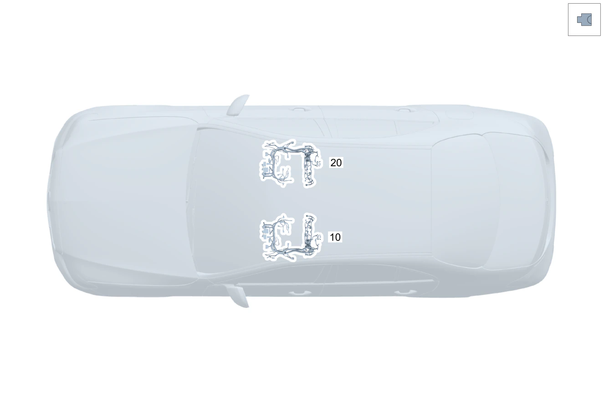

| № | Артикул | Название | Кол. | Примечание | Ограничение |
|---|---|---|---|---|---|
| 10 | Q 000000000002 | Возможен заказ только отдельных компонентов жгута проводов | 1 | Жгут электропроводки \- переднее сиденье слева Рулевое управление: Влево | |
| 10 | Q 000000000002 | Возможен заказ только отдельных компонентов жгута проводов | 1 | Жгут электропроводки \- переднее сиденье слева Рулевое управление: Вправо | |
| 10 | Q 000000000002 | Возможен заказ только отдельных компонентов жгута проводов | 1 | Жгут электропроводки \- переднее сиденье слева Рулевое управление: Влево | 873 |
| 10 | Q 000000000002 | Возможен заказ только отдельных компонентов жгута проводов | 1 | Жгут электропроводки \- переднее сиденье слева Рулевое управление: Вправо | 873 |
| 10 | Q 000000000002 | Возможен заказ только отдельных компонентов жгута проводов | 1 | Жгут электропроводки \- переднее сиденье слева Рулевое управление: Влево | 7U2/7U3 |
| 10 | Q 000000000002 | Возможен заказ только отдельных компонентов жгута проводов | 1 | Жгут электропроводки \- переднее сиденье слева Рулевое управление: Вправо | 7U2/7U3 |
| 10 | Q 000000000002 | Возможен заказ только отдельных компонентов жгута проводов | 1 | Жгут электропроводки \- переднее сиденье слева Рулевое управление: Влево | (7U2/7U3)+873 |
| 10 | Q 000000000002 | Возможен заказ только отдельных компонентов жгута проводов | 1 | Жгут электропроводки \- переднее сиденье слева Рулевое управление: Вправо | (7U2/7U3)+873 |
| 10 | Q 000000000002 | Возможен заказ только отдельных компонентов жгута проводов | 1 | Жгут электропроводки \- переднее сиденье слева Рулевое управление: Влево | (7U2/7U3)+292 |
| 10 | Q 000000000002 | Возможен заказ только отдельных компонентов жгута проводов | 1 | Жгут электропроводки \- переднее сиденье слева Рулевое управление: Вправо | (7U2/7U3)+292 |
| 10 | Q 000000000002 | Возможен заказ только отдельных компонентов жгута проводов | 1 | Жгут электропроводки \- переднее сиденье слева Рулевое управление: Влево | (7U2/7U3)+292+873 |
| 10 | Q 000000000002 | Возможен заказ только отдельных компонентов жгута проводов | 1 | Жгут электропроводки \- переднее сиденье слева Рулевое управление: Вправо | (7U2/7U3)+292+873 |
| 10 | Q 000000000002 | Возможен заказ только отдельных компонентов жгута проводов | 1 | Жгут электропроводки \- переднее сиденье слева Рулевое управление: Влево | U22 |
| 10 | Q 000000000002 | Возможен заказ только отдельных компонентов жгута проводов | 1 | Жгут электропроводки \- переднее сиденье слева Рулевое управление: Вправо | U22 |
| 10 | Q 000000000002 | Возможен заказ только отдельных компонентов жгута проводов | 1 | Жгут электропроводки \- переднее сиденье слева Рулевое управление: Влево | U22+873 |
| 10 | Q 000000000002 | Возможен заказ только отдельных компонентов жгута проводов | 1 | Жгут электропроводки \- переднее сиденье слева Рулевое управление: Вправо | U22+873 |
| 10 | Q 000000000002 | Возможен заказ только отдельных компонентов жгута проводов | 1 | Жгут электропроводки \- переднее сиденье слева Рулевое управление: Вправо | (P86/PTF)+7U3+(803+053/804/805/806) |
| 10 | Q 000000000002 | Возможен заказ только отдельных компонентов жгута проводов | 1 | Жгут электропроводки \- переднее сиденье слева Рулевое управление: Вправо | (P86/PTF)+7U3 |
| 10 | Q 000000000002 | Возможен заказ только отдельных компонентов жгута проводов | 1 | Жгут электропроводки \- переднее сиденье слева Рулевое управление: Вправо | (P86/PTF)+7U3+873+(803+053/804/805/806) |
| 10 | Q 000000000002 | Возможен заказ только отдельных компонентов жгута проводов | 1 | Жгут электропроводки \- переднее сиденье слева Рулевое управление: Вправо | (P86/PTF)+7U3+873 |
| 10 | Q 000000000002 | Возможен заказ только отдельных компонентов жгута проводов | 1 | Жгут электропроводки \- переднее сиденье слева Рулевое управление: Вправо | (P86/PTF)+7U3+292+(803+053/804/805/806) |
| 10 | Q 000000000002 | Возможен заказ только отдельных компонентов жгута проводов | 1 | Жгут электропроводки \- переднее сиденье слева Рулевое управление: Вправо | (P86/PTF)+7U3+292 |
| 10 | Q 000000000002 | Возможен заказ только отдельных компонентов жгута проводов | 1 | Жгут электропроводки \- переднее сиденье слева Рулевое управление: Вправо | (P86/PTF)+7U3+292+873+(803+053/804/805/806) |
| 10 | Q 000000000002 | Возможен заказ только отдельных компонентов жгута проводов | 1 | Жгут электропроводки \- переднее сиденье слева Рулевое управление: Вправо | (P86/PTF)+7U3+292+873 |
| 10 | Q 000000000002 | Возможен заказ только отдельных компонентов жгута проводов | 1 | Сиденье переднее (левое) с частичным электроприводом регулировки положения Рулевое управление: Влево | P65 |
| 10 | Q 000000000002 | Возможен заказ только отдельных компонентов жгута проводов | 1 | Сиденье переднее (левое) с частичным электроприводом регулировки положения Рулевое управление: Вправо | P65 |
| 10 | Q 000000000002 | Возможен заказ только отдельных компонентов жгута проводов | 1 | Сиденье переднее (левое) с частичным электроприводом регулировки положения Рулевое управление: Влево | P65+873 |
| 10 | Q 000000000002 | Возможен заказ только отдельных компонентов жгута проводов | 1 | Сиденье переднее (левое) с частичным электроприводом регулировки положения Рулевое управление: Вправо | P65+873 |
| 10 | Q 000000000002 | Возможен заказ только отдельных компонентов жгута проводов | 1 | Сиденье переднее (левое) с частичным электроприводом регулировки положения Рулевое управление: Влево | P65+401 |
| 10 | Q 000000000002 | Возможен заказ только отдельных компонентов жгута проводов | 1 | Сиденье переднее (левое) с частичным электроприводом регулировки положения Рулевое управление: Вправо | P65+401 |
| 10 | Q 000000000002 | Возможен заказ только отдельных компонентов жгута проводов | 1 | Сиденье переднее (левое) с частичным электроприводом регулировки положения Рулевое управление: Влево | P65+292 |
| 10 | Q 000000000002 | Возможен заказ только отдельных компонентов жгута проводов | 1 | Сиденье переднее (левое) с частичным электроприводом регулировки положения Рулевое управление: Вправо | P65+292 |
| 10 | Q 000000000002 | Возможен заказ только отдельных компонентов жгута проводов | 1 | Сиденье переднее (левое) с частичным электроприводом регулировки положения Рулевое управление: Влево | P65+873+292 |
| 10 | Q 000000000002 | Возможен заказ только отдельных компонентов жгута проводов | 1 | Сиденье переднее (левое) с частичным электроприводом регулировки положения Рулевое управление: Вправо | P65+873+292 |
| 10 | Q 000000000002 | Возможен заказ только отдельных компонентов жгута проводов | 1 | Сиденье переднее (левое) с частичным электроприводом регулировки положения Рулевое управление: Влево | P65+401+292 |
| 10 | Q 000000000002 | Возможен заказ только отдельных компонентов жгута проводов | 1 | Сиденье переднее (левое) с частичным электроприводом регулировки положения Рулевое управление: Вправо | P65+401+292 |
| 10 | Q 000000000002 | Возможен заказ только отдельных компонентов жгута проводов | 1 | Сиденье переднее (левое) с частичным электроприводом регулировки положения Рулевое управление: Влево | P65+399 |
| 10 | Q 000000000002 | Возможен заказ только отдельных компонентов жгута проводов | 1 | Сиденье переднее (левое) с частичным электроприводом регулировки положения Рулевое управление: Вправо | P65+399 |
| 10 | Q 000000000002 | Возможен заказ только отдельных компонентов жгута проводов | 1 | Сиденье переднее (левое) с частичным электроприводом регулировки положения Рулевое управление: Влево | P65+873+399 |
| 10 | Q 000000000002 | Возможен заказ только отдельных компонентов жгута проводов | 1 | Сиденье переднее (левое) с частичным электроприводом регулировки положения Рулевое управление: Вправо | P65+873+399 |
| 10 | Q 000000000002 | Возможен заказ только отдельных компонентов жгута проводов | 1 | Сиденье переднее (левое) с частичным электроприводом регулировки положения Рулевое управление: Влево | P65+401+399 |
| 10 | Q 000000000002 | Возможен заказ только отдельных компонентов жгута проводов | 1 | Сиденье переднее (левое) с частичным электроприводом регулировки положения Рулевое управление: Вправо | P65+401+399 |
| 10 | Q 000000000002 | Возможен заказ только отдельных компонентов жгута проводов | 1 | Сиденье переднее (левое) с частичным электроприводом регулировки положения Рулевое управление: Влево | P65+292+399 |
| 10 | Q 000000000002 | Возможен заказ только отдельных компонентов жгута проводов | 1 | Сиденье переднее (левое) с частичным электроприводом регулировки положения Рулевое управление: Вправо | P65+292+399 |
| 10 | Q 000000000002 | Возможен заказ только отдельных компонентов жгута проводов | 1 | Сиденье переднее (левое) с частичным электроприводом регулировки положения Рулевое управление: Влево | P65+873+292+399 |
| 10 | Q 000000000002 | Возможен заказ только отдельных компонентов жгута проводов | 1 | Сиденье переднее (левое) с частичным электроприводом регулировки положения Рулевое управление: Вправо | P65+873+292+399 |
| 10 | Q 000000000002 | Возможен заказ только отдельных компонентов жгута проводов | 1 | Сиденье переднее (левое) с частичным электроприводом регулировки положения Рулевое управление: Влево | P65+401+292+399 |
| 10 | Q 000000000002 | Возможен заказ только отдельных компонентов жгута проводов | 1 | Сиденье переднее (левое) с частичным электроприводом регулировки положения Рулевое управление: Вправо | P65+401+292+399 |
| 10 | Q 000000000002 | Возможен заказ только отдельных компонентов жгута проводов | 1 | Сиденье переднее (левое) с частичным электроприводом регулировки положения Рулевое управление: Вправо | (805/806)+P65 |
| 10 | Q 000000000002 | Возможен заказ только отдельных компонентов жгута проводов | 1 | Сиденье переднее (левое) с частичным электроприводом регулировки положения Рулевое управление: Вправо | P65 |
| 10 | Q 000000000002 | Возможен заказ только отдельных компонентов жгута проводов | 1 | Сиденье переднее (левое) с частичным электроприводом регулировки положения Рулевое управление: Вправо | (805/806)+P65+873 |
| 10 | Q 000000000002 | Возможен заказ только отдельных компонентов жгута проводов | 1 | Сиденье переднее (левое) с частичным электроприводом регулировки положения Рулевое управление: Вправо | P65+873 |
| 10 | Q 000000000002 | Возможен заказ только отдельных компонентов жгута проводов | 1 | Сиденье переднее (левое) с частичным электроприводом регулировки положения Рулевое управление: Вправо | (805/806)+P65+401 |
| 10 | Q 000000000002 | Возможен заказ только отдельных компонентов жгута проводов | 1 | Сиденье переднее (левое) с частичным электроприводом регулировки положения Рулевое управление: Вправо | P65+401 |
| 10 | Q 000000000002 | Возможен заказ только отдельных компонентов жгута проводов | 1 | Сиденье переднее (левое) с частичным электроприводом регулировки положения Рулевое управление: Вправо | (805/806)+P65+292 |
| 10 | Q 000000000002 | Возможен заказ только отдельных компонентов жгута проводов | 1 | Сиденье переднее (левое) с частичным электроприводом регулировки положения Рулевое управление: Вправо | P65+292 |
| 10 | Q 000000000002 | Возможен заказ только отдельных компонентов жгута проводов | 1 | Сиденье переднее (левое) с частичным электроприводом регулировки положения Рулевое управление: Вправо | (805/806)+P65+873+292 |
| 10 | Q 000000000002 | Возможен заказ только отдельных компонентов жгута проводов | 1 | Сиденье переднее (левое) с частичным электроприводом регулировки положения Рулевое управление: Вправо | P65+873+292 |
| 10 | Q 000000000002 | Возможен заказ только отдельных компонентов жгута проводов | 1 | Сиденье переднее (левое) с частичным электроприводом регулировки положения Рулевое управление: Вправо | (805/806)+P65+401+292 |
| 10 | Q 000000000002 | Возможен заказ только отдельных компонентов жгута проводов | 1 | Сиденье переднее (левое) с частичным электроприводом регулировки положения Рулевое управление: Вправо | P65+401+292 |
| 10 | Q 000000000002 | Возможен заказ только отдельных компонентов жгута проводов | 1 | Сиденье переднее (левое) с частичным электроприводом регулировки положения Рулевое управление: Вправо | (805/806)+P65+399 |
| 10 | Q 000000000002 | Возможен заказ только отдельных компонентов жгута проводов | 1 | Сиденье переднее (левое) с частичным электроприводом регулировки положения Рулевое управление: Вправо | P65+399 |
| 10 | Q 000000000002 | Возможен заказ только отдельных компонентов жгута проводов | 1 | Сиденье переднее (левое) с частичным электроприводом регулировки положения Рулевое управление: Вправо | (805/806)+P65+873+399 |
| 10 | Q 000000000002 | Возможен заказ только отдельных компонентов жгута проводов | 1 | Сиденье переднее (левое) с частичным электроприводом регулировки положения Рулевое управление: Вправо | P65+873+399 |
| 10 | Q 000000000002 | Возможен заказ только отдельных компонентов жгута проводов | 1 | Сиденье переднее (левое) с частичным электроприводом регулировки положения Рулевое управление: Вправо | (805/806)+P65+401+399 |
| 10 | Q 000000000002 | Возможен заказ только отдельных компонентов жгута проводов | 1 | Сиденье переднее (левое) с частичным электроприводом регулировки положения Рулевое управление: Вправо | P65+401+399 |
| 10 | Q 000000000002 | Возможен заказ только отдельных компонентов жгута проводов | 1 | Сиденье переднее (левое) с частичным электроприводом регулировки положения Рулевое управление: Вправо | (805/806)+P65+292+399 |
| 10 | Q 000000000002 | Возможен заказ только отдельных компонентов жгута проводов | 1 | Сиденье переднее (левое) с частичным электроприводом регулировки положения Рулевое управление: Вправо | P65+292+399 |
| 10 | Q 000000000002 | Возможен заказ только отдельных компонентов жгута проводов | 1 | Сиденье переднее (левое) с частичным электроприводом регулировки положения Рулевое управление: Вправо | (805/806)+P65+873+292+399 |
| 10 | Q 000000000002 | Возможен заказ только отдельных компонентов жгута проводов | 1 | Сиденье переднее (левое) с частичным электроприводом регулировки положения Рулевое управление: Вправо | P65+873+292+399 |
| 10 | Q 000000000002 | Возможен заказ только отдельных компонентов жгута проводов | 1 | Сиденье переднее (левое) с частичным электроприводом регулировки положения Рулевое управление: Вправо | (805/806)+P65+401+292+399 |
| 10 | Q 000000000002 | Возможен заказ только отдельных компонентов жгута проводов | 1 | Сиденье переднее (левое) с частичным электроприводом регулировки положения Рулевое управление: Вправо | P65+401+292+399 |
| 10 | Q 000000000002 | Возможен заказ только отдельных компонентов жгута проводов | 1 | Сиденье переднее (левое) с частичным электроприводом регулировки положения Рулевое управление: Вправо | (P86/PTF)+7U3+P65+873+(803+053/804/805/806) |
| 10 | Q 000000000002 | Возможен заказ только отдельных компонентов жгута проводов | 1 | Сиденье переднее (левое) с частичным электроприводом регулировки положения Рулевое управление: Вправо | (P86/PTF)+7U3+P65+873 |
| 10 | Q 000000000002 | Возможен заказ только отдельных компонентов жгута проводов | 1 | Сиденье переднее (левое) с частичным электроприводом регулировки положения Рулевое управление: Вправо | (P86/PTF)+7U3+P65+873+292+(803+053/804/805/806) |
| 10 | Q 000000000002 | Возможен заказ только отдельных компонентов жгута проводов | 1 | Сиденье переднее (левое) с частичным электроприводом регулировки положения Рулевое управление: Вправо | (P86/PTF)+7U3+P65+873+292 |
| 10 | Q 000000000002 | Возможен заказ только отдельных компонентов жгута проводов | 1 | Сиденье (переднее левое) с полным электроприводом регулировки положения (с функцией памяти) Рулевое управление: Влево | (805/806)+241+325+(494/460) |
| 10 | Q 000000000002 | Возможен заказ только отдельных компонентов жгута проводов | 1 | Сиденье (переднее левое) с полным электроприводом регулировки положения (с функцией памяти) Рулевое управление: Влево | 241+325+(494/460) |
| 10 | Q 000000000002 | Возможен заказ только отдельных компонентов жгута проводов | 1 | Сиденье (переднее левое) с полным электроприводом регулировки положения (с функцией памяти) Рулевое управление: Влево | (805/806)+241+873+325+(494/460) |
| 10 | Q 000000000002 | Возможен заказ только отдельных компонентов жгута проводов | 1 | Сиденье (переднее левое) с полным электроприводом регулировки положения (с функцией памяти) Рулевое управление: Влево | 241+873+325+(494/460) |
| 10 | Q 000000000002 | Возможен заказ только отдельных компонентов жгута проводов | 1 | Сиденье (переднее левое) с полным электроприводом регулировки положения (с функцией памяти) Рулевое управление: Влево | (805/806)+241+401+325+(494/460) |
| 10 | Q 000000000002 | Возможен заказ только отдельных компонентов жгута проводов | 1 | Сиденье (переднее левое) с полным электроприводом регулировки положения (с функцией памяти) Рулевое управление: Влево | 241+401+325+(494/460) |
| 10 | Q 000000000002 | Возможен заказ только отдельных компонентов жгута проводов | 1 | Сиденье (переднее левое) с полным электроприводом регулировки положения (с функцией памяти) Рулевое управление: Влево | (805/806)+241+292+325+(494/460) |
| 10 | Q 000000000002 | Возможен заказ только отдельных компонентов жгута проводов | 1 | Сиденье (переднее левое) с полным электроприводом регулировки положения (с функцией памяти) Рулевое управление: Влево | 241+292+325+(494/460) |
| 10 | Q 000000000002 | Возможен заказ только отдельных компонентов жгута проводов | 1 | Сиденье (переднее левое) с полным электроприводом регулировки положения (с функцией памяти) Рулевое управление: Влево | (805/806)+241+873+292+325+(494/460) |
| 10 | Q 000000000002 | Возможен заказ только отдельных компонентов жгута проводов | 1 | Сиденье (переднее левое) с полным электроприводом регулировки положения (с функцией памяти) Рулевое управление: Влево | 241+873+292+325+(494/460) |
| 10 | Q 000000000002 | Возможен заказ только отдельных компонентов жгута проводов | 1 | Сиденье (переднее левое) с полным электроприводом регулировки положения (с функцией памяти) Рулевое управление: Влево | (805/806)+241+401+292+325+(494/460) |
| 10 | Q 000000000002 | Возможен заказ только отдельных компонентов жгута проводов | 1 | Сиденье (переднее левое) с полным электроприводом регулировки положения (с функцией памяти) Рулевое управление: Влево | 241+401+292+325+(494/460) |
| 10 | Q 000000000002 | Возможен заказ только отдельных компонентов жгута проводов | 1 | Сиденье переднее (левое) с полным электроприводом регулировки положения (без функции памяти) Рулевое управление: Влево | 221+325 |
| 10 | Q 000000000002 | Возможен заказ только отдельных компонентов жгута проводов | 1 | Сиденье переднее (левое) с полным электроприводом регулировки положения (без функции памяти) Рулевое управление: Влево | 221+873+325 |
| 10 | Q 000000000002 | Возможен заказ только отдельных компонентов жгута проводов | 1 | Сиденье переднее (левое) с полным электроприводом регулировки положения (без функции памяти) Рулевое управление: Влево | 221+401+325 |
| 10 | Q 000000000002 | Возможен заказ только отдельных компонентов жгута проводов | 1 | Сиденье переднее (левое) с полным электроприводом регулировки положения (без функции памяти) Рулевое управление: Влево | 221+292+325 |
| 10 | Q 000000000002 | Возможен заказ только отдельных компонентов жгута проводов | 1 | Сиденье переднее (левое) с полным электроприводом регулировки положения (без функции памяти) Рулевое управление: Влево | 221+873+292+325 |
| 10 | Q 000000000002 | Возможен заказ только отдельных компонентов жгута проводов | 1 | Сиденье переднее (левое) с полным электроприводом регулировки положения (без функции памяти) Рулевое управление: Влево | 221+401+292+325 |
| 10 | Q 000000000002 | Возможен заказ только отдельных компонентов жгута проводов | 1 | Сиденье переднее (левое) с полным электроприводом регулировки положения (без функции памяти) Рулевое управление: Влево | 221+399+325 |
| 10 | Q 000000000002 | Возможен заказ только отдельных компонентов жгута проводов | 1 | Сиденье переднее (левое) с полным электроприводом регулировки положения (без функции памяти) Рулевое управление: Влево | 221+873+399+325 |
| 10 | Q 000000000002 | Возможен заказ только отдельных компонентов жгута проводов | 1 | Сиденье переднее (левое) с полным электроприводом регулировки положения (без функции памяти) Рулевое управление: Влево | 221+401+399+325 |
| 10 | Q 000000000002 | Возможен заказ только отдельных компонентов жгута проводов | 1 | Сиденье переднее (левое) с полным электроприводом регулировки положения (без функции памяти) Рулевое управление: Влево | 221+292+399+325 |
| 10 | Q 000000000002 | Возможен заказ только отдельных компонентов жгута проводов | 1 | Сиденье переднее (левое) с полным электроприводом регулировки положения (без функции памяти) Рулевое управление: Влево | 221+873+292+399+325 |
| 10 | Q 000000000002 | Возможен заказ только отдельных компонентов жгута проводов | 1 | Сиденье переднее (левое) с полным электроприводом регулировки положения (без функции памяти) Рулевое управление: Влево | 221+401+292+399+325 |
| 10 | Q 000000000002 | Возможен заказ только отдельных компонентов жгута проводов | 1 | Сиденье переднее (левое) с частичным электроприводом регулировки положения Рулевое управление: Влево | 555+P65+873 |
| 10 | Q 000000000002 | Возможен заказ только отдельных компонентов жгута проводов | 1 | Сиденье переднее (левое) с частичным электроприводом регулировки положения Рулевое управление: Вправо | 555+P65+873 |
| 10 | Q 000000000002 | Возможен заказ только отдельных компонентов жгута проводов | 1 | Сиденье переднее (левое) с частичным электроприводом регулировки положения Рулевое управление: Влево | 555+P65+873+292 |
| 10 | Q 000000000002 | Возможен заказ только отдельных компонентов жгута проводов | 1 | Сиденье переднее (левое) с частичным электроприводом регулировки положения Рулевое управление: Вправо | 555+P65+873+292 |
| 10 | Q 000000000002 | Возможен заказ только отдельных компонентов жгута проводов | 1 | Сиденье переднее (левое) с частичным электроприводом регулировки положения Рулевое управление: Влево | 555+241+873 |
| 10 | Q 000000000002 | Возможен заказ только отдельных компонентов жгута проводов | 1 | Сиденье переднее (левое) с частичным электроприводом регулировки положения Рулевое управление: Влево | 555+275+873 |
| 10 | Q 000000000002 | Возможен заказ только отдельных компонентов жгута проводов | 1 | Сиденье переднее (левое) с частичным электроприводом регулировки положения Рулевое управление: Вправо | 555+241+873 |
| 10 | Q 000000000002 | Возможен заказ только отдельных компонентов жгута проводов | 1 | Сиденье переднее (левое) с частичным электроприводом регулировки положения Рулевое управление: Вправо | 555+241+873 |
| 10 | Q 000000000002 | Возможен заказ только отдельных компонентов жгута проводов | 1 | Сиденье переднее (левое) с частичным электроприводом регулировки положения Рулевое управление: Влево | 555+241+873+292 |
| 10 | Q 000000000002 | Возможен заказ только отдельных компонентов жгута проводов | 1 | Сиденье переднее (левое) с частичным электроприводом регулировки положения Рулевое управление: Влево | 555+275+873+292 |
| 10 | Q 000000000002 | Возможен заказ только отдельных компонентов жгута проводов | 1 | Сиденье переднее (левое) с частичным электроприводом регулировки положения Рулевое управление: Влево | 555+241+401+409 |
| 10 | Q 000000000002 | Возможен заказ только отдельных компонентов жгута проводов | 1 | Сиденье переднее (левое) с частичным электроприводом регулировки положения Рулевое управление: Влево | 555+275+401+409 |
| 10 | Q 000000000002 | Возможен заказ только отдельных компонентов жгута проводов | 1 | Сиденье переднее (левое) с частичным электроприводом регулировки положения Рулевое управление: Влево | 555+241+873+292+409 |
| 10 | Q 000000000002 | Возможен заказ только отдельных компонентов жгута проводов | 1 | Сиденье переднее (левое) с частичным электроприводом регулировки положения Рулевое управление: Влево | 555+275+873+292+409 |
| 10 | Q 000000000002 | Возможен заказ только отдельных компонентов жгута проводов | 1 | Сиденье переднее (левое) с частичным электроприводом регулировки положения Рулевое управление: Вправо | 555+241+401+409 |
| 10 | Q 000000000002 | Возможен заказ только отдельных компонентов жгута проводов | 1 | Сиденье переднее (левое) с частичным электроприводом регулировки положения Рулевое управление: Вправо | 555+241+401+409 |
| 10 | Q 000000000002 | Возможен заказ только отдельных компонентов жгута проводов | 1 | Сиденье переднее (левое) с частичным электроприводом регулировки положения Рулевое управление: Вправо | 555+241+873+292+409 |
| 10 | Q 000000000002 | Возможен заказ только отдельных компонентов жгута проводов | 1 | Сиденье переднее (левое) с частичным электроприводом регулировки положения Рулевое управление: Вправо | 555+241+873+292+409 |
| 10 | Q 000000000002 | Возможен заказ только отдельных компонентов жгута проводов | 1 | Сиденье переднее (левое) с частичным электроприводом регулировки положения Рулевое управление: Влево | 555+241+401+292+409 |
| 10 | Q 000000000002 | Возможен заказ только отдельных компонентов жгута проводов | 1 | Сиденье переднее (левое) с частичным электроприводом регулировки положения Рулевое управление: Влево | 555+275+401+292+409 |
| 10 | Q 000000000002 | Возможен заказ только отдельных компонентов жгута проводов | 1 | Сиденье переднее (левое) с частичным электроприводом регулировки положения Рулевое управление: Вправо | 555+241+401+292+409 |
| 10 | Q 000000000002 | Возможен заказ только отдельных компонентов жгута проводов | 1 | Сиденье переднее (левое) с частичным электроприводом регулировки положения Рулевое управление: Вправо | 555+241+401+292+409 |
| 10 | Q 000000000002 | Возможен заказ только отдельных компонентов жгута проводов | 1 | Сиденье переднее (левое) с частичным электроприводом регулировки положения Рулевое управление: Вправо | 555+241+873+292 |
| 10 | Q 000000000002 | Возможен заказ только отдельных компонентов жгута проводов | 1 | Сиденье переднее (левое) с частичным электроприводом регулировки положения Рулевое управление: Вправо | 555+241+873+292 |
| 10 | Q 000000000002 | Возможен заказ только отдельных компонентов жгута проводов | 1 | Сиденье переднее (левое) с частичным электроприводом регулировки положения Рулевое управление: Влево | 555+401 |
| 10 | Q 000000000002 | Возможен заказ только отдельных компонентов жгута проводов | 1 | Сиденье переднее (левое) с частичным электроприводом регулировки положения Рулевое управление: Влево | 555+241+401 |
| 10 | Q 000000000002 | Возможен заказ только отдельных компонентов жгута проводов | 1 | Сиденье переднее (левое) с частичным электроприводом регулировки положения Рулевое управление: Влево | 555+275+401 |
| 10 | Q 000000000002 | Возможен заказ только отдельных компонентов жгута проводов | 1 | Сиденье переднее (левое) с частичным электроприводом регулировки положения Рулевое управление: Вправо | 555+401 |
| 10 | Q 000000000002 | Возможен заказ только отдельных компонентов жгута проводов | 1 | Сиденье переднее (левое) с частичным электроприводом регулировки положения Рулевое управление: Вправо | 555+241+401 |
| 10 | Q 000000000002 | Возможен заказ только отдельных компонентов жгута проводов | 1 | Сиденье переднее (левое) с частичным электроприводом регулировки положения Рулевое управление: Вправо | 555+241+401 |
| 10 | Q 000000000002 | Возможен заказ только отдельных компонентов жгута проводов | 1 | Сиденье переднее (левое) с частичным электроприводом регулировки положения Рулевое управление: Влево | 555+401+292 |
| 10 | Q 000000000002 | Возможен заказ только отдельных компонентов жгута проводов | 1 | Сиденье переднее (левое) с частичным электроприводом регулировки положения Рулевое управление: Влево | 555+241+401+292 |
| 10 | Q 000000000002 | Возможен заказ только отдельных компонентов жгута проводов | 1 | Сиденье переднее (левое) с частичным электроприводом регулировки положения Рулевое управление: Влево | 555+275+401+292 |
| 10 | Q 000000000002 | Возможен заказ только отдельных компонентов жгута проводов | 1 | Сиденье переднее (левое) с частичным электроприводом регулировки положения Рулевое управление: Вправо | 555+401+292 |
| 10 | Q 000000000002 | Возможен заказ только отдельных компонентов жгута проводов | 1 | Сиденье переднее (левое) с частичным электроприводом регулировки положения Рулевое управление: Вправо | 555+241+401+292 |
| 10 | Q 000000000002 | Возможен заказ только отдельных компонентов жгута проводов | 1 | Сиденье переднее (левое) с частичным электроприводом регулировки положения Рулевое управление: Вправо | 555+241+401+292 |
| 10 | Q 000000000002 | Возможен заказ только отдельных компонентов жгута проводов | 1 | Сиденье переднее (левое) с частичным электроприводом регулировки положения Рулевое управление: Влево | 555+873+409 |
| 10 | Q 000000000002 | Возможен заказ только отдельных компонентов жгута проводов | 1 | Сиденье переднее (левое) с частичным электроприводом регулировки положения Рулевое управление: Влево | 555+241+873+409 |
| 10 | Q 000000000002 | Возможен заказ только отдельных компонентов жгута проводов | 1 | Сиденье переднее (левое) с частичным электроприводом регулировки положения Рулевое управление: Влево | 555+275+873+409 |
| 10 | Q 000000000002 | Возможен заказ только отдельных компонентов жгута проводов | 1 | Сиденье переднее (левое) с частичным электроприводом регулировки положения Рулевое управление: Вправо | 555+873+409 |
| 10 | Q 000000000002 | Возможен заказ только отдельных компонентов жгута проводов | 1 | Сиденье переднее (левое) с частичным электроприводом регулировки положения Рулевое управление: Вправо | 555+241+873+409 |
| 10 | Q 000000000002 | Возможен заказ только отдельных компонентов жгута проводов | 1 | Сиденье переднее (левое) с частичным электроприводом регулировки положения Рулевое управление: Вправо | 555+241+873+409 |
| 10 | Q 000000000002 | Возможен заказ только отдельных компонентов жгута проводов | 1 | Сиденье переднее (левое) с частичным электроприводом регулировки положения Рулевое управление: Вправо | 555+275+873+(803+053/804/805/806) |
| 10 | Q 000000000002 | Возможен заказ только отдельных компонентов жгута проводов | 1 | Сиденье переднее (левое) с частичным электроприводом регулировки положения Рулевое управление: Вправо | 555+241+873 |
| 10 | Q 000000000002 | Возможен заказ только отдельных компонентов жгута проводов | 1 | Сиденье переднее (левое) с частичным электроприводом регулировки положения Рулевое управление: Вправо | 555+275+401+409+(803+053/804/805/806) |
| 10 | Q 000000000002 | Возможен заказ только отдельных компонентов жгута проводов | 1 | Сиденье переднее (левое) с частичным электроприводом регулировки положения Рулевое управление: Вправо | 555+241+401+409 |
| 10 | Q 000000000002 | Возможен заказ только отдельных компонентов жгута проводов | 1 | Сиденье переднее (левое) с частичным электроприводом регулировки положения Рулевое управление: Вправо | 555+275+873+292+409+(803+053/804/805/806) |
| 10 | Q 000000000002 | Возможен заказ только отдельных компонентов жгута проводов | 1 | Сиденье переднее (левое) с частичным электроприводом регулировки положения Рулевое управление: Вправо | 555+241+873+292+409 |
| 10 | Q 000000000002 | Возможен заказ только отдельных компонентов жгута проводов | 1 | Сиденье переднее (левое) с частичным электроприводом регулировки положения Рулевое управление: Вправо | 555+275+401+292+409+(803+053/804/805/806) |
| 10 | Q 000000000002 | Возможен заказ только отдельных компонентов жгута проводов | 1 | Сиденье переднее (левое) с частичным электроприводом регулировки положения Рулевое управление: Вправо | 555+241+401+292+409 |
| 10 | Q 000000000002 | Возможен заказ только отдельных компонентов жгута проводов | 1 | Сиденье переднее (левое) с частичным электроприводом регулировки положения Рулевое управление: Вправо | 555+275+873+292+(803+053/804/805/806) |
| 10 | Q 000000000002 | Возможен заказ только отдельных компонентов жгута проводов | 1 | Сиденье переднее (левое) с частичным электроприводом регулировки положения Рулевое управление: Вправо | 555+241+873+292 |
| 10 | Q 000000000002 | Возможен заказ только отдельных компонентов жгута проводов | 1 | Сиденье переднее (левое) с частичным электроприводом регулировки положения Рулевое управление: Вправо | 555+275+401+(803+053/804/805/806) |
| 10 | Q 000000000002 | Возможен заказ только отдельных компонентов жгута проводов | 1 | Сиденье переднее (левое) с частичным электроприводом регулировки положения Рулевое управление: Вправо | 555+241+401 |
| 10 | Q 000000000002 | Возможен заказ только отдельных компонентов жгута проводов | 1 | Сиденье переднее (левое) с частичным электроприводом регулировки положения Рулевое управление: Вправо | 555+275+401+292+(803+053/804/805/806) |
| 10 | Q 000000000002 | Возможен заказ только отдельных компонентов жгута проводов | 1 | Сиденье переднее (левое) с частичным электроприводом регулировки положения Рулевое управление: Вправо | 555+241+401+292 |
| 10 | Q 000000000002 | Возможен заказ только отдельных компонентов жгута проводов | 1 | Сиденье переднее (левое) с частичным электроприводом регулировки положения Рулевое управление: Вправо | 555+275+873+409+(803+053/804/805/806) |
| 10 | Q 000000000002 | Возможен заказ только отдельных компонентов жгута проводов | 1 | Сиденье переднее (левое) с частичным электроприводом регулировки положения Рулевое управление: Вправо | 555+241+873+409 |
| 10 | Q 000000000002 | Возможен заказ только отдельных компонентов жгута проводов | 1 | Сиденье переднее (левое) с частичным электроприводом регулировки положения Рулевое управление: Вправо | (805/806/807)+555+275+873 |
| 10 | Q 000000000002 | Возможен заказ только отдельных компонентов жгута проводов | 1 | Сиденье переднее (левое) с частичным электроприводом регулировки положения Рулевое управление: Вправо | 555+275+873 |
| 10 | Q 000000000002 | Возможен заказ только отдельных компонентов жгута проводов | 1 | Сиденье переднее (левое) с частичным электроприводом регулировки положения Рулевое управление: Вправо | (805/806/807)+555+275+401+409 |
| 10 | Q 000000000002 | Возможен заказ только отдельных компонентов жгута проводов | 1 | Сиденье переднее (левое) с частичным электроприводом регулировки положения Рулевое управление: Вправо | 555+275+401+409 |
| 10 | Q 000000000002 | Возможен заказ только отдельных компонентов жгута проводов | 1 | Сиденье переднее (левое) с частичным электроприводом регулировки положения Рулевое управление: Вправо | (805/806/807)+555+275+409+873+292 |
| 10 | Q 000000000002 | Возможен заказ только отдельных компонентов жгута проводов | 1 | Сиденье переднее (левое) с частичным электроприводом регулировки положения Рулевое управление: Вправо | 555+275+409+873+292 |
| 10 | Q 000000000002 | Возможен заказ только отдельных компонентов жгута проводов | 1 | Сиденье переднее (левое) с частичным электроприводом регулировки положения Рулевое управление: Вправо | (805/806/807)+555+275+401+409+292 |
| 10 | Q 000000000002 | Возможен заказ только отдельных компонентов жгута проводов | 1 | Сиденье переднее (левое) с частичным электроприводом регулировки положения Рулевое управление: Вправо | 555+275+401+409+292 |
| 10 | Q 000000000002 | Возможен заказ только отдельных компонентов жгута проводов | 1 | Сиденье переднее (левое) с частичным электроприводом регулировки положения Рулевое управление: Вправо | (805/806/807)+555+275+292+873 |
| 10 | Q 000000000002 | Возможен заказ только отдельных компонентов жгута проводов | 1 | Сиденье переднее (левое) с частичным электроприводом регулировки положения Рулевое управление: Вправо | 555+275+292+873 |
| 10 | Q 000000000002 | Возможен заказ только отдельных компонентов жгута проводов | 1 | Сиденье переднее (левое) с частичным электроприводом регулировки положения Рулевое управление: Вправо | (805/806/807)+555+275+409+873 |
| 10 | Q 000000000002 | Возможен заказ только отдельных компонентов жгута проводов | 1 | Сиденье переднее (левое) с частичным электроприводом регулировки положения Рулевое управление: Вправо | 555+275+409+873 |
| 10 | Q 000000000002 | Возможен заказ только отдельных компонентов жгута проводов | 1 | Сиденье (переднее левое) с полным электроприводом регулировки положения (с функцией памяти) Рулевое управление: Влево | 555+241+873+(460/494) |
| 10 | Q 000000000002 | Возможен заказ только отдельных компонентов жгута проводов | 1 | Сиденье (переднее левое) с полным электроприводом регулировки положения (с функцией памяти) Рулевое управление: Влево | 555+241+873+(460/494) |
| 10 | Q 000000000002 | Возможен заказ только отдельных компонентов жгута проводов | 1 | Сиденье (переднее левое) с полным электроприводом регулировки положения (с функцией памяти) Рулевое управление: Влево | 555+275+873+(460/494) |
| 10 | Q 000000000002 | Возможен заказ только отдельных компонентов жгута проводов | 1 | Сиденье (переднее левое) с полным электроприводом регулировки положения (с функцией памяти) Рулевое управление: Влево | 555+241+873+292+(460/494) |
| 10 | Q 000000000002 | Возможен заказ только отдельных компонентов жгута проводов | 1 | Сиденье (переднее левое) с полным электроприводом регулировки положения (с функцией памяти) Рулевое управление: Влево | 555+241+873+292+(460/494) |
| 10 | Q 000000000002 | Возможен заказ только отдельных компонентов жгута проводов | 1 | Сиденье (переднее левое) с полным электроприводом регулировки положения (с функцией памяти) Рулевое управление: Влево | 555+275+873+292+(460/494) |
| 10 | Q 000000000002 | Возможен заказ только отдельных компонентов жгута проводов | 1 | Сиденье (переднее левое) с полным электроприводом регулировки положения (с функцией памяти) Рулевое управление: Влево | 555+401+(494/460) |
| 10 | Q 000000000002 | Возможен заказ только отдельных компонентов жгута проводов | 1 | Сиденье (переднее левое) с полным электроприводом регулировки положения (с функцией памяти) Рулевое управление: Влево | 555+241+401+(494/460) |
| 10 | Q 000000000002 | Возможен заказ только отдельных компонентов жгута проводов | 1 | Сиденье (переднее левое) с полным электроприводом регулировки положения (с функцией памяти) Рулевое управление: Влево | 555+275+401+(494/460) |
| 10 | Q 000000000002 | Возможен заказ только отдельных компонентов жгута проводов | 1 | Сиденье (переднее левое) с полным электроприводом регулировки положения (с функцией памяти) Рулевое управление: Влево | 555+401+292+(494/460) |
| 10 | Q 000000000002 | Возможен заказ только отдельных компонентов жгута проводов | 1 | Сиденье (переднее левое) с полным электроприводом регулировки положения (с функцией памяти) Рулевое управление: Влево | 555+241+401+292+(494/460) |
| 10 | Q 000000000002 | Возможен заказ только отдельных компонентов жгута проводов | 1 | Сиденье (переднее левое) с полным электроприводом регулировки положения (с функцией памяти) Рулевое управление: Влево | 555+275+401+292+(494/460) |
| 10 | Q 000000000002 | Возможен заказ только отдельных компонентов жгута проводов | 1 | Сиденье (переднее левое) с полным электроприводом регулировки положения (с функцией памяти) Рулевое управление: Влево | 555+241+401+409+(460/494) |
| 10 | Q 000000000002 | Возможен заказ только отдельных компонентов жгута проводов | 1 | Сиденье (переднее левое) с полным электроприводом регулировки положения (с функцией памяти) Рулевое управление: Влево | 555+241+401+409+(460/494) |
| 10 | Q 000000000002 | Возможен заказ только отдельных компонентов жгута проводов | 1 | Сиденье (переднее левое) с полным электроприводом регулировки положения (с функцией памяти) Рулевое управление: Влево | 555+241+(401+409/873+409)+(460/494) |
| 10 | Q 000000000002 | Возможен заказ только отдельных компонентов жгута проводов | 1 | Сиденье (переднее левое) с полным электроприводом регулировки положения (с функцией памяти) Рулевое управление: Влево | 555+275+(401+409/873+409)+(460/494) |
| 10 | Q 000000000002 | Возможен заказ только отдельных компонентов жгута проводов | 1 | Сиденье (переднее левое) с полным электроприводом регулировки положения (с функцией памяти) Рулевое управление: Влево | 555+241+401+292+409+(460/494) |
| 10 | Q 000000000002 | Возможен заказ только отдельных компонентов жгута проводов | 1 | Сиденье (переднее левое) с полным электроприводом регулировки положения (с функцией памяти) Рулевое управление: Влево | 555+241+401+292+409+(460/494) |
| 10 | Q 000000000002 | Возможен заказ только отдельных компонентов жгута проводов | 1 | Сиденье (переднее левое) с полным электроприводом регулировки положения (с функцией памяти) Рулевое управление: Влево | 555+241+(401+409/873+409)+292+(460/494) |
| 10 | Q 000000000002 | Возможен заказ только отдельных компонентов жгута проводов | 1 | Сиденье (переднее левое) с полным электроприводом регулировки положения (с функцией памяти) Рулевое управление: Влево | 555+275+(401+409/873+409)+292+(460/494) |
| 10 | Q 000000000002 | Возможен заказ только отдельных компонентов жгута проводов | 1 | Сиденье (переднее левое) с полным электроприводом регулировки положения (с функцией памяти) Рулевое управление: Влево | (805/806/807)+555+275+873+325+(460/494) |
| 10 | Q 000000000002 | Возможен заказ только отдельных компонентов жгута проводов | 1 | Сиденье (переднее левое) с полным электроприводом регулировки положения (с функцией памяти) Рулевое управление: Влево | 555+275+873+325+(460/494) |
| 10 | Q 000000000002 | Возможен заказ только отдельных компонентов жгута проводов | 1 | Сиденье (переднее левое) с полным электроприводом регулировки положения (с функцией памяти) Рулевое управление: Влево | (805/806/807)+555+275+873+325+292+(460/494) |
| 10 | Q 000000000002 | Возможен заказ только отдельных компонентов жгута проводов | 1 | Сиденье (переднее левое) с полным электроприводом регулировки положения (с функцией памяти) Рулевое управление: Влево | 555+275+873+325+292+(460/494) |
| 10 | Q 000000000002 | Возможен заказ только отдельных компонентов жгута проводов | 1 | Сиденье (переднее левое) с полным электроприводом регулировки положения (с функцией памяти) Рулевое управление: Влево | (805/806/807)+555+275+409+873+325+(460/494) |
| 10 | Q 000000000002 | Возможен заказ только отдельных компонентов жгута проводов | 1 | Сиденье (переднее левое) с полным электроприводом регулировки положения (с функцией памяти) Рулевое управление: Влево | 555+275+409+873+325+(460/494) |
| 10 | Q 000000000002 | Возможен заказ только отдельных компонентов жгута проводов | 1 | Сиденье (переднее левое) с полным электроприводом регулировки положения (с функцией памяти) Рулевое управление: Влево | (805/806/807)+555+275+409+873+325+292+(460/494) |
| 10 | Q 000000000002 | Возможен заказ только отдельных компонентов жгута проводов | 1 | Сиденье (переднее левое) с полным электроприводом регулировки положения (с функцией памяти) Рулевое управление: Влево | 555+275+409+873+325+292+(460/494) |
| 10 | Q 000000000002 | Возможен заказ только отдельных компонентов жгута проводов | 1 | Сиденье (переднее левое) с полным электроприводом регулировки положения (с функцией памяти) Рулевое управление: Влево | (805/806/807)+555+275+401+409+325+(460/494) |
| 10 | Q 000000000002 | Возможен заказ только отдельных компонентов жгута проводов | 1 | Сиденье (переднее левое) с полным электроприводом регулировки положения (с функцией памяти) Рулевое управление: Влево | 555+275+401+409+325+(460/494) |
| 10 | Q 000000000002 | Возможен заказ только отдельных компонентов жгута проводов | 1 | Сиденье (переднее левое) с полным электроприводом регулировки положения (с функцией памяти) Рулевое управление: Влево | (805/806/807)+555+275+401+409+325+292+(460/494) |
| 10 | Q 000000000002 | Возможен заказ только отдельных компонентов жгута проводов | 1 | Сиденье (переднее левое) с полным электроприводом регулировки положения (с функцией памяти) Рулевое управление: Влево | 555+275+401+409+325+292+(460/494) |
| 10 | Q 000000000002 | Возможен заказ только отдельных компонентов жгута проводов | 1 | Сиденье (переднее левое) с полным электроприводом регулировки положения (с функцией памяти) Рулевое управление: Влево | 555+P65+873+325 |
| 10 | Q 000000000002 | Возможен заказ только отдельных компонентов жгута проводов | 1 | Сиденье (переднее левое) с полным электроприводом регулировки положения (с функцией памяти) Рулевое управление: Влево | 555+P65+873+292+325 |
| 10 | Q 000000000002 | Возможен заказ только отдельных компонентов жгута проводов | 1 | Сиденье (переднее левое) с полным электроприводом регулировки положения (с функцией памяти) Рулевое управление: Влево | 555+241+873+325 |
| 10 | Q 000000000002 | Возможен заказ только отдельных компонентов жгута проводов | 1 | Сиденье (переднее левое) с полным электроприводом регулировки положения (с функцией памяти) Рулевое управление: Влево | 555+275+873+325 |
| 10 | Q 000000000002 | Возможен заказ только отдельных компонентов жгута проводов | 1 | Сиденье (переднее левое) с полным электроприводом регулировки положения (с функцией памяти) Рулевое управление: Влево | 555+241+401+325 |
| 10 | Q 000000000002 | Возможен заказ только отдельных компонентов жгута проводов | 1 | Сиденье (переднее левое) с полным электроприводом регулировки положения (с функцией памяти) Рулевое управление: Влево | 555+275+401+325 |
| 10 | Q 000000000002 | Возможен заказ только отдельных компонентов жгута проводов | 1 | Сиденье (переднее левое) с полным электроприводом регулировки положения (с функцией памяти) Рулевое управление: Влево | 555+241+873+292+325 |
| 10 | Q 000000000002 | Возможен заказ только отдельных компонентов жгута проводов | 1 | Сиденье (переднее левое) с полным электроприводом регулировки положения (с функцией памяти) Рулевое управление: Влево | 555+275+873+292+325 |
| 10 | Q 000000000002 | Возможен заказ только отдельных компонентов жгута проводов | 1 | Сиденье (переднее левое) с полным электроприводом регулировки положения (с функцией памяти) Рулевое управление: Влево | 555+241+401+292+325 |
| 10 | Q 000000000002 | Возможен заказ только отдельных компонентов жгута проводов | 1 | Сиденье (переднее левое) с полным электроприводом регулировки положения (с функцией памяти) Рулевое управление: Влево | 555+275+401+292+325 |
| 10 | Q 000000000002 | Возможен заказ только отдельных компонентов жгута проводов | 1 | Сиденье (переднее левое) с полным электроприводом регулировки положения (с функцией памяти) Рулевое управление: Влево | 555+241+873+409+325 |
| 10 | Q 000000000002 | Возможен заказ только отдельных компонентов жгута проводов | 1 | Сиденье (переднее левое) с полным электроприводом регулировки положения (с функцией памяти) Рулевое управление: Влево | 555+275+873+409+325 |
| 10 | Q 000000000002 | Возможен заказ только отдельных компонентов жгута проводов | 1 | Сиденье (переднее левое) с полным электроприводом регулировки положения (с функцией памяти) Рулевое управление: Влево | 555+241+401+409+325 |
| 10 | Q 000000000002 | Возможен заказ только отдельных компонентов жгута проводов | 1 | Сиденье (переднее левое) с полным электроприводом регулировки положения (с функцией памяти) Рулевое управление: Влево | 555+275+401+409+325 |
| 10 | Q 000000000002 | Возможен заказ только отдельных компонентов жгута проводов | 1 | Сиденье (переднее левое) с полным электроприводом регулировки положения (с функцией памяти) Рулевое управление: Влево | 555+241+873+292+409+325 |
| 10 | Q 000000000002 | Возможен заказ только отдельных компонентов жгута проводов | 1 | Сиденье (переднее левое) с полным электроприводом регулировки положения (с функцией памяти) Рулевое управление: Влево | 555+275+873+292+409+325 |
| 10 | Q 000000000002 | Возможен заказ только отдельных компонентов жгута проводов | 1 | Сиденье (переднее левое) с полным электроприводом регулировки положения (с функцией памяти) Рулевое управление: Влево | 555+241+401+292+409+325 |
| 10 | Q 000000000002 | Возможен заказ только отдельных компонентов жгута проводов | 1 | Сиденье (переднее левое) с полным электроприводом регулировки положения (с функцией памяти) Рулевое управление: Влево | 555+275+401+292+409+325 |
| 10 | Q 000000000002 | Возможен заказ только отдельных компонентов жгута проводов | 1 | Сиденье (переднее левое) с полным электроприводом регулировки положения (с функцией памяти) Рулевое управление: Влево | (805/806/807)+555+275+873+325+(51B/50B) |
| 10 | Q 000000000002 | Возможен заказ только отдельных компонентов жгута проводов | 1 | Сиденье (переднее левое) с полным электроприводом регулировки положения (с функцией памяти) Рулевое управление: Влево | 555+275+873+325+(51B/50B) |
| 10 | Q 000000000002 | Возможен заказ только отдельных компонентов жгута проводов | 1 | Сиденье (переднее левое) с полным электроприводом регулировки положения (с функцией памяти) Рулевое управление: Влево | (805/806/807)+555+275+873+325+292+(51B/50B) |
| 10 | Q 000000000002 | Возможен заказ только отдельных компонентов жгута проводов | 1 | Сиденье (переднее левое) с полным электроприводом регулировки положения (с функцией памяти) Рулевое управление: Влево | 555+275+873+325+292+(51B/50B) |
| 10 | Q 000000000002 | Возможен заказ только отдельных компонентов жгута проводов | 1 | Сиденье (переднее левое) с полным электроприводом регулировки положения (с функцией памяти) Рулевое управление: Влево | (805/806/807)+555+275+409+873+325+(51B/50B) |
| 10 | Q 000000000002 | Возможен заказ только отдельных компонентов жгута проводов | 1 | Сиденье (переднее левое) с полным электроприводом регулировки положения (с функцией памяти) Рулевое управление: Влево | 555+275+409+873+325+(51B/50B) |
| 10 | Q 000000000002 | Возможен заказ только отдельных компонентов жгута проводов | 1 | Сиденье (переднее левое) с полным электроприводом регулировки положения (с функцией памяти) Рулевое управление: Влево | (805/806/807)+555+275+409+873+325+292+(51B/50B) |
| 10 | Q 000000000002 | Возможен заказ только отдельных компонентов жгута проводов | 1 | Сиденье (переднее левое) с полным электроприводом регулировки положения (с функцией памяти) Рулевое управление: Влево | 555+275+409+873+325+292+(51B/50B) |
| 10 | Q 000000000002 | Возможен заказ только отдельных компонентов жгута проводов | 1 | Сиденье (переднее левое) с полным электроприводом регулировки положения (с функцией памяти) Рулевое управление: Влево | (805/806/807)+555+275+401+409+325+(51B/50B) |
| 10 | Q 000000000002 | Возможен заказ только отдельных компонентов жгута проводов | 1 | Сиденье (переднее левое) с полным электроприводом регулировки положения (с функцией памяти) Рулевое управление: Влево | 555+275+401+409+325+(51B/50B) |
| 10 | Q 000000000002 | Возможен заказ только отдельных компонентов жгута проводов | 1 | Сиденье (переднее левое) с полным электроприводом регулировки положения (с функцией памяти) Рулевое управление: Влево | (805/806/807)+555+275+401+409+325+292+(51B/50B) |
| 10 | Q 000000000002 | Возможен заказ только отдельных компонентов жгута проводов | 1 | Сиденье (переднее левое) с полным электроприводом регулировки положения (с функцией памяти) Рулевое управление: Влево | 555+275+401+409+325+292+(51B/50B) |
| 10 | Q 000000000002 | Возможен заказ только отдельных компонентов жгута проводов | 1 | Сиденье (переднее левое) с полным электроприводом регулировки положения (с функцией памяти) Рулевое управление: Влево | 555+241+873+(498/835) |
| 10 | Q 000000000002 | Возможен заказ только отдельных компонентов жгута проводов | 1 | Сиденье (переднее левое) с полным электроприводом регулировки положения (с функцией памяти) Рулевое управление: Влево | 555+275+873+(498/835) |
| 10 | Q 000000000002 | Возможен заказ только отдельных компонентов жгута проводов | 1 | Сиденье (переднее левое) с полным электроприводом регулировки положения (с функцией памяти) Рулевое управление: Влево | 555+241+401+(498/835) |
| 10 | Q 000000000002 | Возможен заказ только отдельных компонентов жгута проводов | 1 | Сиденье (переднее левое) с полным электроприводом регулировки положения (с функцией памяти) Рулевое управление: Влево | 555+275+401+(498/835) |
| 10 | Q 000000000002 | Возможен заказ только отдельных компонентов жгута проводов | 1 | Сиденье (переднее левое) с полным электроприводом регулировки положения (с функцией памяти) Рулевое управление: Влево | 555+241+873+292+(498/835) |
| 10 | Q 000000000002 | Возможен заказ только отдельных компонентов жгута проводов | 1 | Сиденье (переднее левое) с полным электроприводом регулировки положения (с функцией памяти) Рулевое управление: Влево | 555+275+873+292+(498/835) |
| 10 | Q 000000000002 | Возможен заказ только отдельных компонентов жгута проводов | 1 | Сиденье (переднее левое) с полным электроприводом регулировки положения (с функцией памяти) Рулевое управление: Влево | 555+241+401+292+(498/835) |
| 10 | Q 000000000002 | Возможен заказ только отдельных компонентов жгута проводов | 1 | Сиденье (переднее левое) с полным электроприводом регулировки положения (с функцией памяти) Рулевое управление: Влево | 555+275+401+292+(498/835) |
| 10 | Q 000000000002 | Возможен заказ только отдельных компонентов жгута проводов | 1 | Сиденье (переднее левое) с полным электроприводом регулировки положения (с функцией памяти) Рулевое управление: Влево | 555+241+873+409+(498/835) |
| 10 | Q 000000000002 | Возможен заказ только отдельных компонентов жгута проводов | 1 | Сиденье (переднее левое) с полным электроприводом регулировки положения (с функцией памяти) Рулевое управление: Влево | 555+275+873+409+(498/835) |
| 10 | Q 000000000002 | Возможен заказ только отдельных компонентов жгута проводов | 1 | Сиденье (переднее левое) с полным электроприводом регулировки положения (с функцией памяти) Рулевое управление: Вправо | 555+241+873+409+(498/835) |
| 10 | Q 000000000002 | Возможен заказ только отдельных компонентов жгута проводов | 1 | Сиденье (переднее левое) с полным электроприводом регулировки положения (с функцией памяти) Рулевое управление: Вправо | 555+275+873+409+(498/835) |
| 10 | Q 000000000002 | Возможен заказ только отдельных компонентов жгута проводов | 1 | Сиденье (переднее левое) с полным электроприводом регулировки положения (с функцией памяти) Рулевое управление: Влево | 555+241+401+409+(498/835) |
| 10 | Q 000000000002 | Возможен заказ только отдельных компонентов жгута проводов | 1 | Сиденье (переднее левое) с полным электроприводом регулировки положения (с функцией памяти) Рулевое управление: Влево | 555+275+401+409+(498/835) |
| 10 | Q 000000000002 | Возможен заказ только отдельных компонентов жгута проводов | 1 | Сиденье (переднее левое) с полным электроприводом регулировки положения (с функцией памяти) Рулевое управление: Вправо | 555+241+401+409+(498/835) |
| 10 | Q 000000000002 | Возможен заказ только отдельных компонентов жгута проводов | 1 | Сиденье (переднее левое) с полным электроприводом регулировки положения (с функцией памяти) Рулевое управление: Вправо | 555+275+401+409+(498/835) |
| 10 | Q 000000000002 | Возможен заказ только отдельных компонентов жгута проводов | 1 | Сиденье (переднее левое) с полным электроприводом регулировки положения (с функцией памяти) Рулевое управление: Влево | 555+241+873+292+409+(498/835) |
| 10 | Q 000000000002 | Возможен заказ только отдельных компонентов жгута проводов | 1 | Сиденье (переднее левое) с полным электроприводом регулировки положения (с функцией памяти) Рулевое управление: Влево | 555+275+873+292+409+(498/835) |
| 10 | Q 000000000002 | Возможен заказ только отдельных компонентов жгута проводов | 1 | Сиденье (переднее левое) с полным электроприводом регулировки положения (с функцией памяти) Рулевое управление: Вправо | 555+241+873+292+409+(498/835) |
| 10 | Q 000000000002 | Возможен заказ только отдельных компонентов жгута проводов | 1 | Сиденье (переднее левое) с полным электроприводом регулировки положения (с функцией памяти) Рулевое управление: Вправо | 555+275+873+292+409+(498/835) |
| 10 | Q 000000000002 | Возможен заказ только отдельных компонентов жгута проводов | 1 | Сиденье (переднее левое) с полным электроприводом регулировки положения (с функцией памяти) Рулевое управление: Влево | 555+241+401+292+409+(498/835) |
| 10 | Q 000000000002 | Возможен заказ только отдельных компонентов жгута проводов | 1 | Сиденье (переднее левое) с полным электроприводом регулировки положения (с функцией памяти) Рулевое управление: Влево | 555+275+401+292+409+(498/835) |
| 10 | Q 000000000002 | Возможен заказ только отдельных компонентов жгута проводов | 1 | Сиденье (переднее левое) с полным электроприводом регулировки положения (с функцией памяти) Рулевое управление: Вправо | 555+241+401+292+409+(498/835) |
| 10 | Q 000000000002 | Возможен заказ только отдельных компонентов жгута проводов | 1 | Сиденье (переднее левое) с полным электроприводом регулировки положения (с функцией памяти) Рулевое управление: Вправо | 555+275+401+292+409+(498/835) |
| 10 | Q 000000000002 | Возможен заказ только отдельных компонентов жгута проводов | 1 | Сиденье (переднее левое) с полным электроприводом регулировки положения (с функцией памяти) Рулевое управление: Влево | (805/806/807)+555+275+873+325 |
| 10 | Q 000000000002 | Возможен заказ только отдельных компонентов жгута проводов | 1 | Сиденье (переднее левое) с полным электроприводом регулировки положения (с функцией памяти) Рулевое управление: Влево | 555+275+873+325 |
| 10 | Q 000000000002 | Возможен заказ только отдельных компонентов жгута проводов | 1 | Сиденье (переднее левое) с полным электроприводом регулировки положения (с функцией памяти) Рулевое управление: Влево | (805/806/807)+555+275+873+325+292 |
| 10 | Q 000000000002 | Возможен заказ только отдельных компонентов жгута проводов | 1 | Сиденье (переднее левое) с полным электроприводом регулировки положения (с функцией памяти) Рулевое управление: Влево | 555+275+873+325+292 |
| 10 | Q 000000000002 | Возможен заказ только отдельных компонентов жгута проводов | 1 | Сиденье (переднее левое) с полным электроприводом регулировки положения (с функцией памяти) Рулевое управление: Влево | (805/806/807)+555+275+409+873+325 |
| 10 | Q 000000000002 | Возможен заказ только отдельных компонентов жгута проводов | 1 | Сиденье (переднее левое) с полным электроприводом регулировки положения (с функцией памяти) Рулевое управление: Влево | 555+275+409+873+325 |
| 10 | Q 000000000002 | Возможен заказ только отдельных компонентов жгута проводов | 1 | Сиденье (переднее левое) с полным электроприводом регулировки положения (с функцией памяти) Рулевое управление: Влево | (805/806/807)+555+275+409+873+325+292 |
| 10 | Q 000000000002 | Возможен заказ только отдельных компонентов жгута проводов | 1 | Сиденье (переднее левое) с полным электроприводом регулировки положения (с функцией памяти) Рулевое управление: Влево | 555+275+409+873+325+292 |
| 10 | Q 000000000002 | Возможен заказ только отдельных компонентов жгута проводов | 1 | Сиденье (переднее левое) с полным электроприводом регулировки положения (с функцией памяти) Рулевое управление: Влево | (805/806/807)+555+275+401+409+325 |
| 10 | Q 000000000002 | Возможен заказ только отдельных компонентов жгута проводов | 1 | Сиденье (переднее левое) с полным электроприводом регулировки положения (с функцией памяти) Рулевое управление: Влево | 555+275+401+409+325 |
| 10 | Q 000000000002 | Возможен заказ только отдельных компонентов жгута проводов | 1 | Сиденье (переднее левое) с полным электроприводом регулировки положения (с функцией памяти) Рулевое управление: Влево | (805/806/807)+555+275+401+409+325+292 |
| 10 | Q 000000000002 | Возможен заказ только отдельных компонентов жгута проводов | 1 | Сиденье (переднее левое) с полным электроприводом регулировки положения (с функцией памяти) Рулевое управление: Влево | 555+275+401+409+325+292 |
| 10 | Q 000000000002 | Возможен заказ только отдельных компонентов жгута проводов | 1 | Сиденье переднее (левое) с полным электроприводом регулировки положения (без функции памяти) Рулевое управление: Влево | (805/806)+241+325+835 |
| 10 | Q 000000000002 | Возможен заказ только отдельных компонентов жгута проводов | 1 | Сиденье переднее (левое) с полным электроприводом регулировки положения (без функции памяти) Рулевое управление: Влево | (805/806)+241+873+325+835 |
| 10 | Q 000000000002 | Возможен заказ только отдельных компонентов жгута проводов | 1 | Сиденье переднее (левое) с полным электроприводом регулировки положения (без функции памяти) Рулевое управление: Влево | (805/806)+241+401+325+835 |
| 10 | Q 000000000002 | Возможен заказ только отдельных компонентов жгута проводов | 1 | Сиденье переднее (левое) с полным электроприводом регулировки положения (без функции памяти) Рулевое управление: Влево | (805/806)+241+292+325+835 |
| 10 | Q 000000000002 | Возможен заказ только отдельных компонентов жгута проводов | 1 | Сиденье переднее (левое) с полным электроприводом регулировки положения (без функции памяти) Рулевое управление: Влево | (805/806)+241+873+292+325+835 |
| 10 | Q 000000000002 | Возможен заказ только отдельных компонентов жгута проводов | 1 | Сиденье переднее (левое) с полным электроприводом регулировки положения (без функции памяти) Рулевое управление: Влево | (805/806)+241+401+292+325+835 |
| 10 | Q 000000000002 | Возможен заказ только отдельных компонентов жгута проводов | 1 | Сиденье переднее (левое) с полным электроприводом регулировки положения (без функции памяти) Рулевое управление: Влево | (805/806)+241+399+325+835 |
| 10 | Q 000000000002 | Возможен заказ только отдельных компонентов жгута проводов | 1 | Сиденье переднее (левое) с полным электроприводом регулировки положения (без функции памяти) Рулевое управление: Влево | (805/806)+241+873+399+325+835 |
| 10 | Q 000000000002 | Возможен заказ только отдельных компонентов жгута проводов | 1 | Сиденье переднее (левое) с полным электроприводом регулировки положения (без функции памяти) Рулевое управление: Влево | (805/806)+241+401+399+325+835 |
| 10 | Q 000000000002 | Возможен заказ только отдельных компонентов жгута проводов | 1 | Сиденье переднее (левое) с полным электроприводом регулировки положения (без функции памяти) Рулевое управление: Влево | (805/806)+241+292+399+325+835 |
| 10 | Q 000000000002 | Возможен заказ только отдельных компонентов жгута проводов | 1 | Сиденье переднее (левое) с полным электроприводом регулировки положения (без функции памяти) Рулевое управление: Влево | (805/806)+241+873+292+399+325+835 |
| 10 | Q 000000000002 | Возможен заказ только отдельных компонентов жгута проводов | 1 | Сиденье переднее (левое) с полным электроприводом регулировки положения (без функции памяти) Рулевое управление: Влево | (805/806)+241+401+292+399+325+835 |
| 10 | Q 000000000002 | Возможен заказ только отдельных компонентов жгута проводов | 1 | Сиденье (переднее левое) с полным электроприводом регулировки положения (с функцией памяти) Рулевое управление: Вправо | (805/806)+241+498 |
| 10 | Q 000000000002 | Возможен заказ только отдельных компонентов жгута проводов | 1 | Сиденье (переднее левое) с полным электроприводом регулировки положения (с функцией памяти) Рулевое управление: Вправо | 241+498 |
| 10 | Q 000000000002 | Возможен заказ только отдельных компонентов жгута проводов | 1 | Сиденье (переднее левое) с полным электроприводом регулировки положения (с функцией памяти) Рулевое управление: Вправо | (805/806)+241+873+498 |
| 10 | Q 000000000002 | Возможен заказ только отдельных компонентов жгута проводов | 1 | Сиденье (переднее левое) с полным электроприводом регулировки положения (с функцией памяти) Рулевое управление: Вправо | 241+873+498 |
| 10 | Q 000000000002 | Возможен заказ только отдельных компонентов жгута проводов | 1 | Сиденье (переднее левое) с полным электроприводом регулировки положения (с функцией памяти) Рулевое управление: Вправо | (805/806)+241+401+498 |
| 10 | Q 000000000002 | Возможен заказ только отдельных компонентов жгута проводов | 1 | Сиденье (переднее левое) с полным электроприводом регулировки положения (с функцией памяти) Рулевое управление: Вправо | 241+401+498 |
| 10 | Q 000000000002 | Возможен заказ только отдельных компонентов жгута проводов | 1 | Сиденье (переднее левое) с полным электроприводом регулировки положения (с функцией памяти) Рулевое управление: Вправо | (805/806)+241+292+498 |
| 10 | Q 000000000002 | Возможен заказ только отдельных компонентов жгута проводов | 1 | Сиденье (переднее левое) с полным электроприводом регулировки положения (с функцией памяти) Рулевое управление: Вправо | 241+292+498 |
| 10 | Q 000000000002 | Возможен заказ только отдельных компонентов жгута проводов | 1 | Сиденье (переднее левое) с полным электроприводом регулировки положения (с функцией памяти) Рулевое управление: Вправо | (805/806)+241+873+292+498 |
| 10 | Q 000000000002 | Возможен заказ только отдельных компонентов жгута проводов | 1 | Сиденье (переднее левое) с полным электроприводом регулировки положения (с функцией памяти) Рулевое управление: Вправо | 241+873+292+498 |
| 10 | Q 000000000002 | Возможен заказ только отдельных компонентов жгута проводов | 1 | Сиденье (переднее левое) с полным электроприводом регулировки положения (с функцией памяти) Рулевое управление: Вправо | (805/806)+241+401+292+498 |
| 10 | Q 000000000002 | Возможен заказ только отдельных компонентов жгута проводов | 1 | Сиденье (переднее левое) с полным электроприводом регулировки положения (с функцией памяти) Рулевое управление: Вправо | 241+401+292+498 |
| 10 | Q 000000000002 | Возможен заказ только отдельных компонентов жгута проводов | 1 | Сиденье (переднее левое) с полным электроприводом регулировки положения (с функцией памяти) Рулевое управление: Вправо | (805/806)+241+399+498 |
| 10 | Q 000000000002 | Возможен заказ только отдельных компонентов жгута проводов | 1 | Сиденье (переднее левое) с полным электроприводом регулировки положения (с функцией памяти) Рулевое управление: Вправо | 241+399+498 |
| 10 | Q 000000000002 | Возможен заказ только отдельных компонентов жгута проводов | 1 | Сиденье (переднее левое) с полным электроприводом регулировки положения (с функцией памяти) Рулевое управление: Вправо | (805/806)+241+873+399+(498/835) |
| 10 | Q 000000000002 | Возможен заказ только отдельных компонентов жгута проводов | 1 | Сиденье (переднее левое) с полным электроприводом регулировки положения (с функцией памяти) Рулевое управление: Вправо | 241+873+399+(498/835) |
| 10 | Q 000000000002 | Возможен заказ только отдельных компонентов жгута проводов | 1 | Сиденье (переднее левое) с полным электроприводом регулировки положения (с функцией памяти) Рулевое управление: Вправо | (805/806)+241+401+399+498 |
| 10 | Q 000000000002 | Возможен заказ только отдельных компонентов жгута проводов | 1 | Сиденье (переднее левое) с полным электроприводом регулировки положения (с функцией памяти) Рулевое управление: Вправо | 241+401+399+498 |
| 10 | Q 000000000002 | Возможен заказ только отдельных компонентов жгута проводов | 1 | Сиденье (переднее левое) с полным электроприводом регулировки положения (с функцией памяти) Рулевое управление: Вправо | (805/806)+241+292+399+498 |
| 10 | Q 000000000002 | Возможен заказ только отдельных компонентов жгута проводов | 1 | Сиденье (переднее левое) с полным электроприводом регулировки положения (с функцией памяти) Рулевое управление: Вправо | 241+292+399+498 |
| 10 | Q 000000000002 | Возможен заказ только отдельных компонентов жгута проводов | 1 | Сиденье (переднее левое) с полным электроприводом регулировки положения (с функцией памяти) Рулевое управление: Вправо | (805/806)+241+873+292+399+(498/835) |
| 10 | Q 000000000002 | Возможен заказ только отдельных компонентов жгута проводов | 1 | Сиденье (переднее левое) с полным электроприводом регулировки положения (с функцией памяти) Рулевое управление: Вправо | 241+873+292+399+(498/835) |
| 10 | Q 000000000002 | Возможен заказ только отдельных компонентов жгута проводов | 1 | Сиденье (переднее левое) с полным электроприводом регулировки положения (с функцией памяти) Рулевое управление: Вправо | (805/806)+241+401+292+399+498 |
| 10 | Q 000000000002 | Возможен заказ только отдельных компонентов жгута проводов | 1 | Сиденье (переднее левое) с полным электроприводом регулировки положения (с функцией памяти) Рулевое управление: Вправо | 241+401+292+399+498 |
| 10 | Q 000000000002 | Возможен заказ только отдельных компонентов жгута проводов | 1 | Сиденье (переднее левое) с полным электроприводом регулировки положения (с функцией памяти) Рулевое управление: Вправо | (P86/PTF)+241+873+(805/806) |
| 10 | Q 000000000002 | Возможен заказ только отдельных компонентов жгута проводов | 1 | Сиденье (переднее левое) с полным электроприводом регулировки положения (с функцией памяти) Рулевое управление: Вправо | (P86/PTF)+241+873 |
| 10 | Q 000000000002 | Возможен заказ только отдельных компонентов жгута проводов | 1 | Сиденье (переднее левое) с полным электроприводом регулировки положения (с функцией памяти) Рулевое управление: Вправо | (P86/PTF)+241+401+(805/806) |
| 10 | Q 000000000002 | Возможен заказ только отдельных компонентов жгута проводов | 1 | Сиденье (переднее левое) с полным электроприводом регулировки положения (с функцией памяти) Рулевое управление: Вправо | (P86/PTF)+241+401 |
| 10 | Q 000000000002 | Возможен заказ только отдельных компонентов жгута проводов | 1 | Сиденье (переднее левое) с полным электроприводом регулировки положения (с функцией памяти) Рулевое управление: Вправо | (P86/PTF)+241+873+292+(805/806) |
| 10 | Q 000000000002 | Возможен заказ только отдельных компонентов жгута проводов | 1 | Сиденье (переднее левое) с полным электроприводом регулировки положения (с функцией памяти) Рулевое управление: Вправо | (P86/PTF)+241+873+292 |
| 10 | Q 000000000002 | Возможен заказ только отдельных компонентов жгута проводов | 1 | Сиденье (переднее левое) с полным электроприводом регулировки положения (с функцией памяти) Рулевое управление: Вправо | (P86/PTF)+241+401+292+(805/806) |
| 10 | Q 000000000002 | Возможен заказ только отдельных компонентов жгута проводов | 1 | Сиденье (переднее левое) с полным электроприводом регулировки положения (с функцией памяти) Рулевое управление: Вправо | (P86/PTF)+241+401+292 |
| 10 | Q 000000000002 | Возможен заказ только отдельных компонентов жгута проводов | 1 | Светодиодная подсветка салона слева Рулевое управление: Влево | 891/894 |
| 10 | Q 000000000002 | Возможен заказ только отдельных компонентов жгута проводов | 1 | Светодиодная подсветка салона слева Рулевое управление: Вправо | 891/894 |
| 10 | Q 000000000002 | Возможен заказ только отдельных компонентов жгута проводов | 1 | Светодиодная подсветка салона слева Рулевое управление: Влево | (806/807)+(891/894) |
| 10 | Q 000000000002 | Возможен заказ только отдельных компонентов жгута проводов | 1 | Светодиодная подсветка салона слева Рулевое управление: Влево | (891/894) |
| 10 | Q 000000000002 | Возможен заказ только отдельных компонентов жгута проводов | 1 | Светодиодная подсветка салона слева Рулевое управление: Вправо | (806/807)+(891/894) |
| 10 | Q 000000000002 | Возможен заказ только отдельных компонентов жгута проводов | 1 | Светодиодная подсветка салона слева Рулевое управление: Вправо | (891/894) |
| 20 | Q 000000000002 | Возможен заказ только отдельных компонентов жгута проводов | 1 | Сиденье переднее (правое) с частичным электроприводом регулировки положения Рулевое управление: Влево | (P86/PTF)+7U3+(803+053/804/805/806) |
| 20 | Q 000000000002 | Возможен заказ только отдельных компонентов жгута проводов | 1 | Сиденье переднее (правое) с частичным электроприводом регулировки положения Рулевое управление: Влево | (P86/PTF)+7U3 |
| 20 | Q 000000000002 | Возможен заказ только отдельных компонентов жгута проводов | 1 | Сиденье переднее (правое) с частичным электроприводом регулировки положения Рулевое управление: Влево | (P86/PTF)+7U3+873+(803+053/804/805/806) |
| 20 | Q 000000000002 | Возможен заказ только отдельных компонентов жгута проводов | 1 | Сиденье переднее (правое) с частичным электроприводом регулировки положения Рулевое управление: Влево | (P86/PTF)+7U3+873 |
| 20 | Q 000000000002 | Возможен заказ только отдельных компонентов жгута проводов | 1 | Сиденье переднее (правое) с частичным электроприводом регулировки положения Рулевое управление: Влево | (P86/PTF)+7U3+292+(803+053/804/805/806) |
| 20 | Q 000000000002 | Возможен заказ только отдельных компонентов жгута проводов | 1 | Сиденье переднее (правое) с частичным электроприводом регулировки положения Рулевое управление: Влево | (P86/PTF)+7U3+292 |
| 20 | Q 000000000002 | Возможен заказ только отдельных компонентов жгута проводов | 1 | Сиденье переднее (правое) с частичным электроприводом регулировки положения Рулевое управление: Влево | (P86/PTF)+7U3+292+873+(803+053/804/805/806) |
| 20 | Q 000000000002 | Возможен заказ только отдельных компонентов жгута проводов | 1 | Сиденье переднее (правое) с частичным электроприводом регулировки положения Рулевое управление: Влево | (P86/PTF)+7U3+292+873 |
| 20 | Q 000000000002 | Возможен заказ только отдельных компонентов жгута проводов | 1 | Сиденье переднее (правое) с частичным электроприводом регулировки положения Рулевое управление: Влево | (P86/PTF)+7U3+P65+873+(803+053/804/805/806) |
| 20 | Q 000000000002 | Возможен заказ только отдельных компонентов жгута проводов | 1 | Сиденье переднее (правое) с частичным электроприводом регулировки положения Рулевое управление: Влево | (P86/PTF)+7U3+P65+873 |
| 20 | Q 000000000002 | Возможен заказ только отдельных компонентов жгута проводов | 1 | Сиденье переднее (правое) с частичным электроприводом регулировки положения Рулевое управление: Влево | (P86/PTF)+7U3+P65+873+292+(803+053/804/805/806) |
| 20 | Q 000000000002 | Возможен заказ только отдельных компонентов жгута проводов | 1 | Сиденье переднее (правое) с частичным электроприводом регулировки положения Рулевое управление: Влево | (P86/PTF)+7U3+P65+873+292 |
| 20 | Q 000000000002 | Возможен заказ только отдельных компонентов жгута проводов | 1 | Сиденье переднее (правое) с полным электроприводом регулировки положения (без функции памяти) Рулевое управление: Вправо | 325 |
| 20 | Q 000000000002 | Возможен заказ только отдельных компонентов жгута проводов | 1 | Сиденье переднее (правое) с полным электроприводом регулировки положения (без функции памяти) Рулевое управление: Вправо | 873+325 |
| 20 | Q 000000000002 | Возможен заказ только отдельных компонентов жгута проводов | 1 | Сиденье переднее (правое) с полным электроприводом регулировки положения (без функции памяти) Рулевое управление: Вправо | U22+325 |
| 20 | Q 000000000002 | Возможен заказ только отдельных компонентов жгута проводов | 1 | Сиденье переднее (правое) с полным электроприводом регулировки положения (без функции памяти) Рулевое управление: Вправо | U22+873+325 |
| 20 | Q 000000000002 | Возможен заказ только отдельных компонентов жгута проводов | 1 | Сиденье переднее (правое) с полным электроприводом регулировки положения (без функции памяти) Рулевое управление: Вправо | (7U2/7U3)+325 |
| 20 | Q 000000000002 | Возможен заказ только отдельных компонентов жгута проводов | 1 | Сиденье переднее (правое) с полным электроприводом регулировки положения (без функции памяти) Рулевое управление: Вправо | (7U2/7U3)+325+873 |
| 20 | Q 000000000002 | Возможен заказ только отдельных компонентов жгута проводов | 1 | Сиденье переднее (правое) с полным электроприводом регулировки положения (без функции памяти) Рулевое управление: Вправо | (7U2/7U3)+325+292 |
| 20 | Q 000000000002 | Возможен заказ только отдельных компонентов жгута проводов | 1 | Сиденье переднее (правое) с полным электроприводом регулировки положения (без функции памяти) Рулевое управление: Вправо | (7U2/7U3)+325+292+873 |
| 20 | Q 000000000002 | Возможен заказ только отдельных компонентов жгута проводов | 1 | Сиденье переднее (правое) с полным электроприводом регулировки положения (без функции памяти) Рулевое управление: Вправо | 222+325 |
| 20 | Q 000000000002 | Возможен заказ только отдельных компонентов жгута проводов | 1 | Сиденье переднее (правое) с полным электроприводом регулировки положения (без функции памяти) Рулевое управление: Вправо | 222+873+325 |
| 20 | Q 000000000002 | Возможен заказ только отдельных компонентов жгута проводов | 1 | Сиденье переднее (правое) с полным электроприводом регулировки положения (без функции памяти) Рулевое управление: Вправо | 222+401+325 |
| 20 | Q 000000000002 | Возможен заказ только отдельных компонентов жгута проводов | 1 | Сиденье переднее (правое) с полным электроприводом регулировки положения (без функции памяти) Рулевое управление: Вправо | 222+292+325 |
| 20 | Q 000000000002 | Возможен заказ только отдельных компонентов жгута проводов | 1 | Сиденье переднее (правое) с полным электроприводом регулировки положения (без функции памяти) Рулевое управление: Вправо | 222+873+292+325 |
| 20 | Q 000000000002 | Возможен заказ только отдельных компонентов жгута проводов | 1 | Сиденье переднее (правое) с полным электроприводом регулировки положения (без функции памяти) Рулевое управление: Вправо | 222+401+292+325 |
| 20 | Q 000000000002 | Возможен заказ только отдельных компонентов жгута проводов | 1 | Сиденье переднее (правое) с полным электроприводом регулировки положения (без функции памяти) Рулевое управление: Вправо | 222+399+325 |
| 20 | Q 000000000002 | Возможен заказ только отдельных компонентов жгута проводов | 1 | Сиденье переднее (правое) с полным электроприводом регулировки положения (без функции памяти) Рулевое управление: Вправо | 222+873+399+325 |
| 20 | Q 000000000002 | Возможен заказ только отдельных компонентов жгута проводов | 1 | Сиденье переднее (правое) с полным электроприводом регулировки положения (без функции памяти) Рулевое управление: Вправо | 222+401+399+325 |
| 20 | Q 000000000002 | Возможен заказ только отдельных компонентов жгута проводов | 1 | Сиденье переднее (правое) с полным электроприводом регулировки положения (без функции памяти) Рулевое управление: Вправо | 222+292+399+325 |
| 20 | Q 000000000002 | Возможен заказ только отдельных компонентов жгута проводов | 1 | Сиденье переднее (правое) с полным электроприводом регулировки положения (без функции памяти) Рулевое управление: Вправо | 222+873+292+399+325 |
| 20 | Q 000000000002 | Возможен заказ только отдельных компонентов жгута проводов | 1 | Сиденье переднее (правое) с полным электроприводом регулировки положения (без функции памяти) Рулевое управление: Вправо | 222+401+292+399+325 |
| 20 | Q 000000000002 | Возможен заказ только отдельных компонентов жгута проводов | 1 | Сиденье (переднее правое) с полным электроприводом регулировки положения (с функцией памяти) Рулевое управление: Влево | 555+242+873+(494/460) |
| 20 | Q 000000000002 | Возможен заказ только отдельных компонентов жгута проводов | 1 | Сиденье (переднее правое) с полным электроприводом регулировки положения (с функцией памяти) Рулевое управление: Влево | 555+242+873+(494/460) |
| 20 | Q 000000000002 | Возможен заказ только отдельных компонентов жгута проводов | 1 | Сиденье (переднее правое) с полным электроприводом регулировки положения (с функцией памяти) Рулевое управление: Влево | 555+275+873+(494/460) |
| 20 | Q 000000000002 | Возможен заказ только отдельных компонентов жгута проводов | 1 | Сиденье (переднее правое) с полным электроприводом регулировки положения (с функцией памяти) Рулевое управление: Влево | 555+242+401+(494/460) |
| 20 | Q 000000000002 | Возможен заказ только отдельных компонентов жгута проводов | 1 | Сиденье (переднее правое) с полным электроприводом регулировки положения (с функцией памяти) Рулевое управление: Влево | 555+242+401+(494/460) |
| 20 | Q 000000000002 | Возможен заказ только отдельных компонентов жгута проводов | 1 | Сиденье (переднее правое) с полным электроприводом регулировки положения (с функцией памяти) Рулевое управление: Влево | 555+275+401+(494/460) |
| 20 | Q 000000000002 | Возможен заказ только отдельных компонентов жгута проводов | 1 | Сиденье (переднее правое) с полным электроприводом регулировки положения (с функцией памяти) Рулевое управление: Влево | 555+242+401+292+(494/460) |
| 20 | Q 000000000002 | Возможен заказ только отдельных компонентов жгута проводов | 1 | Сиденье (переднее правое) с полным электроприводом регулировки положения (с функцией памяти) Рулевое управление: Влево | 555+242+401+292+(494/460) |
| 20 | Q 000000000002 | Возможен заказ только отдельных компонентов жгута проводов | 1 | Сиденье (переднее правое) с полным электроприводом регулировки положения (с функцией памяти) Рулевое управление: Влево | 555+275+401+292+(494/460) |
| 20 | Q 000000000002 | Возможен заказ только отдельных компонентов жгута проводов | 1 | Сиденье (переднее правое) с полным электроприводом регулировки положения (с функцией памяти) Рулевое управление: Влево | 555+242+873+292+(494/460) |
| 20 | Q 000000000002 | Возможен заказ только отдельных компонентов жгута проводов | 1 | Сиденье (переднее правое) с полным электроприводом регулировки положения (с функцией памяти) Рулевое управление: Влево | 555+242+873+292+(494/460) |
| 20 | Q 000000000002 | Возможен заказ только отдельных компонентов жгута проводов | 1 | Сиденье (переднее правое) с полным электроприводом регулировки положения (с функцией памяти) Рулевое управление: Влево | 555+275+873+292+(494/460) |
| 20 | Q 000000000002 | Возможен заказ только отдельных компонентов жгута проводов | 1 | Сиденье (переднее правое) с полным электроприводом регулировки положения (с функцией памяти) Рулевое управление: Влево | 555+242+401+409+(494/460) |
| 20 | Q 000000000002 | Возможен заказ только отдельных компонентов жгута проводов | 1 | Сиденье (переднее правое) с полным электроприводом регулировки положения (с функцией памяти) Рулевое управление: Влево | 555+242+401+409+(494/460) |
| 20 | Q 000000000002 | Возможен заказ только отдельных компонентов жгута проводов | 1 | Сиденье (переднее правое) с полным электроприводом регулировки положения (с функцией памяти) Рулевое управление: Влево | 555+242+(401+409/873+409)+(494/460) |
| 20 | Q 000000000002 | Возможен заказ только отдельных компонентов жгута проводов | 1 | Сиденье (переднее правое) с полным электроприводом регулировки положения (с функцией памяти) Рулевое управление: Влево | 555+275+(401+409/873+409)+(494/460) |
| 20 | Q 000000000002 | Возможен заказ только отдельных компонентов жгута проводов | 1 | Сиденье (переднее правое) с полным электроприводом регулировки положения (с функцией памяти) Рулевое управление: Влево | 555+242+401+292+409+(494/460) |
| 20 | Q 000000000002 | Возможен заказ только отдельных компонентов жгута проводов | 1 | Сиденье (переднее правое) с полным электроприводом регулировки положения (с функцией памяти) Рулевое управление: Влево | 555+242+401+292+409+(494/460) |
| 20 | Q 000000000002 | Возможен заказ только отдельных компонентов жгута проводов | 1 | Сиденье (переднее правое) с полным электроприводом регулировки положения (с функцией памяти) Рулевое управление: Влево | 555+242+(401+409/873+409)+292+(494/460) |
| 20 | Q 000000000002 | Возможен заказ только отдельных компонентов жгута проводов | 1 | Сиденье (переднее правое) с полным электроприводом регулировки положения (с функцией памяти) Рулевое управление: Влево | 555+275+(401+409/873+409)+292+(494/460) |
| 20 | Q 000000000002 | Возможен заказ только отдельных компонентов жгута проводов | 1 | Сиденье (переднее правое) с полным электроприводом регулировки положения (с функцией памяти) Рулевое управление: Влево | (805/806/807)+555+275+873+(460/494) |
| 20 | Q 000000000002 | Возможен заказ только отдельных компонентов жгута проводов | 1 | Сиденье (переднее правое) с полным электроприводом регулировки положения (с функцией памяти) Рулевое управление: Влево | 555+275+873+(460/494) |
| 20 | Q 000000000002 | Возможен заказ только отдельных компонентов жгута проводов | 1 | Сиденье (переднее правое) с полным электроприводом регулировки положения (с функцией памяти) Рулевое управление: Влево | (805/806/807)+555+275+873+292+(460/494) |
| 20 | Q 000000000002 | Возможен заказ только отдельных компонентов жгута проводов | 1 | Сиденье (переднее правое) с полным электроприводом регулировки положения (с функцией памяти) Рулевое управление: Влево | 555+275+873+292+(460/494) |
| 20 | Q 000000000002 | Возможен заказ только отдельных компонентов жгута проводов | 1 | Сиденье (переднее правое) с полным электроприводом регулировки положения (с функцией памяти) Рулевое управление: Влево | (805/806/807)+555+275+401+409+(460/494) |
| 20 | Q 000000000002 | Возможен заказ только отдельных компонентов жгута проводов | 1 | Сиденье (переднее правое) с полным электроприводом регулировки положения (с функцией памяти) Рулевое управление: Влево | 555+275+401+409+(460/494) |
| 20 | Q 000000000002 | Возможен заказ только отдельных компонентов жгута проводов | 1 | Сиденье (переднее правое) с полным электроприводом регулировки положения (с функцией памяти) Рулевое управление: Влево | (805/806/807)+555+275+401+409+292+(460/494) |
| 20 | Q 000000000002 | Возможен заказ только отдельных компонентов жгута проводов | 1 | Сиденье (переднее правое) с полным электроприводом регулировки положения (с функцией памяти) Рулевое управление: Влево | 555+275+401+409+292+(460/494) |
| 20 | Q 000000000002 | Возможен заказ только отдельных компонентов жгута проводов | 1 | Сиденье (переднее правое) с полным электроприводом регулировки положения (с функцией памяти) Рулевое управление: Влево | (805/806/807)+555+275+409+873+(460/494) |
| 20 | Q 000000000002 | Возможен заказ только отдельных компонентов жгута проводов | 1 | Сиденье (переднее правое) с полным электроприводом регулировки положения (с функцией памяти) Рулевое управление: Влево | 555+275+409+873+(460/494) |
| 20 | Q 000000000002 | Возможен заказ только отдельных компонентов жгута проводов | 1 | Сиденье (переднее правое) с полным электроприводом регулировки положения (с функцией памяти) Рулевое управление: Влево | (805/806/807)+555+275+409+873+292+(460/494) |
| 20 | Q 000000000002 | Возможен заказ только отдельных компонентов жгута проводов | 1 | Сиденье (переднее правое) с полным электроприводом регулировки положения (с функцией памяти) Рулевое управление: Влево | 555+275+409+873+292+(460/494) |
| 20 | Q 000000000002 | Возможен заказ только отдельных компонентов жгута проводов | 1 | Сиденье (переднее правое) с полным электроприводом регулировки положения (с функцией памяти) Рулевое управление: Вправо | 555+P65+873+325 |
| 20 | Q 000000000002 | Возможен заказ только отдельных компонентов жгута проводов | 1 | Сиденье (переднее правое) с полным электроприводом регулировки положения (с функцией памяти) Рулевое управление: Вправо | 555+P65+873+292+325 |
| 20 | Q 000000000002 | Возможен заказ только отдельных компонентов жгута проводов | 1 | Сиденье (переднее правое) с полным электроприводом регулировки положения (с функцией памяти) Рулевое управление: Вправо | 555+242+873+325 |
| 20 | Q 000000000002 | Возможен заказ только отдельных компонентов жгута проводов | 1 | Сиденье (переднее правое) с полным электроприводом регулировки положения (с функцией памяти) Рулевое управление: Вправо | 555+275+873+325 |
| 20 | Q 000000000002 | Возможен заказ только отдельных компонентов жгута проводов | 1 | Сиденье (переднее правое) с полным электроприводом регулировки положения (с функцией памяти) Рулевое управление: Вправо | 555+242+401+325 |
| 20 | Q 000000000002 | Возможен заказ только отдельных компонентов жгута проводов | 1 | Сиденье (переднее правое) с полным электроприводом регулировки положения (с функцией памяти) Рулевое управление: Вправо | 555+275+401+325 |
| 20 | Q 000000000002 | Возможен заказ только отдельных компонентов жгута проводов | 1 | Сиденье (переднее правое) с полным электроприводом регулировки положения (с функцией памяти) Рулевое управление: Вправо | 555+242+873+292+325 |
| 20 | Q 000000000002 | Возможен заказ только отдельных компонентов жгута проводов | 1 | Сиденье (переднее правое) с полным электроприводом регулировки положения (с функцией памяти) Рулевое управление: Вправо | 555+275+873+292+325 |
| 20 | Q 000000000002 | Возможен заказ только отдельных компонентов жгута проводов | 1 | Сиденье (переднее правое) с полным электроприводом регулировки положения (с функцией памяти) Рулевое управление: Вправо | 555+242+401+292+325 |
| 20 | Q 000000000002 | Возможен заказ только отдельных компонентов жгута проводов | 1 | Сиденье (переднее правое) с полным электроприводом регулировки положения (с функцией памяти) Рулевое управление: Вправо | 555+275+401+292+325 |
| 20 | Q 000000000002 | Возможен заказ только отдельных компонентов жгута проводов | 1 | Сиденье (переднее правое) с полным электроприводом регулировки положения (с функцией памяти) Рулевое управление: Вправо | 555+242+873+409+325 |
| 20 | Q 000000000002 | Возможен заказ только отдельных компонентов жгута проводов | 1 | Сиденье (переднее правое) с полным электроприводом регулировки положения (с функцией памяти) Рулевое управление: Вправо | 555+275+873+409+325 |
| 20 | Q 000000000002 | Возможен заказ только отдельных компонентов жгута проводов | 1 | Сиденье (переднее правое) с полным электроприводом регулировки положения (с функцией памяти) Рулевое управление: Вправо | 555+242+401+409+325 |
| 20 | Q 000000000002 | Возможен заказ только отдельных компонентов жгута проводов | 1 | Сиденье (переднее правое) с полным электроприводом регулировки положения (с функцией памяти) Рулевое управление: Вправо | 555+275+401+409+325 |
| 20 | Q 000000000002 | Возможен заказ только отдельных компонентов жгута проводов | 1 | Сиденье (переднее правое) с полным электроприводом регулировки положения (с функцией памяти) Рулевое управление: Вправо | 555+242+873+292+409+325 |
| 20 | Q 000000000002 | Возможен заказ только отдельных компонентов жгута проводов | 1 | Сиденье (переднее правое) с полным электроприводом регулировки положения (с функцией памяти) Рулевое управление: Вправо | 555+275+873+292+409+325 |
| 20 | Q 000000000002 | Возможен заказ только отдельных компонентов жгута проводов | 1 | Сиденье (переднее правое) с полным электроприводом регулировки положения (с функцией памяти) Рулевое управление: Вправо | 555+242+401+292+409+325 |
| 20 | Q 000000000002 | Возможен заказ только отдельных компонентов жгута проводов | 1 | Сиденье (переднее правое) с полным электроприводом регулировки положения (с функцией памяти) Рулевое управление: Вправо | 555+275+401+292+409+325 |
| 20 | Q 000000000002 | Возможен заказ только отдельных компонентов жгута проводов | 1 | Сиденье (переднее правое) с полным электроприводом регулировки положения (с функцией памяти) Рулевое управление: Вправо | (805/806/807)+555+275+873+325+(51B/50B/3B0) |
| 20 | Q 000000000002 | Возможен заказ только отдельных компонентов жгута проводов | 1 | Сиденье (переднее правое) с полным электроприводом регулировки положения (с функцией памяти) Рулевое управление: Вправо | 555+275+873+325+(51B/50B/3B0) |
| 20 | Q 000000000002 | Возможен заказ только отдельных компонентов жгута проводов | 1 | Сиденье (переднее правое) с полным электроприводом регулировки положения (с функцией памяти) Рулевое управление: Вправо | (805/806/807)+555+275+873+325+292+(51B/50B/3B0) |
| 20 | Q 000000000002 | Возможен заказ только отдельных компонентов жгута проводов | 1 | Сиденье (переднее правое) с полным электроприводом регулировки положения (с функцией памяти) Рулевое управление: Вправо | 555+275+873+325+292+(51B/50B/3B0) |
| 20 | Q 000000000002 | Возможен заказ только отдельных компонентов жгута проводов | 1 | Сиденье (переднее правое) с полным электроприводом регулировки положения (с функцией памяти) Рулевое управление: Вправо | (805/806/807)+555+275+409+873+325+(51B/50B/3B0) |
| 20 | Q 000000000002 | Возможен заказ только отдельных компонентов жгута проводов | 1 | Сиденье (переднее правое) с полным электроприводом регулировки положения (с функцией памяти) Рулевое управление: Вправо | 555+275+409+873+325+(51B/50B/3B0) |
| 20 | Q 000000000002 | Возможен заказ только отдельных компонентов жгута проводов | 1 | Сиденье (переднее правое) с полным электроприводом регулировки положения (с функцией памяти) Рулевое управление: Вправо | (805/806/807)+555+275+401+409+325+(51B/50B/3B0) |
| 20 | Q 000000000002 | Возможен заказ только отдельных компонентов жгута проводов | 1 | Сиденье (переднее правое) с полным электроприводом регулировки положения (с функцией памяти) Рулевое управление: Вправо | 555+275+401+409+325+(51B/50B/3B0) |
| 20 | Q 000000000002 | Возможен заказ только отдельных компонентов жгута проводов | 1 | Сиденье (переднее правое) с полным электроприводом регулировки положения (с функцией памяти) Рулевое управление: Вправо | (805/806/807)+555+275+409+873+325+292+(51B/50B/3B0) |
| 20 | Q 000000000002 | Возможен заказ только отдельных компонентов жгута проводов | 1 | Сиденье (переднее правое) с полным электроприводом регулировки положения (с функцией памяти) Рулевое управление: Вправо | 555+275+409+873+325+292+(51B/50B/3B0) |
| 20 | Q 000000000002 | Возможен заказ только отдельных компонентов жгута проводов | 1 | Сиденье (переднее правое) с полным электроприводом регулировки положения (с функцией памяти) Рулевое управление: Вправо | (805/806/807)+555+275+401+409+325+292+(51B/50B/3B0) |
| 20 | Q 000000000002 | Возможен заказ только отдельных компонентов жгута проводов | 1 | Сиденье (переднее правое) с полным электроприводом регулировки положения (с функцией памяти) Рулевое управление: Вправо | 555+275+401+409+325+292+(51B/50B/3B0) |
| 20 | Q 000000000002 | Возможен заказ только отдельных компонентов жгута проводов | 1 | Сиденье (переднее правое) с полным электроприводом регулировки положения (с функцией памяти) Рулевое управление: Вправо | 242+325 |
| 20 | Q 000000000002 | Возможен заказ только отдельных компонентов жгута проводов | 1 | Сиденье (переднее правое) с полным электроприводом регулировки положения (с функцией памяти) Рулевое управление: Вправо | 242+873+325 |
| 20 | Q 000000000002 | Возможен заказ только отдельных компонентов жгута проводов | 1 | Сиденье (переднее правое) с полным электроприводом регулировки положения (с функцией памяти) Рулевое управление: Вправо | 242+401+325 |
| 20 | Q 000000000002 | Возможен заказ только отдельных компонентов жгута проводов | 1 | Сиденье (переднее правое) с полным электроприводом регулировки положения (с функцией памяти) Рулевое управление: Вправо | 242+292+325 |
| 20 | Q 000000000002 | Возможен заказ только отдельных компонентов жгута проводов | 1 | Сиденье (переднее правое) с полным электроприводом регулировки положения (с функцией памяти) Рулевое управление: Вправо | 242+873+292+325 |
| 20 | Q 000000000002 | Возможен заказ только отдельных компонентов жгута проводов | 1 | Сиденье (переднее правое) с полным электроприводом регулировки положения (с функцией памяти) Рулевое управление: Вправо | 242+401+292+325 |
| 20 | Q 000000000002 | Возможен заказ только отдельных компонентов жгута проводов | 1 | Сиденье (переднее правое) с полным электроприводом регулировки положения (с функцией памяти) Рулевое управление: Вправо | 242+399+325 |
| 20 | Q 000000000002 | Возможен заказ только отдельных компонентов жгута проводов | 1 | Сиденье (переднее правое) с полным электроприводом регулировки положения (с функцией памяти) Рулевое управление: Вправо | 242+873+399+325 |
| 20 | Q 000000000002 | Возможен заказ только отдельных компонентов жгута проводов | 1 | Сиденье (переднее правое) с полным электроприводом регулировки положения (с функцией памяти) Рулевое управление: Вправо | 242+401+399+325 |
| 20 | Q 000000000002 | Возможен заказ только отдельных компонентов жгута проводов | 1 | Сиденье (переднее правое) с полным электроприводом регулировки положения (с функцией памяти) Рулевое управление: Вправо | 242+292+399+325 |
| 20 | Q 000000000002 | Возможен заказ только отдельных компонентов жгута проводов | 1 | Сиденье (переднее правое) с полным электроприводом регулировки положения (с функцией памяти) Рулевое управление: Вправо | 242+873+292+399+325 |
| 20 | Q 000000000002 | Возможен заказ только отдельных компонентов жгута проводов | 1 | Сиденье (переднее правое) с полным электроприводом регулировки положения (с функцией памяти) Рулевое управление: Вправо | 242+401+292+399+325 |
| 20 | Q 000000000002 | Возможен заказ только отдельных компонентов жгута проводов | 1 | Сиденье (переднее правое) с полным электроприводом регулировки положения (с функцией памяти) Рулевое управление: Вправо | (805/806)+242+325 |
| 20 | Q 000000000002 | Возможен заказ только отдельных компонентов жгута проводов | 1 | Сиденье (переднее правое) с полным электроприводом регулировки положения (с функцией памяти) Рулевое управление: Вправо | 242+325 |
| 20 | Q 000000000002 | Возможен заказ только отдельных компонентов жгута проводов | 1 | Сиденье (переднее правое) с полным электроприводом регулировки положения (с функцией памяти) Рулевое управление: Вправо | (805/806)+242+873+325 |
| 20 | Q 000000000002 | Возможен заказ только отдельных компонентов жгута проводов | 1 | Сиденье (переднее правое) с полным электроприводом регулировки положения (с функцией памяти) Рулевое управление: Вправо | 242+873+325 |
| 20 | Q 000000000002 | Возможен заказ только отдельных компонентов жгута проводов | 1 | Сиденье (переднее правое) с полным электроприводом регулировки положения (с функцией памяти) Рулевое управление: Вправо | (805/806)+242+401+325 |
| 20 | Q 000000000002 | Возможен заказ только отдельных компонентов жгута проводов | 1 | Сиденье (переднее правое) с полным электроприводом регулировки положения (с функцией памяти) Рулевое управление: Вправо | 242+401+325 |
| 20 | Q 000000000002 | Возможен заказ только отдельных компонентов жгута проводов | 1 | Сиденье (переднее правое) с полным электроприводом регулировки положения (с функцией памяти) Рулевое управление: Вправо | (805/806)+242+292+325 |
| 20 | Q 000000000002 | Возможен заказ только отдельных компонентов жгута проводов | 1 | Сиденье (переднее правое) с полным электроприводом регулировки положения (с функцией памяти) Рулевое управление: Вправо | 242+292+325 |
| 20 | Q 000000000002 | Возможен заказ только отдельных компонентов жгута проводов | 1 | Сиденье (переднее правое) с полным электроприводом регулировки положения (с функцией памяти) Рулевое управление: Вправо | (805/806)+242+873+292+325 |
| 20 | Q 000000000002 | Возможен заказ только отдельных компонентов жгута проводов | 1 | Сиденье (переднее правое) с полным электроприводом регулировки положения (с функцией памяти) Рулевое управление: Вправо | 242+873+292+325 |
| 20 | Q 000000000002 | Возможен заказ только отдельных компонентов жгута проводов | 1 | Сиденье (переднее правое) с полным электроприводом регулировки положения (с функцией памяти) Рулевое управление: Вправо | (805/806)+242+401+292+325 |
| 20 | Q 000000000002 | Возможен заказ только отдельных компонентов жгута проводов | 1 | Сиденье (переднее правое) с полным электроприводом регулировки положения (с функцией памяти) Рулевое управление: Вправо | 242+401+292+325 |
| 20 | Q 000000000002 | Возможен заказ только отдельных компонентов жгута проводов | 1 | Сиденье (переднее правое) с полным электроприводом регулировки положения (с функцией памяти) Рулевое управление: Вправо | (805/806)+242+399+325 |
| 20 | Q 000000000002 | Возможен заказ только отдельных компонентов жгута проводов | 1 | Сиденье (переднее правое) с полным электроприводом регулировки положения (с функцией памяти) Рулевое управление: Вправо | 242+399+325 |
| 20 | Q 000000000002 | Возможен заказ только отдельных компонентов жгута проводов | 1 | Сиденье (переднее правое) с полным электроприводом регулировки положения (с функцией памяти) Рулевое управление: Вправо | (805/806)+242+873+399+325 |
| 20 | Q 000000000002 | Возможен заказ только отдельных компонентов жгута проводов | 1 | Сиденье (переднее правое) с полным электроприводом регулировки положения (с функцией памяти) Рулевое управление: Вправо | 242+873+399+325 |
| 20 | Q 000000000002 | Возможен заказ только отдельных компонентов жгута проводов | 1 | Сиденье (переднее правое) с полным электроприводом регулировки положения (с функцией памяти) Рулевое управление: Вправо | (805/806)+242+401+399+325 |
| 20 | Q 000000000002 | Возможен заказ только отдельных компонентов жгута проводов | 1 | Сиденье (переднее правое) с полным электроприводом регулировки положения (с функцией памяти) Рулевое управление: Вправо | 242+401+399+325 |
| 20 | Q 000000000002 | Возможен заказ только отдельных компонентов жгута проводов | 1 | Сиденье (переднее правое) с полным электроприводом регулировки положения (с функцией памяти) Рулевое управление: Вправо | (805/806)+242+292+399+325 |
| 20 | Q 000000000002 | Возможен заказ только отдельных компонентов жгута проводов | 1 | Сиденье (переднее правое) с полным электроприводом регулировки положения (с функцией памяти) Рулевое управление: Вправо | 242+292+399+325 |
| 20 | Q 000000000002 | Возможен заказ только отдельных компонентов жгута проводов | 1 | Сиденье (переднее правое) с полным электроприводом регулировки положения (с функцией памяти) Рулевое управление: Вправо | (805/806)+242+873+292+399+325 |
| 20 | Q 000000000002 | Возможен заказ только отдельных компонентов жгута проводов | 1 | Сиденье (переднее правое) с полным электроприводом регулировки положения (с функцией памяти) Рулевое управление: Вправо | 242+873+292+399+325 |
| 20 | Q 000000000002 | Возможен заказ только отдельных компонентов жгута проводов | 1 | Сиденье (переднее правое) с полным электроприводом регулировки положения (с функцией памяти) Рулевое управление: Вправо | (805/806)+242+401+292+399+325 |
| 20 | Q 000000000002 | Возможен заказ только отдельных компонентов жгута проводов | 1 | Сиденье (переднее правое) с полным электроприводом регулировки положения (с функцией памяти) Рулевое управление: Вправо | 242+401+292+399+325 |
| 20 | Q 000000000002 | Возможен заказ только отдельных компонентов жгута проводов | 1 | Сиденье (переднее правое) с полным электроприводом регулировки положения (с функцией памяти) Рулевое управление: Влево | (805/806)+242+835 |
| 20 | Q 000000000002 | Возможен заказ только отдельных компонентов жгута проводов | 1 | Сиденье (переднее правое) с полным электроприводом регулировки положения (с функцией памяти) Рулевое управление: Влево | 242+835 |
| 20 | Q 000000000002 | Возможен заказ только отдельных компонентов жгута проводов | 1 | Сиденье (переднее правое) с полным электроприводом регулировки положения (с функцией памяти) Рулевое управление: Влево | (805/806)+242+873+835 |
| 20 | Q 000000000002 | Возможен заказ только отдельных компонентов жгута проводов | 1 | Сиденье (переднее правое) с полным электроприводом регулировки положения (с функцией памяти) Рулевое управление: Влево | 242+873+835 |
| 20 | Q 000000000002 | Возможен заказ только отдельных компонентов жгута проводов | 1 | Сиденье (переднее правое) с полным электроприводом регулировки положения (с функцией памяти) Рулевое управление: Влево | (805/806)+242+401+835 |
| 20 | Q 000000000002 | Возможен заказ только отдельных компонентов жгута проводов | 1 | Сиденье (переднее правое) с полным электроприводом регулировки положения (с функцией памяти) Рулевое управление: Влево | 242+401+835 |
| 20 | Q 000000000002 | Возможен заказ только отдельных компонентов жгута проводов | 1 | Сиденье (переднее правое) с полным электроприводом регулировки положения (с функцией памяти) Рулевое управление: Влево | (805/806)+242+292+835 |
| 20 | Q 000000000002 | Возможен заказ только отдельных компонентов жгута проводов | 1 | Сиденье (переднее правое) с полным электроприводом регулировки положения (с функцией памяти) Рулевое управление: Влево | 242+292+835 |
| 20 | Q 000000000002 | Возможен заказ только отдельных компонентов жгута проводов | 1 | Сиденье (переднее правое) с полным электроприводом регулировки положения (с функцией памяти) Рулевое управление: Влево | (805/806)+242+873+292+835 |
| 20 | Q 000000000002 | Возможен заказ только отдельных компонентов жгута проводов | 1 | Сиденье (переднее правое) с полным электроприводом регулировки положения (с функцией памяти) Рулевое управление: Влево | 242+873+292+835 |
| 20 | Q 000000000002 | Возможен заказ только отдельных компонентов жгута проводов | 1 | Сиденье (переднее правое) с полным электроприводом регулировки положения (с функцией памяти) Рулевое управление: Влево | (805/806)+242+401+292+835 |
| 20 | Q 000000000002 | Возможен заказ только отдельных компонентов жгута проводов | 1 | Сиденье (переднее правое) с полным электроприводом регулировки положения (с функцией памяти) Рулевое управление: Влево | 242+401+292+835 |
| 20 | Q 000000000002 | Возможен заказ только отдельных компонентов жгута проводов | 1 | Сиденье (переднее правое) с полным электроприводом регулировки положения (с функцией памяти) Рулевое управление: Вправо | (805/806)+242+399+325+498 |
| 20 | Q 000000000002 | Возможен заказ только отдельных компонентов жгута проводов | 1 | Сиденье (переднее правое) с полным электроприводом регулировки положения (с функцией памяти) Рулевое управление: Влево | (805/806)+242+399+835 |
| 20 | Q 000000000002 | Возможен заказ только отдельных компонентов жгута проводов | 1 | Сиденье (переднее правое) с полным электроприводом регулировки положения (с функцией памяти) Рулевое управление: Влево | 242+399+835 |
| 20 | Q 000000000002 | Возможен заказ только отдельных компонентов жгута проводов | 1 | Сиденье (переднее правое) с полным электроприводом регулировки положения (с функцией памяти) Рулевое управление: Вправо | (805/806)+242+873+399+(498/835) |
| 20 | Q 000000000002 | Возможен заказ только отдельных компонентов жгута проводов | 1 | Сиденье (переднее правое) с полным электроприводом регулировки положения (с функцией памяти) Рулевое управление: Вправо | 242+873+399+(498/835) |
| 20 | Q 000000000002 | Возможен заказ только отдельных компонентов жгута проводов | 1 | Сиденье (переднее правое) с полным электроприводом регулировки положения (с функцией памяти) Рулевое управление: Влево | (805/806)+242+873+399+(498/835) |
| 20 | Q 000000000002 | Возможен заказ только отдельных компонентов жгута проводов | 1 | Сиденье (переднее правое) с полным электроприводом регулировки положения (с функцией памяти) Рулевое управление: Влево | 242+873+399+(498/835) |
| 20 | Q 000000000002 | Возможен заказ только отдельных компонентов жгута проводов | 1 | Сиденье (переднее правое) с полным электроприводом регулировки положения (с функцией памяти) Рулевое управление: Вправо | (805/806)+242+401+399+325+498 |
| 20 | Q 000000000002 | Возможен заказ только отдельных компонентов жгута проводов | 1 | Сиденье (переднее правое) с полным электроприводом регулировки положения (с функцией памяти) Рулевое управление: Влево | (805/806)+242+401+399+835 |
| 20 | Q 000000000002 | Возможен заказ только отдельных компонентов жгута проводов | 1 | Сиденье (переднее правое) с полным электроприводом регулировки положения (с функцией памяти) Рулевое управление: Влево | 242+401+399+835 |
| 20 | Q 000000000002 | Возможен заказ только отдельных компонентов жгута проводов | 1 | Сиденье (переднее правое) с полным электроприводом регулировки положения (с функцией памяти) Рулевое управление: Вправо | (805/806)+242+292+399+325+498 |
| 20 | Q 000000000002 | Возможен заказ только отдельных компонентов жгута проводов | 1 | Сиденье (переднее правое) с полным электроприводом регулировки положения (с функцией памяти) Рулевое управление: Влево | (805/806)+242+292+399+835 |
| 20 | Q 000000000002 | Возможен заказ только отдельных компонентов жгута проводов | 1 | Сиденье (переднее правое) с полным электроприводом регулировки положения (с функцией памяти) Рулевое управление: Влево | 242+292+399+835 |
| 20 | Q 000000000002 | Возможен заказ только отдельных компонентов жгута проводов | 1 | Сиденье (переднее правое) с полным электроприводом регулировки положения (с функцией памяти) Рулевое управление: Вправо | (805/806)+242+873+292+399+(498/835) |
| 20 | Q 000000000002 | Возможен заказ только отдельных компонентов жгута проводов | 1 | Сиденье (переднее правое) с полным электроприводом регулировки положения (с функцией памяти) Рулевое управление: Вправо | 242+873+292+399+(498/835) |
| 20 | Q 000000000002 | Возможен заказ только отдельных компонентов жгута проводов | 1 | Сиденье (переднее правое) с полным электроприводом регулировки положения (с функцией памяти) Рулевое управление: Влево | (805/806)+242+873+292+399+(498/835) |
| 20 | Q 000000000002 | Возможен заказ только отдельных компонентов жгута проводов | 1 | Сиденье (переднее правое) с полным электроприводом регулировки положения (с функцией памяти) Рулевое управление: Влево | 242+873+292+399+(498/835) |
| 20 | Q 000000000002 | Возможен заказ только отдельных компонентов жгута проводов | 1 | Сиденье (переднее правое) с полным электроприводом регулировки положения (с функцией памяти) Рулевое управление: Вправо | (805/806)+242+401+292+399+325+498 |
| 20 | Q 000000000002 | Возможен заказ только отдельных компонентов жгута проводов | 1 | Сиденье (переднее правое) с полным электроприводом регулировки положения (с функцией памяти) Рулевое управление: Влево | (805/806)+242+401+292+399+835 |
| 20 | Q 000000000002 | Возможен заказ только отдельных компонентов жгута проводов | 1 | Сиденье (переднее правое) с полным электроприводом регулировки положения (с функцией памяти) Рулевое управление: Влево | 242+401+292+399+835 |
| 20 | Q 000000000002 | Возможен заказ только отдельных компонентов жгута проводов | 1 | Сиденье (переднее правое) с полным электроприводом регулировки положения (с функцией памяти) Рулевое управление: Вправо | (805/806)+242+325+498 |
| 20 | Q 000000000002 | Возможен заказ только отдельных компонентов жгута проводов | 1 | Сиденье (переднее правое) с полным электроприводом регулировки положения (с функцией памяти) Рулевое управление: Вправо | (805/806)+242+873+325+498 |
| 20 | Q 000000000002 | Возможен заказ только отдельных компонентов жгута проводов | 1 | Сиденье (переднее правое) с полным электроприводом регулировки положения (с функцией памяти) Рулевое управление: Вправо | (805/806)+242+401+325+498 |
| 20 | Q 000000000002 | Возможен заказ только отдельных компонентов жгута проводов | 1 | Сиденье (переднее правое) с полным электроприводом регулировки положения (с функцией памяти) Рулевое управление: Вправо | (805/806)+242+292+325+498 |
| 20 | Q 000000000002 | Возможен заказ только отдельных компонентов жгута проводов | 1 | Сиденье (переднее правое) с полным электроприводом регулировки положения (с функцией памяти) Рулевое управление: Вправо | (805/806)+242+873+292+325+498 |
| 20 | Q 000000000002 | Возможен заказ только отдельных компонентов жгута проводов | 1 | Сиденье (переднее правое) с полным электроприводом регулировки положения (с функцией памяти) Рулевое управление: Вправо | (805/806)+242+401+292+325+498 |
| 20 | Q 000000000002 | Возможен заказ только отдельных компонентов жгута проводов | 1 | Светодиодная подсветка салона справа Рулевое управление: Вправо | 891/894 |
| 20 | Q 000000000002 | Возможен заказ только отдельных компонентов жгута проводов | 1 | Светодиодная подсветка салона справа Рулевое управление: Влево | 891/894 |
| 20 | Q 000000000002 | Возможен заказ только отдельных компонентов жгута проводов | 1 | Светодиодная подсветка салона справа Рулевое управление: Вправо | (806/807)+(891/894) |
| 20 | Q 000000000002 | Возможен заказ только отдельных компонентов жгута проводов | 1 | Светодиодная подсветка салона справа Рулевое управление: Вправо | (891/894) |
| 20 | Q 000000000002 | Возможен заказ только отдельных компонентов жгута проводов | 1 | Светодиодная подсветка салона справа Рулевое управление: Влево | (806/807)+(891/894) |
| 20 | Q 000000000002 | Возможен заказ только отдельных компонентов жгута проводов | 1 | Светодиодная подсветка салона справа Рулевое управление: Влево | (891/894) |
| 100 | A 206 540 93 20 | Электрический жгут (ELECTRICAL WIRING HARNESS) | 1 | Сиденье переднее (левое): система определения веса Рулевое управление: Вправо | U10 |
| 100 | A 206 540 72 33 | Электрический жгут (ELECTRICAL WIRING HARNESS) | 1 | Left front seat, memory function | 241 |
| 100 | A 206 540 42 37 | Электрический жгут (ELECTRICAL WIRING HARNESS) | 1 | Left front seat, lumbar support adjustment | P65/221 |
| 100 | A 206 540 42 37 | Электрический жгут (ELECTRICAL WIRING HARNESS) | 1 | Left front seat, lumbar support adjustment | P65/221 |
| 100 | A 206 540 59 46 | Электрический жгут (ELECTRICAL WIRING HARNESS) | 1 | Сиденье переднее (левое) с полным электроприводом регулировки положения (без функции памяти) Рулевое управление: Влево | 221 |
| 100 | Q 000000000002 | Возможен заказ только отдельных компонентов жгута проводов | 1 | Сиденье переднее (левое) с полным электроприводом регулировки положения (без функции памяти) Рулевое управление: Вправо | 221 |
| 100 | Q 000000000002 | Возможен заказ только отдельных компонентов жгута проводов | 1 | Сиденье переднее (левое) с полным электроприводом регулировки положения (без функции памяти) Рулевое управление: Влево | 221+873 |
| 100 | Q 000000000002 | Возможен заказ только отдельных компонентов жгута проводов | 1 | Сиденье переднее (левое) с полным электроприводом регулировки положения (без функции памяти) Рулевое управление: Вправо | 221+873 |
| 100 | Q 000000000002 | Возможен заказ только отдельных компонентов жгута проводов | 1 | Сиденье переднее (левое) с полным электроприводом регулировки положения (без функции памяти) Рулевое управление: Влево | 221+401 |
| 100 | Q 000000000002 | Возможен заказ только отдельных компонентов жгута проводов | 1 | Сиденье переднее (левое) с полным электроприводом регулировки положения (без функции памяти) Рулевое управление: Вправо | 221+401 |
| 100 | Q 000000000002 | Возможен заказ только отдельных компонентов жгута проводов | 1 | Сиденье переднее (левое) с полным электроприводом регулировки положения (без функции памяти) Рулевое управление: Влево | 221+292 |
| 100 | Q 000000000002 | Возможен заказ только отдельных компонентов жгута проводов | 1 | Сиденье переднее (левое) с полным электроприводом регулировки положения (без функции памяти) Рулевое управление: Вправо | 221+292 |
| 100 | Q 000000000002 | Возможен заказ только отдельных компонентов жгута проводов | 1 | Сиденье переднее (левое) с полным электроприводом регулировки положения (без функции памяти) Рулевое управление: Влево | 221+873+292 |
| 100 | Q 000000000002 | Возможен заказ только отдельных компонентов жгута проводов | 1 | Сиденье переднее (левое) с полным электроприводом регулировки положения (без функции памяти) Рулевое управление: Вправо | 221+873+292 |
| 100 | Q 000000000002 | Возможен заказ только отдельных компонентов жгута проводов | 1 | Сиденье переднее (левое) с полным электроприводом регулировки положения (без функции памяти) Рулевое управление: Влево | 221+401+292 |
| 100 | Q 000000000002 | Возможен заказ только отдельных компонентов жгута проводов | 1 | Сиденье переднее (левое) с полным электроприводом регулировки положения (без функции памяти) Рулевое управление: Вправо | 221+401+292 |
| 100 | Q 000000000002 | Возможен заказ только отдельных компонентов жгута проводов | 1 | Сиденье переднее (левое) с полным электроприводом регулировки положения (без функции памяти) Рулевое управление: Влево | 221+399 |
| 100 | Q 000000000002 | Возможен заказ только отдельных компонентов жгута проводов | 1 | Сиденье переднее (левое) с полным электроприводом регулировки положения (без функции памяти) Рулевое управление: Вправо | 221+399 |
| 100 | Q 000000000002 | Возможен заказ только отдельных компонентов жгута проводов | 1 | Сиденье переднее (левое) с полным электроприводом регулировки положения (без функции памяти) Рулевое управление: Влево | 221+873+399 |
| 100 | Q 000000000002 | Возможен заказ только отдельных компонентов жгута проводов | 1 | Сиденье переднее (левое) с полным электроприводом регулировки положения (без функции памяти) Рулевое управление: Вправо | 221+873+399 |
| 100 | Q 000000000002 | Возможен заказ только отдельных компонентов жгута проводов | 1 | Сиденье переднее (левое) с полным электроприводом регулировки положения (без функции памяти) Рулевое управление: Влево | 221+401+399 |
| 100 | Q 000000000002 | Возможен заказ только отдельных компонентов жгута проводов | 1 | Сиденье переднее (левое) с полным электроприводом регулировки положения (без функции памяти) Рулевое управление: Вправо | 221+401+399 |
| 100 | Q 000000000002 | Возможен заказ только отдельных компонентов жгута проводов | 1 | Сиденье переднее (левое) с полным электроприводом регулировки положения (без функции памяти) Рулевое управление: Влево | 221+292+399 |
| 100 | Q 000000000002 | Возможен заказ только отдельных компонентов жгута проводов | 1 | Сиденье переднее (левое) с полным электроприводом регулировки положения (без функции памяти) Рулевое управление: Вправо | 221+292+399 |
| 100 | Q 000000000002 | Возможен заказ только отдельных компонентов жгута проводов | 1 | Сиденье переднее (левое) с полным электроприводом регулировки положения (без функции памяти) Рулевое управление: Влево | 221+873+292+399 |
| 100 | Q 000000000002 | Возможен заказ только отдельных компонентов жгута проводов | 1 | Сиденье переднее (левое) с полным электроприводом регулировки положения (без функции памяти) Рулевое управление: Вправо | 221+873+292+399 |
| 100 | Q 000000000002 | Возможен заказ только отдельных компонентов жгута проводов | 1 | Сиденье переднее (левое) с полным электроприводом регулировки положения (без функции памяти) Рулевое управление: Влево | 221+401+292+399 |
| 100 | Q 000000000002 | Возможен заказ только отдельных компонентов жгута проводов | 1 | Сиденье переднее (левое) с полным электроприводом регулировки положения (без функции памяти) Рулевое управление: Вправо | 221+401+292+399 |
| 100 | A 206 540 16 24 | Электрический жгут (ELECTRICAL WIRING HARNESS) | 1 | Left front seat, head restraint | 241 |
| 100 | A 206 540 89 46 | Электрический жгут (ELECTRICAL WIRING HARNESS) | 1 | Сиденье (переднее левое) с полным электроприводом регулировки положения (с функцией памяти) Рулевое управление: Влево | 241 |
| 100 | Q 000000000002 | Возможен заказ только отдельных компонентов жгута проводов | 1 | Сиденье (переднее левое) с полным электроприводом регулировки положения (с функцией памяти) Рулевое управление: Вправо | 241 |
| 100 | Q 000000000002 | Возможен заказ только отдельных компонентов жгута проводов | 1 | Сиденье (переднее левое) с полным электроприводом регулировки положения (с функцией памяти) Рулевое управление: Влево | 241+873 |
| 100 | A 206 540 06 50 | Электрический жгут (ELECTRICAL WIRING HARNESS) | 1 | Сиденье (переднее левое) с полным электроприводом регулировки положения (с функцией памяти) Рулевое управление: Вправо | 241+873 |
| 100 | Q 000000000002 | Возможен заказ только отдельных компонентов жгута проводов | 1 | Сиденье (переднее левое) с полным электроприводом регулировки положения (с функцией памяти) Рулевое управление: Влево | 241+401 |
| 100 | Q 000000000002 | Возможен заказ только отдельных компонентов жгута проводов | 1 | Сиденье (переднее левое) с полным электроприводом регулировки положения (с функцией памяти) Рулевое управление: Вправо | 241+401 |
| 100 | Q 000000000002 | Возможен заказ только отдельных компонентов жгута проводов | 1 | Сиденье (переднее левое) с полным электроприводом регулировки положения (с функцией памяти) Рулевое управление: Влево | 241+292 |
| 100 | Q 000000000002 | Возможен заказ только отдельных компонентов жгута проводов | 1 | Сиденье (переднее левое) с полным электроприводом регулировки положения (с функцией памяти) Рулевое управление: Вправо | 241+292 |
| 100 | Q 000000000002 | Возможен заказ только отдельных компонентов жгута проводов | 1 | Сиденье (переднее левое) с полным электроприводом регулировки положения (с функцией памяти) Рулевое управление: Влево | 241+873+292 |
| 100 | Q 000000000002 | Возможен заказ только отдельных компонентов жгута проводов | 1 | Сиденье (переднее левое) с полным электроприводом регулировки положения (с функцией памяти) Рулевое управление: Вправо | 241+873+292 |
| 100 | Q 000000000002 | Возможен заказ только отдельных компонентов жгута проводов | 1 | Сиденье (переднее левое) с полным электроприводом регулировки положения (с функцией памяти) Рулевое управление: Влево | 241+401+292 |
| 100 | Q 000000000002 | Возможен заказ только отдельных компонентов жгута проводов | 1 | Сиденье (переднее левое) с полным электроприводом регулировки положения (с функцией памяти) Рулевое управление: Вправо | 241+401+292 |
| 100 | Q 000000000002 | Возможен заказ только отдельных компонентов жгута проводов | 1 | Сиденье (переднее левое) с полным электроприводом регулировки положения (с функцией памяти) Рулевое управление: Влево | 241+399 |
| 100 | Q 000000000002 | Возможен заказ только отдельных компонентов жгута проводов | 1 | Сиденье (переднее левое) с полным электроприводом регулировки положения (с функцией памяти) Рулевое управление: Вправо | 241+399 |
| 100 | Q 000000000002 | Возможен заказ только отдельных компонентов жгута проводов | 1 | Сиденье (переднее левое) с полным электроприводом регулировки положения (с функцией памяти) Рулевое управление: Влево | 241+873+399 |
| 100 | Q 000000000002 | Возможен заказ только отдельных компонентов жгута проводов | 1 | Сиденье (переднее левое) с полным электроприводом регулировки положения (с функцией памяти) Рулевое управление: Вправо | 241+873+399 |
| 100 | Q 000000000002 | Возможен заказ только отдельных компонентов жгута проводов | 1 | Сиденье (переднее левое) с полным электроприводом регулировки положения (с функцией памяти) Рулевое управление: Влево | 241+401+399 |
| 100 | Q 000000000002 | Возможен заказ только отдельных компонентов жгута проводов | 1 | Сиденье (переднее левое) с полным электроприводом регулировки положения (с функцией памяти) Рулевое управление: Вправо | 241+401+399 |
| 100 | Q 000000000002 | Возможен заказ только отдельных компонентов жгута проводов | 1 | Сиденье (переднее левое) с полным электроприводом регулировки положения (с функцией памяти) Рулевое управление: Влево | 241+292+399 |
| 100 | Q 000000000002 | Возможен заказ только отдельных компонентов жгута проводов | 1 | Сиденье (переднее левое) с полным электроприводом регулировки положения (с функцией памяти) Рулевое управление: Вправо | 241+292+399 |
| 100 | Q 000000000002 | Возможен заказ только отдельных компонентов жгута проводов | 1 | Сиденье (переднее левое) с полным электроприводом регулировки положения (с функцией памяти) Рулевое управление: Влево | 241+873+292+399 |
| 100 | Q 000000000002 | Возможен заказ только отдельных компонентов жгута проводов | 1 | Сиденье (переднее левое) с полным электроприводом регулировки положения (с функцией памяти) Рулевое управление: Вправо | 241+873+292+399 |
| 100 | Q 000000000002 | Возможен заказ только отдельных компонентов жгута проводов | 1 | Сиденье (переднее левое) с полным электроприводом регулировки положения (с функцией памяти) Рулевое управление: Влево | 241+401+292+399 |
| 100 | Q 000000000002 | Возможен заказ только отдельных компонентов жгута проводов | 1 | Сиденье (переднее левое) с полным электроприводом регулировки положения (с функцией памяти) Рулевое управление: Вправо | 241+401+292+399 |
| 100 | Q 000000000002 | Возможен заказ только отдельных компонентов жгута проводов | 1 | Сиденье (переднее левое) с полным электроприводом регулировки положения (с функцией памяти) Рулевое управление: Вправо | (805/806)+241 |
| 100 | Q 000000000002 | Возможен заказ только отдельных компонентов жгута проводов | 1 | Сиденье (переднее левое) с полным электроприводом регулировки положения (с функцией памяти) Рулевое управление: Вправо | 241 |
| 100 | A 206 540 06 50 | Электрический жгут (ELECTRICAL WIRING HARNESS) | 1 | Сиденье (переднее левое) с полным электроприводом регулировки положения (с функцией памяти) Рулевое управление: Вправо | (805/806)+241+873 |
| 100 | A 206 540 06 50 | Электрический жгут (ELECTRICAL WIRING HARNESS) | 1 | Сиденье (переднее левое) с полным электроприводом регулировки положения (с функцией памяти) Рулевое управление: Вправо | 241+873 |
| 100 | Q 000000000002 | Возможен заказ только отдельных компонентов жгута проводов | 1 | Сиденье (переднее левое) с полным электроприводом регулировки положения (с функцией памяти) Рулевое управление: Вправо | (805/806)+241+401 |
| 100 | Q 000000000002 | Возможен заказ только отдельных компонентов жгута проводов | 1 | Сиденье (переднее левое) с полным электроприводом регулировки положения (с функцией памяти) Рулевое управление: Вправо | 241+401 |
| 100 | Q 000000000002 | Возможен заказ только отдельных компонентов жгута проводов | 1 | Сиденье (переднее левое) с полным электроприводом регулировки положения (с функцией памяти) Рулевое управление: Вправо | (805/806)+241+292 |
| 100 | Q 000000000002 | Возможен заказ только отдельных компонентов жгута проводов | 1 | Сиденье (переднее левое) с полным электроприводом регулировки положения (с функцией памяти) Рулевое управление: Вправо | 241+292 |
| 100 | Q 000000000002 | Возможен заказ только отдельных компонентов жгута проводов | 1 | Сиденье (переднее левое) с полным электроприводом регулировки положения (с функцией памяти) Рулевое управление: Вправо | (805/806)+241+873+292 |
| 100 | Q 000000000002 | Возможен заказ только отдельных компонентов жгута проводов | 1 | Сиденье (переднее левое) с полным электроприводом регулировки положения (с функцией памяти) Рулевое управление: Вправо | 241+873+292 |
| 100 | Q 000000000002 | Возможен заказ только отдельных компонентов жгута проводов | 1 | Сиденье (переднее левое) с полным электроприводом регулировки положения (с функцией памяти) Рулевое управление: Вправо | (805/806)+241+401+292 |
| 100 | Q 000000000002 | Возможен заказ только отдельных компонентов жгута проводов | 1 | Сиденье (переднее левое) с полным электроприводом регулировки положения (с функцией памяти) Рулевое управление: Вправо | 241+401+292 |
| 100 | Q 000000000002 | Возможен заказ только отдельных компонентов жгута проводов | 1 | Сиденье (переднее левое) с полным электроприводом регулировки положения (с функцией памяти) Рулевое управление: Вправо | (805/806)+241+399 |
| 100 | Q 000000000002 | Возможен заказ только отдельных компонентов жгута проводов | 1 | Сиденье (переднее левое) с полным электроприводом регулировки положения (с функцией памяти) Рулевое управление: Вправо | 241+399 |
| 100 | Q 000000000002 | Возможен заказ только отдельных компонентов жгута проводов | 1 | Сиденье (переднее левое) с полным электроприводом регулировки положения (с функцией памяти) Рулевое управление: Вправо | (805/806)+241+873+399 |
| 100 | Q 000000000002 | Возможен заказ только отдельных компонентов жгута проводов | 1 | Сиденье (переднее левое) с полным электроприводом регулировки положения (с функцией памяти) Рулевое управление: Вправо | 241+873+399 |
| 100 | Q 000000000002 | Возможен заказ только отдельных компонентов жгута проводов | 1 | Сиденье (переднее левое) с полным электроприводом регулировки положения (с функцией памяти) Рулевое управление: Вправо | (805/806)+241+401+399 |
| 100 | Q 000000000002 | Возможен заказ только отдельных компонентов жгута проводов | 1 | Сиденье (переднее левое) с полным электроприводом регулировки положения (с функцией памяти) Рулевое управление: Вправо | 241+401+399 |
| 100 | Q 000000000002 | Возможен заказ только отдельных компонентов жгута проводов | 1 | Сиденье (переднее левое) с полным электроприводом регулировки положения (с функцией памяти) Рулевое управление: Вправо | (805/806)+241+292+399 |
| 100 | Q 000000000002 | Возможен заказ только отдельных компонентов жгута проводов | 1 | Сиденье (переднее левое) с полным электроприводом регулировки положения (с функцией памяти) Рулевое управление: Вправо | 241+292+399 |
| 100 | Q 000000000002 | Возможен заказ только отдельных компонентов жгута проводов | 1 | Сиденье (переднее левое) с полным электроприводом регулировки положения (с функцией памяти) Рулевое управление: Вправо | (805/806)+241+873+292+399 |
| 100 | Q 000000000002 | Возможен заказ только отдельных компонентов жгута проводов | 1 | Сиденье (переднее левое) с полным электроприводом регулировки положения (с функцией памяти) Рулевое управление: Вправо | 241+873+292+399 |
| 100 | Q 000000000002 | Возможен заказ только отдельных компонентов жгута проводов | 1 | Сиденье (переднее левое) с полным электроприводом регулировки положения (с функцией памяти) Рулевое управление: Вправо | (805/806)+241+401+292+399 |
| 100 | Q 000000000002 | Возможен заказ только отдельных компонентов жгута проводов | 1 | Сиденье (переднее левое) с полным электроприводом регулировки положения (с функцией памяти) Рулевое управление: Вправо | 241+401+292+399 |
| 100 | Q 000000000002 | Возможен заказ только отдельных компонентов жгута проводов | 1 | Сиденье (переднее левое) с полным электроприводом регулировки положения (с функцией памяти) Рулевое управление: Влево | 241+(494/460) |
| 100 | A 206 540 38 47 | Электрический жгут (ELECTRICAL WIRING HARNESS) | 1 | Сиденье (переднее левое) с полным электроприводом регулировки положения (с функцией памяти) Рулевое управление: Влево | 241+873+(494/460) |
| 100 | Q 000000000002 | Возможен заказ только отдельных компонентов жгута проводов | 1 | Сиденье (переднее левое) с полным электроприводом регулировки положения (с функцией памяти) Рулевое управление: Влево | 241+401+(494/460) |
| 100 | Q 000000000002 | Возможен заказ только отдельных компонентов жгута проводов | 1 | Сиденье (переднее левое) с полным электроприводом регулировки положения (с функцией памяти) Рулевое управление: Влево | 241+292+(494/460) |
| 100 | Q 000000000002 | Возможен заказ только отдельных компонентов жгута проводов | 1 | Сиденье (переднее левое) с полным электроприводом регулировки положения (с функцией памяти) Рулевое управление: Влево | 241+873+292+(494/460) |
| 100 | A 206 540 42 47 | Электрический жгут (ELECTRICAL WIRING HARNESS) | 1 | Сиденье (переднее левое) с полным электроприводом регулировки положения (с функцией памяти) Рулевое управление: Влево | 241+401+292+(494/460) |
| 100 | Q 000000000002 | Возможен заказ только отдельных компонентов жгута проводов | 1 | Сиденье переднее (левое) с частичным электроприводом регулировки положения Рулевое управление: Влево | 325 |
| 100 | Q 000000000002 | Возможен заказ только отдельных компонентов жгута проводов | 1 | Сиденье переднее (левое) с частичным электроприводом регулировки положения Рулевое управление: Влево | 873+325 |
| 100 | A 206 540 93 45 | Электрический жгут (ELECTRICAL WIRING HARNESS) | 1 | Сиденье переднее (левое) с частичным электроприводом регулировки положения Рулевое управление: Влево | U22+325 |
| 100 | A 206 540 94 45 | Электрический жгут (ELECTRICAL WIRING HARNESS) | 1 | Сиденье переднее (левое) с частичным электроприводом регулировки положения Рулевое управление: Влево | U22+873+325 |
| 100 | Q 000000000002 | Возможен заказ только отдельных компонентов жгута проводов | 1 | Сиденье переднее (левое) с частичным электроприводом регулировки положения Рулевое управление: Влево | (7U2/7U3)+325 |
| 100 | Q 000000000002 | Возможен заказ только отдельных компонентов жгута проводов | 1 | Сиденье переднее (левое) с частичным электроприводом регулировки положения Рулевое управление: Влево | (7U2/7U3)+325+873 |
| 100 | Q 000000000002 | Возможен заказ только отдельных компонентов жгута проводов | 1 | Сиденье переднее (левое) с частичным электроприводом регулировки положения Рулевое управление: Влево | (7U2/7U3)+325+292 |
| 100 | Q 000000000002 | Возможен заказ только отдельных компонентов жгута проводов | 1 | Сиденье переднее (левое) с частичным электроприводом регулировки положения Рулевое управление: Влево | (7U2/7U3)+325+292+873 |
| 100 | Q 000000000002 | Возможен заказ только отдельных компонентов жгута проводов | 1 | Сиденье переднее (левое) с частичным электроприводом регулировки положения Рулевое управление: Влево | P65+325 |
| 100 | A 206 540 48 46 | Электрический жгут (ELECTRICAL WIRING HARNESS) | 1 | Сиденье переднее (левое) с частичным электроприводом регулировки положения Рулевое управление: Влево | P65+873+325 |
| 100 | Q 000000000002 | Возможен заказ только отдельных компонентов жгута проводов | 1 | Сиденье переднее (левое) с частичным электроприводом регулировки положения Рулевое управление: Влево | P65+401+325 |
| 100 | Q 000000000002 | Возможен заказ только отдельных компонентов жгута проводов | 1 | Сиденье переднее (левое) с частичным электроприводом регулировки положения Рулевое управление: Влево | P65+292+325 |
| 100 | Q 000000000002 | Возможен заказ только отдельных компонентов жгута проводов | 1 | Сиденье переднее (левое) с частичным электроприводом регулировки положения Рулевое управление: Влево | P65+873+292+325 |
| 100 | Q 000000000002 | Возможен заказ только отдельных компонентов жгута проводов | 1 | Сиденье переднее (левое) с частичным электроприводом регулировки положения Рулевое управление: Влево | P65+401+292+325 |
| 100 | Q 000000000002 | Возможен заказ только отдельных компонентов жгута проводов | 1 | Сиденье переднее (левое) с частичным электроприводом регулировки положения Рулевое управление: Влево | P65+399+325 |
| 100 | Q 000000000002 | Возможен заказ только отдельных компонентов жгута проводов | 1 | Сиденье переднее (левое) с частичным электроприводом регулировки положения Рулевое управление: Влево | P65+873+399+325 |
| 100 | Q 000000000002 | Возможен заказ только отдельных компонентов жгута проводов | 1 | Сиденье переднее (левое) с частичным электроприводом регулировки положения Рулевое управление: Влево | P65+401+399+325 |
| 100 | Q 000000000002 | Возможен заказ только отдельных компонентов жгута проводов | 1 | Сиденье переднее (левое) с частичным электроприводом регулировки положения Рулевое управление: Влево | P65+292+399+325 |
| 100 | Q 000000000002 | Возможен заказ только отдельных компонентов жгута проводов | 1 | Сиденье переднее (левое) с частичным электроприводом регулировки положения Рулевое управление: Влево | P65+873+292+399+325 |
| 100 | Q 000000000002 | Возможен заказ только отдельных компонентов жгута проводов | 1 | Сиденье переднее (левое) с частичным электроприводом регулировки положения Рулевое управление: Влево | P65+401+292+399+325 |
| 100 | Q 000000000002 | Возможен заказ только отдельных компонентов жгута проводов | 1 | Сиденье переднее (левое) с частичным электроприводом регулировки положения Рулевое управление: Влево | (805/806)+P65+325 |
| 100 | Q 000000000002 | Возможен заказ только отдельных компонентов жгута проводов | 1 | Сиденье переднее (левое) с частичным электроприводом регулировки положения Рулевое управление: Влево | P65+325 |
| 100 | A 206 540 48 46 | Электрический жгут (ELECTRICAL WIRING HARNESS) | 1 | Сиденье переднее (левое) с частичным электроприводом регулировки положения Рулевое управление: Влево | (805/806)+P65+873+325 |
| 100 | A 206 540 48 46 | Электрический жгут (ELECTRICAL WIRING HARNESS) | 1 | Сиденье переднее (левое) с частичным электроприводом регулировки положения Рулевое управление: Влево | P65+873+325 |
| 100 | Q 000000000002 | Возможен заказ только отдельных компонентов жгута проводов | 1 | Сиденье переднее (левое) с частичным электроприводом регулировки положения Рулевое управление: Влево | (805/806)+P65+401+325 |
| 100 | Q 000000000002 | Возможен заказ только отдельных компонентов жгута проводов | 1 | Сиденье переднее (левое) с частичным электроприводом регулировки положения Рулевое управление: Влево | P65+401+325 |
| 100 | Q 000000000002 | Возможен заказ только отдельных компонентов жгута проводов | 1 | Сиденье переднее (левое) с частичным электроприводом регулировки положения Рулевое управление: Влево | (805/806)+P65+292+325 |
| 100 | Q 000000000002 | Возможен заказ только отдельных компонентов жгута проводов | 1 | Сиденье переднее (левое) с частичным электроприводом регулировки положения Рулевое управление: Влево | P65+292+325 |
| 100 | Q 000000000002 | Возможен заказ только отдельных компонентов жгута проводов | 1 | Сиденье переднее (левое) с частичным электроприводом регулировки положения Рулевое управление: Влево | (805/806)+P65+873+292+325 |
| 100 | Q 000000000002 | Возможен заказ только отдельных компонентов жгута проводов | 1 | Сиденье переднее (левое) с частичным электроприводом регулировки положения Рулевое управление: Влево | P65+873+292+325 |
| 100 | Q 000000000002 | Возможен заказ только отдельных компонентов жгута проводов | 1 | Сиденье переднее (левое) с частичным электроприводом регулировки положения Рулевое управление: Влево | (805/806)+P65+401+292+325 |
| 100 | Q 000000000002 | Возможен заказ только отдельных компонентов жгута проводов | 1 | Сиденье переднее (левое) с частичным электроприводом регулировки положения Рулевое управление: Влево | P65+401+292+325 |
| 100 | Q 000000000002 | Возможен заказ только отдельных компонентов жгута проводов | 1 | Сиденье переднее (левое) с частичным электроприводом регулировки положения Рулевое управление: Влево | (805/806)+P65+399+325 |
| 100 | Q 000000000002 | Возможен заказ только отдельных компонентов жгута проводов | 1 | Сиденье переднее (левое) с частичным электроприводом регулировки положения Рулевое управление: Влево | P65+399+325 |
| 100 | Q 000000000002 | Возможен заказ только отдельных компонентов жгута проводов | 1 | Сиденье переднее (левое) с частичным электроприводом регулировки положения Рулевое управление: Влево | (805/806)+P65+873+399+325 |
| 100 | Q 000000000002 | Возможен заказ только отдельных компонентов жгута проводов | 1 | Сиденье переднее (левое) с частичным электроприводом регулировки положения Рулевое управление: Влево | P65+873+399+325 |
| 100 | Q 000000000002 | Возможен заказ только отдельных компонентов жгута проводов | 1 | Сиденье переднее (левое) с частичным электроприводом регулировки положения Рулевое управление: Влево | (805/806)+P65+401+399+325 |
| 100 | Q 000000000002 | Возможен заказ только отдельных компонентов жгута проводов | 1 | Сиденье переднее (левое) с частичным электроприводом регулировки положения Рулевое управление: Влево | P65+401+399+325 |
| 100 | Q 000000000002 | Возможен заказ только отдельных компонентов жгута проводов | 1 | Сиденье переднее (левое) с частичным электроприводом регулировки положения Рулевое управление: Влево | (805/806)+P65+292+399+325 |
| 100 | Q 000000000002 | Возможен заказ только отдельных компонентов жгута проводов | 1 | Сиденье переднее (левое) с частичным электроприводом регулировки положения Рулевое управление: Влево | P65+292+399+325 |
| 100 | Q 000000000002 | Возможен заказ только отдельных компонентов жгута проводов | 1 | Сиденье переднее (левое) с частичным электроприводом регулировки положения Рулевое управление: Влево | (805/806)+P65+873+292+399+325 |
| 100 | Q 000000000002 | Возможен заказ только отдельных компонентов жгута проводов | 1 | Сиденье переднее (левое) с частичным электроприводом регулировки положения Рулевое управление: Влево | P65+873+292+399+325 |
| 100 | Q 000000000002 | Возможен заказ только отдельных компонентов жгута проводов | 1 | Сиденье переднее (левое) с частичным электроприводом регулировки положения Рулевое управление: Влево | (805/806)+P65+401+292+399+325 |
| 100 | Q 000000000002 | Возможен заказ только отдельных компонентов жгута проводов | 1 | Сиденье переднее (левое) с частичным электроприводом регулировки положения Рулевое управление: Влево | P65+401+292+399+325 |
| 100 | Q 000000000002 | Возможен заказ только отдельных компонентов жгута проводов | 1 | Сиденье (переднее левое) с полным электроприводом регулировки положения (с функцией памяти) Рулевое управление: Влево | 241+325 |
| 100 | A 206 540 08 47 | Электрический жгут (ELECTRICAL WIRING HARNESS) | 1 | Сиденье (переднее левое) с полным электроприводом регулировки положения (с функцией памяти) Рулевое управление: Влево | 241+873+325 |
| 100 | Q 000000000002 | Возможен заказ только отдельных компонентов жгута проводов | 1 | Сиденье (переднее левое) с полным электроприводом регулировки положения (с функцией памяти) Рулевое управление: Влево | 241+401+325 |
| 100 | Q 000000000002 | Возможен заказ только отдельных компонентов жгута проводов | 1 | Сиденье (переднее левое) с полным электроприводом регулировки положения (с функцией памяти) Рулевое управление: Влево | 241+292+325 |
| 100 | A 206 540 11 47 | Электрический жгут (ELECTRICAL WIRING HARNESS) | 1 | Сиденье (переднее левое) с полным электроприводом регулировки положения (с функцией памяти) Рулевое управление: Влево | 241+873+292+325 |
| 100 | Q 000000000002 | Возможен заказ только отдельных компонентов жгута проводов | 1 | Сиденье (переднее левое) с полным электроприводом регулировки положения (с функцией памяти) Рулевое управление: Влево | 241+401+292+325 |
| 100 | Q 000000000002 | Возможен заказ только отдельных компонентов жгута проводов | 1 | Сиденье (переднее левое) с полным электроприводом регулировки положения (с функцией памяти) Рулевое управление: Влево | 241+399+325 |
| 100 | Q 000000000002 | Возможен заказ только отдельных компонентов жгута проводов | 1 | Сиденье (переднее левое) с полным электроприводом регулировки положения (с функцией памяти) Рулевое управление: Влево | 241+873+399+325 |
| 100 | Q 000000000002 | Возможен заказ только отдельных компонентов жгута проводов | 1 | Сиденье (переднее левое) с полным электроприводом регулировки положения (с функцией памяти) Рулевое управление: Влево | 241+401+399+325 |
| 100 | Q 000000000002 | Возможен заказ только отдельных компонентов жгута проводов | 1 | Сиденье (переднее левое) с полным электроприводом регулировки положения (с функцией памяти) Рулевое управление: Влево | 241+292+399+325 |
| 100 | Q 000000000002 | Возможен заказ только отдельных компонентов жгута проводов | 1 | Сиденье (переднее левое) с полным электроприводом регулировки положения (с функцией памяти) Рулевое управление: Влево | 241+873+292+399+325 |
| 100 | Q 000000000002 | Возможен заказ только отдельных компонентов жгута проводов | 1 | Сиденье (переднее левое) с полным электроприводом регулировки положения (с функцией памяти) Рулевое управление: Влево | 241+401+292+399+325 |
| 100 | Q 000000000002 | Возможен заказ только отдельных компонентов жгута проводов | 1 | Сиденье (переднее левое) с полным электроприводом регулировки положения (с функцией памяти) Рулевое управление: Влево | (805/806)+241+325 |
| 100 | Q 000000000002 | Возможен заказ только отдельных компонентов жгута проводов | 1 | Сиденье (переднее левое) с полным электроприводом регулировки положения (с функцией памяти) Рулевое управление: Влево | 241+325 |
| 100 | A 206 540 08 47 | Электрический жгут (ELECTRICAL WIRING HARNESS) | 1 | Сиденье (переднее левое) с полным электроприводом регулировки положения (с функцией памяти) Рулевое управление: Влево | (805/806)+241+873+325 |
| 100 | A 206 540 08 47 | Электрический жгут (ELECTRICAL WIRING HARNESS) | 1 | Сиденье (переднее левое) с полным электроприводом регулировки положения (с функцией памяти) Рулевое управление: Влево | 241+873+325 |
| 100 | Q 000000000002 | Возможен заказ только отдельных компонентов жгута проводов | 1 | Сиденье (переднее левое) с полным электроприводом регулировки положения (с функцией памяти) Рулевое управление: Влево | (805/806)+241+401+325 |
| 100 | Q 000000000002 | Возможен заказ только отдельных компонентов жгута проводов | 1 | Сиденье (переднее левое) с полным электроприводом регулировки положения (с функцией памяти) Рулевое управление: Влево | 241+401+325 |
| 100 | Q 000000000002 | Возможен заказ только отдельных компонентов жгута проводов | 1 | Сиденье (переднее левое) с полным электроприводом регулировки положения (с функцией памяти) Рулевое управление: Влево | (805/806)+241+292+325 |
| 100 | Q 000000000002 | Возможен заказ только отдельных компонентов жгута проводов | 1 | Сиденье (переднее левое) с полным электроприводом регулировки положения (с функцией памяти) Рулевое управление: Влево | 241+292+325 |
| 100 | A 206 540 25 78 | Электрический жгут (ELECTRICAL WIRING HARNESS) | 1 | Сиденье (переднее левое) с полным электроприводом регулировки положения (с функцией памяти) Рулевое управление: Влево | (805/806)+241+873+292+325 |
| 100 | A 206 540 25 78 | Электрический жгут (ELECTRICAL WIRING HARNESS) | 1 | Сиденье (переднее левое) с полным электроприводом регулировки положения (с функцией памяти) Рулевое управление: Влево | 241+873+292+325 |
| 100 | A 206 540 26 78 | Электрический жгут (ELECTRICAL WIRING HARNESS) | 1 | Сиденье (переднее левое) с полным электроприводом регулировки положения (с функцией памяти) Рулевое управление: Влево | (805/806)+241+401+292+325 |
| 100 | A 206 540 26 78 | Электрический жгут (ELECTRICAL WIRING HARNESS) | 1 | Сиденье (переднее левое) с полным электроприводом регулировки положения (с функцией памяти) Рулевое управление: Влево | 241+401+292+325 |
| 100 | Q 000000000002 | Возможен заказ только отдельных компонентов жгута проводов | 1 | Сиденье (переднее левое) с полным электроприводом регулировки положения (с функцией памяти) Рулевое управление: Влево | (805/806)+241+399+325 |
| 100 | Q 000000000002 | Возможен заказ только отдельных компонентов жгута проводов | 1 | Сиденье (переднее левое) с полным электроприводом регулировки положения (с функцией памяти) Рулевое управление: Влево | 241+399+325 |
| 100 | Q 000000000002 | Возможен заказ только отдельных компонентов жгута проводов | 1 | Сиденье (переднее левое) с полным электроприводом регулировки положения (с функцией памяти) Рулевое управление: Влево | (805/806)+241+873+399+325 |
| 100 | Q 000000000002 | Возможен заказ только отдельных компонентов жгута проводов | 1 | Сиденье (переднее левое) с полным электроприводом регулировки положения (с функцией памяти) Рулевое управление: Влево | 241+873+399+325 |
| 100 | Q 000000000002 | Возможен заказ только отдельных компонентов жгута проводов | 1 | Сиденье (переднее левое) с полным электроприводом регулировки положения (с функцией памяти) Рулевое управление: Влево | (805/806)+241+401+399+325 |
| 100 | Q 000000000002 | Возможен заказ только отдельных компонентов жгута проводов | 1 | Сиденье (переднее левое) с полным электроприводом регулировки положения (с функцией памяти) Рулевое управление: Влево | 241+401+399+325 |
| 100 | Q 000000000002 | Возможен заказ только отдельных компонентов жгута проводов | 1 | Сиденье (переднее левое) с полным электроприводом регулировки положения (с функцией памяти) Рулевое управление: Влево | (805/806)+241+292+399+325 |
| 100 | Q 000000000002 | Возможен заказ только отдельных компонентов жгута проводов | 1 | Сиденье (переднее левое) с полным электроприводом регулировки положения (с функцией памяти) Рулевое управление: Влево | 241+292+399+325 |
| 100 | Q 000000000002 | Возможен заказ только отдельных компонентов жгута проводов | 1 | Сиденье (переднее левое) с полным электроприводом регулировки положения (с функцией памяти) Рулевое управление: Влево | (805/806)+241+873+292+399+325 |
| 100 | Q 000000000002 | Возможен заказ только отдельных компонентов жгута проводов | 1 | Сиденье (переднее левое) с полным электроприводом регулировки положения (с функцией памяти) Рулевое управление: Влево | 241+873+292+399+325 |
| 100 | Q 000000000002 | Возможен заказ только отдельных компонентов жгута проводов | 1 | Сиденье (переднее левое) с полным электроприводом регулировки положения (с функцией памяти) Рулевое управление: Влево | (805/806)+241+401+292+399+325 |
| 100 | Q 000000000002 | Возможен заказ только отдельных компонентов жгута проводов | 1 | Сиденье (переднее левое) с полным электроприводом регулировки положения (с функцией памяти) Рулевое управление: Влево | 241+401+292+399+325 |
| 100 | Q 000000000002 | Возможен заказ только отдельных компонентов жгута проводов | 1 | Сиденье (переднее левое) с полным электроприводом регулировки положения (с функцией памяти) Рулевое управление: Влево | 806+241+325 |
| 100 | Q 000000000002 | Возможен заказ только отдельных компонентов жгута проводов | 1 | Сиденье (переднее левое) с полным электроприводом регулировки положения (с функцией памяти) Рулевое управление: Влево | 241+325 |
| 100 | A 206 540 08 47 | Электрический жгут (ELECTRICAL WIRING HARNESS) | 1 | Сиденье (переднее левое) с полным электроприводом регулировки положения (с функцией памяти) Рулевое управление: Влево | 806+241+873+325 |
| 100 | A 206 540 08 47 | Электрический жгут (ELECTRICAL WIRING HARNESS) | 1 | Сиденье (переднее левое) с полным электроприводом регулировки положения (с функцией памяти) Рулевое управление: Влево | 241+873+325 |
| 100 | Q 000000000002 | Возможен заказ только отдельных компонентов жгута проводов | 1 | Сиденье (переднее левое) с полным электроприводом регулировки положения (с функцией памяти) Рулевое управление: Влево | 806+241+401+325 |
| 100 | Q 000000000002 | Возможен заказ только отдельных компонентов жгута проводов | 1 | Сиденье (переднее левое) с полным электроприводом регулировки положения (с функцией памяти) Рулевое управление: Влево | 241+401+325 |
| 100 | Q 000000000002 | Возможен заказ только отдельных компонентов жгута проводов | 1 | Сиденье (переднее левое) с полным электроприводом регулировки положения (с функцией памяти) Рулевое управление: Влево | 806+241+292+325 |
| 100 | Q 000000000002 | Возможен заказ только отдельных компонентов жгута проводов | 1 | Сиденье (переднее левое) с полным электроприводом регулировки положения (с функцией памяти) Рулевое управление: Влево | 241+292+325 |
| 100 | A 206 540 25 78 | Электрический жгут (ELECTRICAL WIRING HARNESS) | 1 | Сиденье (переднее левое) с полным электроприводом регулировки положения (с функцией памяти) Рулевое управление: Влево | 806+241+873+292+325 |
| 100 | A 206 540 25 78 | Электрический жгут (ELECTRICAL WIRING HARNESS) | 1 | Сиденье (переднее левое) с полным электроприводом регулировки положения (с функцией памяти) Рулевое управление: Влево | 241+873+292+325 |
| 100 | A 206 540 26 78 | Электрический жгут (ELECTRICAL WIRING HARNESS) | 1 | Сиденье (переднее левое) с полным электроприводом регулировки положения (с функцией памяти) Рулевое управление: Влево | 806+241+401+292+325 |
| 100 | A 206 540 26 78 | Электрический жгут (ELECTRICAL WIRING HARNESS) | 1 | Сиденье (переднее левое) с полным электроприводом регулировки положения (с функцией памяти) Рулевое управление: Влево | 241+401+292+325 |
| 100 | Q 000000000002 | Возможен заказ только отдельных компонентов жгута проводов | 1 | Сиденье (переднее левое) с полным электроприводом регулировки положения (с функцией памяти) Рулевое управление: Влево | 806+241+399+325 |
| 100 | Q 000000000002 | Возможен заказ только отдельных компонентов жгута проводов | 1 | Сиденье (переднее левое) с полным электроприводом регулировки положения (с функцией памяти) Рулевое управление: Влево | 241+399+325 |
| 100 | Q 000000000002 | Возможен заказ только отдельных компонентов жгута проводов | 1 | Сиденье (переднее левое) с полным электроприводом регулировки положения (с функцией памяти) Рулевое управление: Влево | 806+241+401+399+325 |
| 100 | Q 000000000002 | Возможен заказ только отдельных компонентов жгута проводов | 1 | Сиденье (переднее левое) с полным электроприводом регулировки положения (с функцией памяти) Рулевое управление: Влево | 241+401+399+325 |
| 100 | Q 000000000002 | Возможен заказ только отдельных компонентов жгута проводов | 1 | Сиденье (переднее левое) с полным электроприводом регулировки положения (с функцией памяти) Рулевое управление: Влево | 806+241+292+399+325 |
| 100 | Q 000000000002 | Возможен заказ только отдельных компонентов жгута проводов | 1 | Сиденье (переднее левое) с полным электроприводом регулировки положения (с функцией памяти) Рулевое управление: Влево | 241+292+399+325 |
| 100 | Q 000000000002 | Возможен заказ только отдельных компонентов жгута проводов | 1 | Сиденье (переднее левое) с полным электроприводом регулировки положения (с функцией памяти) Рулевое управление: Влево | 806+241+401+292+399+325 |
| 100 | Q 000000000002 | Возможен заказ только отдельных компонентов жгута проводов | 1 | Сиденье (переднее левое) с полным электроприводом регулировки положения (с функцией памяти) Рулевое управление: Влево | 241+401+292+399+325 |
| 100 | Q 000000000002 | Возможен заказ только отдельных компонентов жгута проводов | 1 | Сиденье (переднее левое) с полным электроприводом регулировки положения (с функцией памяти) Рулевое управление: Влево | 807+241+325 |
| 100 | A 206 540 08 47 | Электрический жгут (ELECTRICAL WIRING HARNESS) | 1 | Сиденье (переднее левое) с полным электроприводом регулировки положения (с функцией памяти) Рулевое управление: Влево | 807+241+873+325 |
| 100 | Q 000000000002 | Возможен заказ только отдельных компонентов жгута проводов | 1 | Сиденье (переднее левое) с полным электроприводом регулировки положения (с функцией памяти) Рулевое управление: Влево | 807+241+401+325 |
| 100 | Q 000000000002 | Возможен заказ только отдельных компонентов жгута проводов | 1 | Сиденье (переднее левое) с полным электроприводом регулировки положения (с функцией памяти) Рулевое управление: Влево | 807+241+292+325 |
| 100 | A 206 540 25 78 | Электрический жгут (ELECTRICAL WIRING HARNESS) | 1 | Сиденье (переднее левое) с полным электроприводом регулировки положения (с функцией памяти) Рулевое управление: Влево | 807+241+873+292+325 |
| 100 | A 206 540 26 78 | Электрический жгут (ELECTRICAL WIRING HARNESS) | 1 | Сиденье (переднее левое) с полным электроприводом регулировки положения (с функцией памяти) Рулевое управление: Влево | 807+241+401+292+325 |
| 100 | Q 000000000002 | Возможен заказ только отдельных компонентов жгута проводов | 1 | Сиденье (переднее левое) с полным электроприводом регулировки положения (с функцией памяти) Рулевое управление: Влево | 807+241+399+325 |
| 100 | Q 000000000002 | Возможен заказ только отдельных компонентов жгута проводов | 1 | Сиденье (переднее левое) с полным электроприводом регулировки положения (с функцией памяти) Рулевое управление: Влево | 807+241+401+399+325 |
| 100 | Q 000000000002 | Возможен заказ только отдельных компонентов жгута проводов | 1 | Сиденье (переднее левое) с полным электроприводом регулировки положения (с функцией памяти) Рулевое управление: Влево | 807+241+292+399+325 |
| 100 | Q 000000000002 | Возможен заказ только отдельных компонентов жгута проводов | 1 | Сиденье (переднее левое) с полным электроприводом регулировки положения (с функцией памяти) Рулевое управление: Влево | 807+241+401+292+399+325 |
| 100 | Q 000000000002 | Возможен заказ только отдельных компонентов жгута проводов | 1 | Сиденье (переднее левое) с полным электроприводом регулировки положения (с функцией памяти) Рулевое управление: Влево | 241+325+835 |
| 100 | Q 000000000002 | Возможен заказ только отдельных компонентов жгута проводов | 1 | Сиденье (переднее левое) с полным электроприводом регулировки положения (с функцией памяти) Рулевое управление: Влево | 241+873+325+835 |
| 100 | Q 000000000002 | Возможен заказ только отдельных компонентов жгута проводов | 1 | Сиденье (переднее левое) с полным электроприводом регулировки положения (с функцией памяти) Рулевое управление: Влево | 241+401+325+835 |
| 100 | Q 000000000002 | Возможен заказ только отдельных компонентов жгута проводов | 1 | Сиденье (переднее левое) с полным электроприводом регулировки положения (с функцией памяти) Рулевое управление: Влево | 241+292+325+835 |
| 100 | Q 000000000002 | Возможен заказ только отдельных компонентов жгута проводов | 1 | Сиденье (переднее левое) с полным электроприводом регулировки положения (с функцией памяти) Рулевое управление: Влево | 241+873+292+325+835 |
| 100 | A 206 540 25 78 | Электрический жгут (ELECTRICAL WIRING HARNESS) | 1 | Сиденье (переднее левое) с полным электроприводом регулировки положения (с функцией памяти) Рулевое управление: Влево | (PTF/P86)+241+873+292+325+498 |
| 100 | Q 000000000002 | Возможен заказ только отдельных компонентов жгута проводов | 1 | Сиденье (переднее левое) с полным электроприводом регулировки положения (с функцией памяти) Рулевое управление: Влево | 241+401+292+325+835 |
| 100 | A 206 540 26 78 | Электрический жгут (ELECTRICAL WIRING HARNESS) | 1 | Сиденье (переднее левое) с полным электроприводом регулировки положения (с функцией памяти) Рулевое управление: Влево | (PTF/P86)+241+401+292+325+498 |
| 100 | Q 000000000002 | Возможен заказ только отдельных компонентов жгута проводов | 1 | Сиденье (переднее левое) с полным электроприводом регулировки положения (с функцией памяти) Рулевое управление: Влево | 241+399+325+835 |
| 100 | Q 000000000002 | Возможен заказ только отдельных компонентов жгута проводов | 1 | Сиденье (переднее левое) с полным электроприводом регулировки положения (с функцией памяти) Рулевое управление: Влево | 241+873+399+325+835 |
| 100 | Q 000000000002 | Возможен заказ только отдельных компонентов жгута проводов | 1 | Сиденье (переднее левое) с полным электроприводом регулировки положения (с функцией памяти) Рулевое управление: Влево | 241+401+399+325+835 |
| 100 | Q 000000000002 | Возможен заказ только отдельных компонентов жгута проводов | 1 | Сиденье (переднее левое) с полным электроприводом регулировки положения (с функцией памяти) Рулевое управление: Влево | 241+292+399+325+835 |
| 100 | Q 000000000002 | Возможен заказ только отдельных компонентов жгута проводов | 1 | Сиденье (переднее левое) с полным электроприводом регулировки положения (с функцией памяти) Рулевое управление: Влево | 241+873+292+399+325+835 |
| 100 | Q 000000000002 | Возможен заказ только отдельных компонентов жгута проводов | 1 | Сиденье (переднее левое) с полным электроприводом регулировки положения (с функцией памяти) Рулевое управление: Влево | 241+401+292+399+325+835 |
| 100 | Q 000000000002 | Возможен заказ только отдельных компонентов жгута проводов | 1 | Сиденье (переднее левое) с полным электроприводом регулировки положения (с функцией памяти) | 241+(498/835) |
| 100 | Q 000000000002 | Возможен заказ только отдельных компонентов жгута проводов | 1 | Сиденье (переднее левое) с полным электроприводом регулировки положения (с функцией памяти) | 241+873+(498/835) |
| 100 | Q 000000000002 | Возможен заказ только отдельных компонентов жгута проводов | 1 | Сиденье (переднее левое) с полным электроприводом регулировки положения (с функцией памяти) | 241+401+(498/835) |
| 100 | Q 000000000002 | Возможен заказ только отдельных компонентов жгута проводов | 1 | Сиденье (переднее левое) с полным электроприводом регулировки положения (с функцией памяти) | 241+292+(498/835) |
| 100 | A 206 540 23 47 | Электрический жгут (ELECTRICAL WIRING HARNESS) | 1 | Сиденье (переднее левое) с полным электроприводом регулировки положения (с функцией памяти) | 241+873+292+(498/835) |
| 100 | Q 000000000002 | Возможен заказ только отдельных компонентов жгута проводов | 1 | Сиденье (переднее левое) с полным электроприводом регулировки положения (с функцией памяти) | 241+401+292+(498/835) |
| 100 | Q 000000000002 | Возможен заказ только отдельных компонентов жгута проводов | 1 | Сиденье (переднее левое) с полным электроприводом регулировки положения (с функцией памяти) Рулевое управление: Влево | 241+399+(498/835) |
| 100 | Q 000000000002 | Возможен заказ только отдельных компонентов жгута проводов | 1 | Сиденье (переднее левое) с полным электроприводом регулировки положения (с функцией памяти) Рулевое управление: Вправо | 241+399+(498/835) |
| 100 | Q 000000000002 | Возможен заказ только отдельных компонентов жгута проводов | 1 | Сиденье (переднее левое) с полным электроприводом регулировки положения (с функцией памяти) Рулевое управление: Влево | 241+873+399+(498/835) |
| 100 | Q 000000000002 | Возможен заказ только отдельных компонентов жгута проводов | 1 | Сиденье (переднее левое) с полным электроприводом регулировки положения (с функцией памяти) Рулевое управление: Вправо | 241+873+399+(498/835) |
| 100 | Q 000000000002 | Возможен заказ только отдельных компонентов жгута проводов | 1 | Сиденье (переднее левое) с полным электроприводом регулировки положения (с функцией памяти) Рулевое управление: Влево | 241+401+399+(498/835) |
| 100 | Q 000000000002 | Возможен заказ только отдельных компонентов жгута проводов | 1 | Сиденье (переднее левое) с полным электроприводом регулировки положения (с функцией памяти) Рулевое управление: Вправо | 241+401+399+(498/835) |
| 100 | Q 000000000002 | Возможен заказ только отдельных компонентов жгута проводов | 1 | Сиденье (переднее левое) с полным электроприводом регулировки положения (с функцией памяти) Рулевое управление: Влево | 241+292+399+(498/835) |
| 100 | Q 000000000002 | Возможен заказ только отдельных компонентов жгута проводов | 1 | Сиденье (переднее левое) с полным электроприводом регулировки положения (с функцией памяти) Рулевое управление: Вправо | 241+292+399+(498/835) |
| 100 | Q 000000000002 | Возможен заказ только отдельных компонентов жгута проводов | 1 | Сиденье (переднее левое) с полным электроприводом регулировки положения (с функцией памяти) Рулевое управление: Влево | 241+873+292+399+(498/835) |
| 100 | Q 000000000002 | Возможен заказ только отдельных компонентов жгута проводов | 1 | Сиденье (переднее левое) с полным электроприводом регулировки положения (с функцией памяти) Рулевое управление: Вправо | 241+873+292+399+(498/835) |
| 100 | Q 000000000002 | Возможен заказ только отдельных компонентов жгута проводов | 1 | Сиденье (переднее левое) с полным электроприводом регулировки положения (с функцией памяти) Рулевое управление: Влево | 241+401+292+399+(498/835) |
| 100 | Q 000000000002 | Возможен заказ только отдельных компонентов жгута проводов | 1 | Сиденье (переднее левое) с полным электроприводом регулировки положения (с функцией памяти) Рулевое управление: Вправо | 241+401+292+399+(498/835) |
| 100 | Q 000000000002 | Возможен заказ только отдельных компонентов жгута проводов | 1 | Сиденье (переднее левое) с полным электроприводом регулировки положения (с функцией памяти) Рулевое управление: Вправо | 241+401+292+399+(498/835)+325 |
| 100 | Q 000000000002 | Возможен заказ только отдельных компонентов жгута проводов | 1 | Сиденье (переднее левое) с полным электроприводом регулировки положения (с функцией памяти) Рулевое управление: Вправо | (P86/PTF)+241+873+(803+053/804/805/806) |
| 100 | Q 000000000002 | Возможен заказ только отдельных компонентов жгута проводов | 1 | Сиденье (переднее левое) с полным электроприводом регулировки положения (с функцией памяти) Рулевое управление: Вправо | (P86/PTF)+241+873 |
| 100 | Q 000000000002 | Возможен заказ только отдельных компонентов жгута проводов | 1 | Сиденье (переднее левое) с полным электроприводом регулировки положения (с функцией памяти) Рулевое управление: Вправо | (P86/PTF)+241+401+(803+053/804/805/806) |
| 100 | Q 000000000002 | Возможен заказ только отдельных компонентов жгута проводов | 1 | Сиденье (переднее левое) с полным электроприводом регулировки положения (с функцией памяти) Рулевое управление: Вправо | (P86/PTF)+241+401 |
| 100 | A 206 540 23 47 | Электрический жгут (ELECTRICAL WIRING HARNESS) | 1 | Сиденье (переднее левое) с полным электроприводом регулировки положения (с функцией памяти) Рулевое управление: Вправо | (P86/PTF)+241+873+292+(803+053/804/805/806) |
| 100 | A 206 540 23 47 | Электрический жгут (ELECTRICAL WIRING HARNESS) | 1 | Сиденье (переднее левое) с полным электроприводом регулировки положения (с функцией памяти) Рулевое управление: Вправо | (P86/PTF)+241+873+292 |
| 100 | Q 000000000002 | Возможен заказ только отдельных компонентов жгута проводов | 1 | Сиденье (переднее левое) с полным электроприводом регулировки положения (с функцией памяти) Рулевое управление: Вправо | (P86/PTF)+241+401+292+(803+053/804/805/806) |
| 100 | Q 000000000002 | Возможен заказ только отдельных компонентов жгута проводов | 1 | Сиденье (переднее левое) с полным электроприводом регулировки положения (с функцией памяти) Рулевое управление: Вправо | (P86/PTF)+241+401+292 |
| 120 | Q 000000000002 | Возможен заказ только отдельных компонентов жгута проводов | 1 | Сиденье (переднее правое) с полным электроприводом регулировки положения (с функцией памяти) Рулевое управление: Вправо | (805/806/807)+555+275+873+325 |
| 120 | Q 000000000002 | Возможен заказ только отдельных компонентов жгута проводов | 1 | Сиденье (переднее правое) с полным электроприводом регулировки положения (с функцией памяти) Рулевое управление: Вправо | 555+275+873+325 |
| 120 | Q 000000000002 | Возможен заказ только отдельных компонентов жгута проводов | 1 | Сиденье (переднее правое) с полным электроприводом регулировки положения (с функцией памяти) Рулевое управление: Вправо | (805/806/807)+555+275+873+325+292 |
| 120 | Q 000000000002 | Возможен заказ только отдельных компонентов жгута проводов | 1 | Сиденье (переднее правое) с полным электроприводом регулировки положения (с функцией памяти) Рулевое управление: Вправо | 555+275+873+325+292 |
| 120 | Q 000000000002 | Возможен заказ только отдельных компонентов жгута проводов | 1 | Сиденье (переднее правое) с полным электроприводом регулировки положения (с функцией памяти) Рулевое управление: Вправо | (805/806/807)+555+275+409+873+325 |
| 120 | Q 000000000002 | Возможен заказ только отдельных компонентов жгута проводов | 1 | Сиденье (переднее правое) с полным электроприводом регулировки положения (с функцией памяти) Рулевое управление: Вправо | 555+275+409+873+325 |
| 120 | Q 000000000002 | Возможен заказ только отдельных компонентов жгута проводов | 1 | Сиденье (переднее правое) с полным электроприводом регулировки положения (с функцией памяти) Рулевое управление: Вправо | (805/806/807)+555+275+409+873+325+292 |
| 120 | Q 000000000002 | Возможен заказ только отдельных компонентов жгута проводов | 1 | Сиденье (переднее правое) с полным электроприводом регулировки положения (с функцией памяти) Рулевое управление: Вправо | 555+275+409+873+325+292 |
| 120 | A 206 540 30 81 | Электрический жгут (ELECTRICAL WIRING HARNESS) | 1 | Сиденье (переднее правое) с полным электроприводом регулировки положения (с функцией памяти) Рулевое управление: Вправо | (805/806/807)+555+275+401+409+325 |
| 120 | A 206 540 30 81 | Электрический жгут (ELECTRICAL WIRING HARNESS) | 1 | Сиденье (переднее правое) с полным электроприводом регулировки положения (с функцией памяти) Рулевое управление: Вправо | 555+275+401+409+325 |
| 120 | Q 000000000002 | Возможен заказ только отдельных компонентов жгута проводов | 1 | Сиденье (переднее правое) с полным электроприводом регулировки положения (с функцией памяти) Рулевое управление: Вправо | (805/806/807)+555+275+401+409+325+292 |
| 120 | Q 000000000002 | Возможен заказ только отдельных компонентов жгута проводов | 1 | Сиденье (переднее правое) с полным электроприводом регулировки положения (с функцией памяти) Рулевое управление: Вправо | 555+275+401+409+325+292 |
| 120 | Q 000000000002 | Возможен заказ только отдельных компонентов жгута проводов | 1 | Сиденье переднее (правое) с частичным электроприводом регулировки положения Рулевое управление: Вправо | |
| 120 | Q 000000000002 | Возможен заказ только отдельных компонентов жгута проводов | 1 | Сиденье переднее (правое) с частичным электроприводом регулировки положения Рулевое управление: Влево | |
| 120 | Q 000000000002 | Возможен заказ только отдельных компонентов жгута проводов | 1 | Сиденье переднее (правое) с частичным электроприводом регулировки положения Рулевое управление: Вправо | 873 |
| 120 | Q 000000000002 | Возможен заказ только отдельных компонентов жгута проводов | 1 | Сиденье переднее (правое) с частичным электроприводом регулировки положения Рулевое управление: Влево | 873 |
| 120 | Q 000000000002 | Возможен заказ только отдельных компонентов жгута проводов | 1 | Сиденье переднее (правое) с частичным электроприводом регулировки положения Рулевое управление: Вправо | 7U2/7U3 |
| 120 | Q 000000000002 | Возможен заказ только отдельных компонентов жгута проводов | 1 | Сиденье переднее (правое) с частичным электроприводом регулировки положения Рулевое управление: Влево | 7U2/7U3 |
| 120 | Q 000000000002 | Возможен заказ только отдельных компонентов жгута проводов | 1 | Сиденье переднее (правое) с частичным электроприводом регулировки положения Рулевое управление: Вправо | (7U2/7U3)+873 |
| 120 | Q 000000000002 | Возможен заказ только отдельных компонентов жгута проводов | 1 | Сиденье переднее (правое) с частичным электроприводом регулировки положения Рулевое управление: Влево | (7U2/7U3)+873 |
| 120 | Q 000000000002 | Возможен заказ только отдельных компонентов жгута проводов | 1 | Сиденье переднее (правое) с частичным электроприводом регулировки положения Рулевое управление: Вправо | (7U2/7U3)+292 |
| 120 | Q 000000000002 | Возможен заказ только отдельных компонентов жгута проводов | 1 | Сиденье переднее (правое) с частичным электроприводом регулировки положения Рулевое управление: Влево | (7U2/7U3)+292 |
| 120 | Q 000000000002 | Возможен заказ только отдельных компонентов жгута проводов | 1 | Сиденье переднее (правое) с частичным электроприводом регулировки положения Рулевое управление: Вправо | (7U2/7U3)+292+873 |
| 120 | Q 000000000002 | Возможен заказ только отдельных компонентов жгута проводов | 1 | Сиденье переднее (правое) с частичным электроприводом регулировки положения Рулевое управление: Влево | (7U2/7U3)+292+873 |
| 120 | Q 000000000002 | Возможен заказ только отдельных компонентов жгута проводов | 1 | Сиденье переднее (правое) с частичным электроприводом регулировки положения Рулевое управление: Вправо | U22 |
| 120 | Q 000000000002 | Возможен заказ только отдельных компонентов жгута проводов | 1 | Сиденье переднее (правое) с частичным электроприводом регулировки положения Рулевое управление: Влево | U22 |
| 120 | Q 000000000002 | Возможен заказ только отдельных компонентов жгута проводов | 1 | Сиденье переднее (правое) с частичным электроприводом регулировки положения Рулевое управление: Вправо | U22+873 |
| 120 | A 206 540 10 46 | Электрический жгут (ELECTRICAL WIRING HARNESS) | 1 | Сиденье переднее (правое) с частичным электроприводом регулировки положения Рулевое управление: Влево | U22+873 |
| 120 | A 206 540 43 47 | Электрический жгут (ELECTRICAL WIRING HARNESS) | 1 | Сиденье переднее (правое) с частичным электроприводом регулировки положения Рулевое управление: Вправо | P65 |
| 120 | Q 000000000002 | Возможен заказ только отдельных компонентов жгута проводов | 1 | Сиденье переднее (правое) с частичным электроприводом регулировки положения Рулевое управление: Влево | P65 |
| 120 | Q 000000000002 | Возможен заказ только отдельных компонентов жгута проводов | 1 | Сиденье переднее (правое) с частичным электроприводом регулировки положения Рулевое управление: Вправо | P65+873 |
| 120 | A 206 540 45 47 | Электрический жгут (ELECTRICAL WIRING HARNESS) | 1 | Сиденье переднее (правое) с частичным электроприводом регулировки положения Рулевое управление: Влево | P65+873 |
| 120 | Q 000000000002 | Возможен заказ только отдельных компонентов жгута проводов | 1 | Сиденье переднее (правое) с частичным электроприводом регулировки положения Рулевое управление: Вправо | P65+401 |
| 120 | Q 000000000002 | Возможен заказ только отдельных компонентов жгута проводов | 1 | Сиденье переднее (правое) с частичным электроприводом регулировки положения Рулевое управление: Влево | P65+401 |
| 120 | Q 000000000002 | Возможен заказ только отдельных компонентов жгута проводов | 1 | Сиденье переднее (правое) с частичным электроприводом регулировки положения Рулевое управление: Вправо | P65+292 |
| 120 | Q 000000000002 | Возможен заказ только отдельных компонентов жгута проводов | 1 | Сиденье переднее (правое) с частичным электроприводом регулировки положения Рулевое управление: Влево | P65+292 |
| 120 | Q 000000000002 | Возможен заказ только отдельных компонентов жгута проводов | 1 | Сиденье переднее (правое) с частичным электроприводом регулировки положения Рулевое управление: Вправо | P65+873+292 |
| 120 | Q 000000000002 | Возможен заказ только отдельных компонентов жгута проводов | 1 | Сиденье переднее (правое) с частичным электроприводом регулировки положения Рулевое управление: Влево | P65+873+292 |
| 120 | Q 000000000002 | Возможен заказ только отдельных компонентов жгута проводов | 1 | Сиденье переднее (правое) с частичным электроприводом регулировки положения Рулевое управление: Вправо | P65+401+292 |
| 120 | Q 000000000002 | Возможен заказ только отдельных компонентов жгута проводов | 1 | Сиденье переднее (правое) с частичным электроприводом регулировки положения Рулевое управление: Влево | P65+401+292 |
| 120 | Q 000000000002 | Возможен заказ только отдельных компонентов жгута проводов | 1 | Сиденье переднее (правое) с частичным электроприводом регулировки положения Рулевое управление: Вправо | P65+399 |
| 120 | Q 000000000002 | Возможен заказ только отдельных компонентов жгута проводов | 1 | Сиденье переднее (правое) с частичным электроприводом регулировки положения Рулевое управление: Влево | P65+399 |
| 120 | Q 000000000002 | Возможен заказ только отдельных компонентов жгута проводов | 1 | Сиденье переднее (правое) с частичным электроприводом регулировки положения Рулевое управление: Вправо | P65+873+399 |
| 120 | Q 000000000002 | Возможен заказ только отдельных компонентов жгута проводов | 1 | Сиденье переднее (правое) с частичным электроприводом регулировки положения Рулевое управление: Влево | P65+873+399 |
| 120 | Q 000000000002 | Возможен заказ только отдельных компонентов жгута проводов | 1 | Сиденье переднее (правое) с частичным электроприводом регулировки положения Рулевое управление: Вправо | P65+401+399 |
| 120 | Q 000000000002 | Возможен заказ только отдельных компонентов жгута проводов | 1 | Сиденье переднее (правое) с частичным электроприводом регулировки положения Рулевое управление: Влево | P65+401+399 |
| 120 | Q 000000000002 | Возможен заказ только отдельных компонентов жгута проводов | 1 | Сиденье переднее (правое) с частичным электроприводом регулировки положения Рулевое управление: Вправо | P65+292+399 |
| 120 | Q 000000000002 | Возможен заказ только отдельных компонентов жгута проводов | 1 | Сиденье переднее (правое) с частичным электроприводом регулировки положения Рулевое управление: Влево | P65+292+399 |
| 120 | Q 000000000002 | Возможен заказ только отдельных компонентов жгута проводов | 1 | Сиденье переднее (правое) с частичным электроприводом регулировки положения Рулевое управление: Вправо | P65+873+292+399 |
| 120 | Q 000000000002 | Возможен заказ только отдельных компонентов жгута проводов | 1 | Сиденье переднее (правое) с частичным электроприводом регулировки положения Рулевое управление: Влево | P65+873+292+399 |
| 120 | Q 000000000002 | Возможен заказ только отдельных компонентов жгута проводов | 1 | Сиденье переднее (правое) с частичным электроприводом регулировки положения Рулевое управление: Вправо | P65+401+292+399 |
| 120 | Q 000000000002 | Возможен заказ только отдельных компонентов жгута проводов | 1 | Сиденье переднее (правое) с частичным электроприводом регулировки положения Рулевое управление: Влево | P65+401+292+399 |
| 120 | Q 000000000002 | Возможен заказ только отдельных компонентов жгута проводов | 1 | Сиденье переднее (правое) с частичным электроприводом регулировки положения Рулевое управление: Влево | (805/806)+P65 |
| 120 | Q 000000000002 | Возможен заказ только отдельных компонентов жгута проводов | 1 | Сиденье переднее (правое) с частичным электроприводом регулировки положения Рулевое управление: Влево | P65 |
| 120 | A 206 540 45 47 | Электрический жгут (ELECTRICAL WIRING HARNESS) | 1 | Жгут электропроводки \- переднее сиденье справа Рулевое управление: Влево | (805/806)+P65+873 |
| 120 | A 206 540 45 47 | Электрический жгут (ELECTRICAL WIRING HARNESS) | 1 | Жгут электропроводки \- переднее сиденье справа Рулевое управление: Влево | P65+873 |
| 120 | Q 000000000002 | Возможен заказ только отдельных компонентов жгута проводов | 1 | Сиденье переднее (правое) с частичным электроприводом регулировки положения Рулевое управление: Влево | (805/806)+P65+401 |
| 120 | Q 000000000002 | Возможен заказ только отдельных компонентов жгута проводов | 1 | Сиденье переднее (правое) с частичным электроприводом регулировки положения Рулевое управление: Влево | P65+401 |
| 120 | Q 000000000002 | Возможен заказ только отдельных компонентов жгута проводов | 1 | Сиденье переднее (правое) с частичным электроприводом регулировки положения Рулевое управление: Влево | (805/806)+P65+292 |
| 120 | Q 000000000002 | Возможен заказ только отдельных компонентов жгута проводов | 1 | Сиденье переднее (правое) с частичным электроприводом регулировки положения Рулевое управление: Влево | P65+292 |
| 120 | Q 000000000002 | Возможен заказ только отдельных компонентов жгута проводов | 1 | Сиденье переднее (правое) с частичным электроприводом регулировки положения Рулевое управление: Влево | (805/806)+P65+873+292 |
| 120 | Q 000000000002 | Возможен заказ только отдельных компонентов жгута проводов | 1 | Сиденье переднее (правое) с частичным электроприводом регулировки положения Рулевое управление: Влево | P65+873+292 |
| 120 | Q 000000000002 | Возможен заказ только отдельных компонентов жгута проводов | 1 | Сиденье переднее (правое) с частичным электроприводом регулировки положения Рулевое управление: Влево | (805/806)+P65+401+292 |
| 120 | Q 000000000002 | Возможен заказ только отдельных компонентов жгута проводов | 1 | Сиденье переднее (правое) с частичным электроприводом регулировки положения Рулевое управление: Влево | P65+401+292 |
| 120 | Q 000000000002 | Возможен заказ только отдельных компонентов жгута проводов | 1 | Сиденье переднее (правое) с частичным электроприводом регулировки положения Рулевое управление: Влево | (805/806)+P65+399 |
| 120 | Q 000000000002 | Возможен заказ только отдельных компонентов жгута проводов | 1 | Сиденье переднее (правое) с частичным электроприводом регулировки положения Рулевое управление: Влево | P65+399 |
| 120 | Q 000000000002 | Возможен заказ только отдельных компонентов жгута проводов | 1 | Сиденье переднее (правое) с частичным электроприводом регулировки положения Рулевое управление: Влево | (805/806)+P65+873+399 |
| 120 | Q 000000000002 | Возможен заказ только отдельных компонентов жгута проводов | 1 | Сиденье переднее (правое) с частичным электроприводом регулировки положения Рулевое управление: Влево | P65+873+399 |
| 120 | Q 000000000002 | Возможен заказ только отдельных компонентов жгута проводов | 1 | Сиденье переднее (правое) с частичным электроприводом регулировки положения Рулевое управление: Влево | (805/806)+P65+401+399 |
| 120 | Q 000000000002 | Возможен заказ только отдельных компонентов жгута проводов | 1 | Сиденье переднее (правое) с частичным электроприводом регулировки положения Рулевое управление: Влево | P65+401+399 |
| 120 | Q 000000000002 | Возможен заказ только отдельных компонентов жгута проводов | 1 | Сиденье переднее (правое) с частичным электроприводом регулировки положения Рулевое управление: Влево | (805/806)+P65+292+399 |
| 120 | Q 000000000002 | Возможен заказ только отдельных компонентов жгута проводов | 1 | Сиденье переднее (правое) с частичным электроприводом регулировки положения Рулевое управление: Влево | P65+292+399 |
| 120 | Q 000000000002 | Возможен заказ только отдельных компонентов жгута проводов | 1 | Сиденье переднее (правое) с частичным электроприводом регулировки положения Рулевое управление: Влево | (805/806)+P65+873+292+399 |
| 120 | Q 000000000002 | Возможен заказ только отдельных компонентов жгута проводов | 1 | Сиденье переднее (правое) с частичным электроприводом регулировки положения Рулевое управление: Влево | P65+873+292+399 |
| 120 | Q 000000000002 | Возможен заказ только отдельных компонентов жгута проводов | 1 | Сиденье переднее (правое) с частичным электроприводом регулировки положения Рулевое управление: Влево | (805/806)+P65+401+292+399 |
| 120 | Q 000000000002 | Возможен заказ только отдельных компонентов жгута проводов | 1 | Сиденье переднее (правое) с частичным электроприводом регулировки положения Рулевое управление: Влево | P65+401+292+399 |
| 120 | Q 000000000002 | Возможен заказ только отдельных компонентов жгута проводов | 1 | Сиденье (переднее правое) с полным электроприводом регулировки положения (с функцией памяти) Рулевое управление: Влево | 242+(494/460) |
| 120 | A 206 540 56 48 | Электрический жгут (ELECTRICAL WIRING HARNESS) | 1 | Сиденье (переднее правое) с полным электроприводом регулировки положения (с функцией памяти) Рулевое управление: Влево | 242+873+(494/460) |
| 120 | Q 000000000002 | Возможен заказ только отдельных компонентов жгута проводов | 1 | Сиденье (переднее правое) с полным электроприводом регулировки положения (с функцией памяти) Рулевое управление: Влево | 242+401+(494/460) |
| 120 | Q 000000000002 | Возможен заказ только отдельных компонентов жгута проводов | 1 | Сиденье (переднее правое) с полным электроприводом регулировки положения (с функцией памяти) Рулевое управление: Влево | 242+292+(494/460) |
| 120 | A 206 540 59 48 | Электрический жгут (ELECTRICAL WIRING HARNESS) | 1 | Сиденье (переднее правое) с полным электроприводом регулировки положения (с функцией памяти) Рулевое управление: Влево | 242+873+292+(494/460) |
| 120 | A 206 540 60 48 | Электрический жгут (ELECTRICAL WIRING HARNESS) | 1 | Сиденье (переднее правое) с полным электроприводом регулировки положения (с функцией памяти) Рулевое управление: Влево | 242+401+292+(494/460) |
| 120 | Q 000000000002 | Возможен заказ только отдельных компонентов жгута проводов | 1 | Сиденье (переднее правое) с полным электроприводом регулировки положения (с функцией памяти) Рулевое управление: Влево | (805/806)+242+(494/460) |
| 120 | Q 000000000002 | Возможен заказ только отдельных компонентов жгута проводов | 1 | Сиденье (переднее правое) с полным электроприводом регулировки положения (с функцией памяти) Рулевое управление: Влево | 242+(494/460) |
| 120 | A 206 540 56 48 | Электрический жгут (ELECTRICAL WIRING HARNESS) | 1 | Сиденье (переднее правое) с полным электроприводом регулировки положения (с функцией памяти) Рулевое управление: Влево | (805/806)+242+873+(494/460) |
| 120 | A 206 540 56 48 | Электрический жгут (ELECTRICAL WIRING HARNESS) | 1 | Сиденье (переднее правое) с полным электроприводом регулировки положения (с функцией памяти) Рулевое управление: Влево | 242+873+(494/460) |
| 120 | Q 000000000002 | Возможен заказ только отдельных компонентов жгута проводов | 1 | Сиденье (переднее правое) с полным электроприводом регулировки положения (с функцией памяти) Рулевое управление: Влево | (805/806)+242+401+(494/460) |
| 120 | Q 000000000002 | Возможен заказ только отдельных компонентов жгута проводов | 1 | Сиденье (переднее правое) с полным электроприводом регулировки положения (с функцией памяти) Рулевое управление: Влево | 242+401+(494/460) |
| 120 | Q 000000000002 | Возможен заказ только отдельных компонентов жгута проводов | 1 | Сиденье (переднее правое) с полным электроприводом регулировки положения (с функцией памяти) Рулевое управление: Влево | (805/806)+242+292+(494/460) |
| 120 | Q 000000000002 | Возможен заказ только отдельных компонентов жгута проводов | 1 | Сиденье (переднее правое) с полным электроприводом регулировки положения (с функцией памяти) Рулевое управление: Влево | 242+292+(494/460) |
| 120 | Q 000000000002 | Возможен заказ только отдельных компонентов жгута проводов | 1 | Сиденье (переднее правое) с полным электроприводом регулировки положения (с функцией памяти) Рулевое управление: Влево | (805/806)+242+873+292+(494/460) |
| 120 | Q 000000000002 | Возможен заказ только отдельных компонентов жгута проводов | 1 | Сиденье (переднее правое) с полным электроприводом регулировки положения (с функцией памяти) Рулевое управление: Влево | 242+873+292+(494/460) |
| 120 | Q 000000000002 | Возможен заказ только отдельных компонентов жгута проводов | 1 | Сиденье (переднее правое) с полным электроприводом регулировки положения (с функцией памяти) Рулевое управление: Влево | (805/806)+242+401+292+(494/460) |
| 120 | Q 000000000002 | Возможен заказ только отдельных компонентов жгута проводов | 1 | Сиденье (переднее правое) с полным электроприводом регулировки положения (с функцией памяти) Рулевое управление: Влево | 242+401+292+(494/460) |
| 120 | A 206 540 93 20 | Электрический жгут (ELECTRICAL WIRING HARNESS) | 1 | Сиденье переднее (правое): система определения веса Рулевое управление: Влево | U10 |
| 120 | A 206 540 72 33 | Электрический жгут (ELECTRICAL WIRING HARNESS) | 1 | Right front seat, memory function | 242 |
| 120 | A 206 540 42 37 | Электрический жгут (ELECTRICAL WIRING HARNESS) | 1 | Right front seat, lumbar support adjustment | P65/222 |
| 120 | A 206 540 42 37 | Электрический жгут (ELECTRICAL WIRING HARNESS) | 1 | Right front seat, lumbar support adjustment | P65/222 |
| 120 | Q 000000000002 | Возможен заказ только отдельных компонентов жгута проводов | 1 | Сиденье переднее (правое) с полным электроприводом регулировки положения (без функции памяти) Рулевое управление: Вправо | 222 |
| 120 | A 206 540 11 50 | Электрический жгут (ELECTRICAL WIRING HARNESS) | 1 | Сиденье переднее (правое) с полным электроприводом регулировки положения (без функции памяти) Рулевое управление: Влево | 222 |
| 120 | Q 000000000002 | Возможен заказ только отдельных компонентов жгута проводов | 1 | Сиденье переднее (правое) с полным электроприводом регулировки положения (без функции памяти) Рулевое управление: Вправо | 222+873 |
| 120 | A 206 540 12 50 | Электрический жгут (ELECTRICAL WIRING HARNESS) | 1 | Сиденье переднее (правое) с полным электроприводом регулировки положения (без функции памяти) Рулевое управление: Влево | 222+873 |
| 120 | Q 000000000002 | Возможен заказ только отдельных компонентов жгута проводов | 1 | Сиденье переднее (правое) с полным электроприводом регулировки положения (без функции памяти) Рулевое управление: Вправо | 222+401 |
| 120 | Q 000000000002 | Возможен заказ только отдельных компонентов жгута проводов | 1 | Сиденье переднее (правое) с полным электроприводом регулировки положения (без функции памяти) Рулевое управление: Влево | 222+401 |
| 120 | Q 000000000002 | Возможен заказ только отдельных компонентов жгута проводов | 1 | Сиденье переднее (правое) с полным электроприводом регулировки положения (без функции памяти) Рулевое управление: Вправо | 222+292 |
| 120 | Q 000000000002 | Возможен заказ только отдельных компонентов жгута проводов | 1 | Сиденье переднее (правое) с полным электроприводом регулировки положения (без функции памяти) Рулевое управление: Влево | 222+292 |
| 120 | Q 000000000002 | Возможен заказ только отдельных компонентов жгута проводов | 1 | Сиденье переднее (правое) с полным электроприводом регулировки положения (без функции памяти) Рулевое управление: Вправо | 222+873+292 |
| 120 | Q 000000000002 | Возможен заказ только отдельных компонентов жгута проводов | 1 | Сиденье переднее (правое) с полным электроприводом регулировки положения (без функции памяти) Рулевое управление: Влево | 222+873+292 |
| 120 | Q 000000000002 | Возможен заказ только отдельных компонентов жгута проводов | 1 | Сиденье переднее (правое) с полным электроприводом регулировки положения (без функции памяти) Рулевое управление: Вправо | 222+401+292 |
| 120 | A 206 540 16 50 | Электрический жгут (ELECTRICAL WIRING HARNESS) | 1 | Сиденье переднее (правое) с полным электроприводом регулировки положения (без функции памяти) Рулевое управление: Влево | 222+401+292 |
| 120 | Q 000000000002 | Возможен заказ только отдельных компонентов жгута проводов | 1 | Сиденье переднее (правое) с полным электроприводом регулировки положения (без функции памяти) Рулевое управление: Вправо | 222+399 |
| 120 | Q 000000000002 | Возможен заказ только отдельных компонентов жгута проводов | 1 | Сиденье переднее (правое) с полным электроприводом регулировки положения (без функции памяти) Рулевое управление: Влево | 222+399 |
| 120 | Q 000000000002 | Возможен заказ только отдельных компонентов жгута проводов | 1 | Сиденье переднее (правое) с полным электроприводом регулировки положения (без функции памяти) Рулевое управление: Вправо | 222+873+399 |
| 120 | Q 000000000002 | Возможен заказ только отдельных компонентов жгута проводов | 1 | Сиденье переднее (правое) с полным электроприводом регулировки положения (без функции памяти) Рулевое управление: Влево | 222+873+399 |
| 120 | Q 000000000002 | Возможен заказ только отдельных компонентов жгута проводов | 1 | Сиденье переднее (правое) с полным электроприводом регулировки положения (без функции памяти) Рулевое управление: Вправо | 222+401+399 |
| 120 | Q 000000000002 | Возможен заказ только отдельных компонентов жгута проводов | 1 | Сиденье переднее (правое) с полным электроприводом регулировки положения (без функции памяти) Рулевое управление: Влево | 222+401+399 |
| 120 | Q 000000000002 | Возможен заказ только отдельных компонентов жгута проводов | 1 | Сиденье переднее (правое) с полным электроприводом регулировки положения (без функции памяти) Рулевое управление: Вправо | 222+292+399 |
| 120 | Q 000000000002 | Возможен заказ только отдельных компонентов жгута проводов | 1 | Сиденье переднее (правое) с полным электроприводом регулировки положения (без функции памяти) Рулевое управление: Влево | 222+292+399 |
| 120 | Q 000000000002 | Возможен заказ только отдельных компонентов жгута проводов | 1 | Сиденье переднее (правое) с полным электроприводом регулировки положения (без функции памяти) Рулевое управление: Вправо | 222+873+292+399 |
| 120 | Q 000000000002 | Возможен заказ только отдельных компонентов жгута проводов | 1 | Сиденье переднее (правое) с полным электроприводом регулировки положения (без функции памяти) Рулевое управление: Влево | 222+873+292+399 |
| 120 | Q 000000000002 | Возможен заказ только отдельных компонентов жгута проводов | 1 | Сиденье переднее (правое) с полным электроприводом регулировки положения (без функции памяти) Рулевое управление: Вправо | 222+401+292+399 |
| 120 | Q 000000000002 | Возможен заказ только отдельных компонентов жгута проводов | 1 | Сиденье переднее (правое) с полным электроприводом регулировки положения (без функции памяти) Рулевое управление: Влево | 222+401+292+399 |
| 120 | A 206 540 16 24 | Электрический жгут (ELECTRICAL WIRING HARNESS) | 1 | Right front seat, head restraint | 242 |
| 120 | A 206 540 07 48 | Электрический жгут | 1 | Сиденье (переднее правое) с полным электроприводом регулировки положения (с функцией памяти) Рулевое управление: Вправо | 242 |
| 120 | Q 000000000002 | Возможен заказ только отдельных компонентов жгута проводов | 1 | Сиденье (переднее правое) с полным электроприводом регулировки положения (с функцией памяти) Рулевое управление: Влево | 242 |
| 120 | Q 000000000002 | Возможен заказ только отдельных компонентов жгута проводов | 1 | Сиденье (переднее правое) с полным электроприводом регулировки положения (с функцией памяти) Рулевое управление: Вправо | 242+873 |
| 120 | A 206 540 18 50 | Электрический жгут (ELECTRICAL WIRING HARNESS) | 1 | Сиденье (переднее правое) с полным электроприводом регулировки положения (с функцией памяти) Рулевое управление: Влево | 242+873 |
| 120 | Q 000000000002 | Возможен заказ только отдельных компонентов жгута проводов | 1 | Сиденье (переднее правое) с полным электроприводом регулировки положения (с функцией памяти) Рулевое управление: Вправо | 242+401 |
| 120 | A 206 540 19 50 | Электрический жгут (ELECTRICAL WIRING HARNESS) | 1 | Сиденье (переднее правое) с полным электроприводом регулировки положения (с функцией памяти) Рулевое управление: Влево | 242+401 |
| 120 | Q 000000000002 | Возможен заказ только отдельных компонентов жгута проводов | 1 | Сиденье (переднее правое) с полным электроприводом регулировки положения (с функцией памяти) Рулевое управление: Вправо | 242+292 |
| 120 | Q 000000000002 | Возможен заказ только отдельных компонентов жгута проводов | 1 | Сиденье (переднее правое) с полным электроприводом регулировки положения (с функцией памяти) Рулевое управление: Влево | 242+292 |
| 120 | Q 000000000002 | Возможен заказ только отдельных компонентов жгута проводов | 1 | Сиденье (переднее правое) с полным электроприводом регулировки положения (с функцией памяти) Рулевое управление: Вправо | 242+873+292 |
| 120 | A 206 540 21 50 | Электрический жгут (ELECTRICAL WIRING HARNESS) | 1 | Сиденье (переднее правое) с полным электроприводом регулировки положения (с функцией памяти) Рулевое управление: Влево | 242+873+292 |
| 120 | Q 000000000002 | Возможен заказ только отдельных компонентов жгута проводов | 1 | Сиденье (переднее правое) с полным электроприводом регулировки положения (с функцией памяти) Рулевое управление: Вправо | 242+401+292 |
| 120 | Q 000000000002 | Возможен заказ только отдельных компонентов жгута проводов | 1 | Сиденье (переднее правое) с полным электроприводом регулировки положения (с функцией памяти) Рулевое управление: Влево | 242+401+292 |
| 120 | Q 000000000002 | Возможен заказ только отдельных компонентов жгута проводов | 1 | Сиденье (переднее правое) с полным электроприводом регулировки положения (с функцией памяти) Рулевое управление: Вправо | 242+399 |
| 120 | Q 000000000002 | Возможен заказ только отдельных компонентов жгута проводов | 1 | Сиденье (переднее правое) с полным электроприводом регулировки положения (с функцией памяти) Рулевое управление: Влево | 242+399 |
| 120 | Q 000000000002 | Возможен заказ только отдельных компонентов жгута проводов | 1 | Сиденье (переднее правое) с полным электроприводом регулировки положения (с функцией памяти) Рулевое управление: Вправо | 242+873+399 |
| 120 | Q 000000000002 | Возможен заказ только отдельных компонентов жгута проводов | 1 | Сиденье (переднее правое) с полным электроприводом регулировки положения (с функцией памяти) Рулевое управление: Влево | 242+873+399 |
| 120 | Q 000000000002 | Возможен заказ только отдельных компонентов жгута проводов | 1 | Сиденье (переднее правое) с полным электроприводом регулировки положения (с функцией памяти) Рулевое управление: Вправо | 242+401+399 |
| 120 | A 206 540 18 48 | Электрический жгут (ELECTRICAL WIRING HARNESS) | 1 | Сиденье (переднее правое) с полным электроприводом регулировки положения (с функцией памяти) Рулевое управление: Влево | 242+401+399 |
| 120 | Q 000000000002 | Возможен заказ только отдельных компонентов жгута проводов | 1 | Сиденье (переднее правое) с полным электроприводом регулировки положения (с функцией памяти) Рулевое управление: Вправо | 242+292+399 |
| 120 | Q 000000000002 | Возможен заказ только отдельных компонентов жгута проводов | 1 | Сиденье (переднее правое) с полным электроприводом регулировки положения (с функцией памяти) Рулевое управление: Влево | 242+292+399 |
| 120 | Q 000000000002 | Возможен заказ только отдельных компонентов жгута проводов | 1 | Сиденье (переднее правое) с полным электроприводом регулировки положения (с функцией памяти) Рулевое управление: Вправо | 242+873+292+399 |
| 120 | Q 000000000002 | Возможен заказ только отдельных компонентов жгута проводов | 1 | Сиденье (переднее правое) с полным электроприводом регулировки положения (с функцией памяти) Рулевое управление: Влево | 242+873+292+399 |
| 120 | Q 000000000002 | Возможен заказ только отдельных компонентов жгута проводов | 1 | Сиденье (переднее правое) с полным электроприводом регулировки положения (с функцией памяти) Рулевое управление: Вправо | 242+401+292+399 |
| 120 | Q 000000000002 | Возможен заказ только отдельных компонентов жгута проводов | 1 | Сиденье (переднее правое) с полным электроприводом регулировки положения (с функцией памяти) Рулевое управление: Влево | 242+401+292+399 |
| 120 | Q 000000000002 | Возможен заказ только отдельных компонентов жгута проводов | 1 | Сиденье (переднее правое) с полным электроприводом регулировки положения (с функцией памяти) Рулевое управление: Влево | (805/806)+242 |
| 120 | Q 000000000002 | Возможен заказ только отдельных компонентов жгута проводов | 1 | Сиденье (переднее правое) с полным электроприводом регулировки положения (с функцией памяти) Рулевое управление: Влево | 242 |
| 120 | A 206 540 18 50 | Электрический жгут (ELECTRICAL WIRING HARNESS) | 1 | Сиденье (переднее правое) с полным электроприводом регулировки положения (с функцией памяти) Рулевое управление: Влево | (805/806)+242+873 |
| 120 | A 206 540 18 50 | Электрический жгут (ELECTRICAL WIRING HARNESS) | 1 | Сиденье (переднее правое) с полным электроприводом регулировки положения (с функцией памяти) Рулевое управление: Влево | 242+873 |
| 120 | A 206 540 19 50 | Электрический жгут (ELECTRICAL WIRING HARNESS) | 1 | Сиденье (переднее правое) с полным электроприводом регулировки положения (с функцией памяти) Рулевое управление: Влево | (805/806)+242+401 |
| 120 | A 206 540 19 50 | Электрический жгут (ELECTRICAL WIRING HARNESS) | 1 | Сиденье (переднее правое) с полным электроприводом регулировки положения (с функцией памяти) Рулевое управление: Влево | 242+401 |
| 120 | Q 000000000002 | Возможен заказ только отдельных компонентов жгута проводов | 1 | Сиденье (переднее правое) с полным электроприводом регулировки положения (с функцией памяти) Рулевое управление: Влево | (805/806)+242+292 |
| 120 | Q 000000000002 | Возможен заказ только отдельных компонентов жгута проводов | 1 | Сиденье (переднее правое) с полным электроприводом регулировки положения (с функцией памяти) Рулевое управление: Влево | 242+292 |
| 120 | A 206 540 93 78 | Электрический жгут (ELECTRICAL WIRING HARNESS) | 1 | Сиденье (переднее правое) с полным электроприводом регулировки положения (с функцией памяти) Рулевое управление: Влево | (805/806)+242+873+292 |
| 120 | A 206 540 93 78 | Электрический жгут (ELECTRICAL WIRING HARNESS) | 1 | Сиденье (переднее правое) с полным электроприводом регулировки положения (с функцией памяти) Рулевое управление: Влево | 242+873+292 |
| 120 | A 206 540 95 78 | Электрический жгут (ELECTRICAL WIRING HARNESS) | 1 | Сиденье (переднее правое) с полным электроприводом регулировки положения (с функцией памяти) Рулевое управление: Влево | (805/806)+242+401+292 |
| 120 | A 206 540 95 78 | Электрический жгут (ELECTRICAL WIRING HARNESS) | 1 | Сиденье (переднее правое) с полным электроприводом регулировки положения (с функцией памяти) Рулевое управление: Влево | 242+401+292 |
| 120 | Q 000000000002 | Возможен заказ только отдельных компонентов жгута проводов | 1 | Сиденье (переднее правое) с полным электроприводом регулировки положения (с функцией памяти) Рулевое управление: Влево | (805/806)+242+399 |
| 120 | Q 000000000002 | Возможен заказ только отдельных компонентов жгута проводов | 1 | Сиденье (переднее правое) с полным электроприводом регулировки положения (с функцией памяти) Рулевое управление: Влево | 242+399 |
| 120 | Q 000000000002 | Возможен заказ только отдельных компонентов жгута проводов | 1 | Сиденье (переднее правое) с полным электроприводом регулировки положения (с функцией памяти) Рулевое управление: Влево | (805/806)+242+873+399 |
| 120 | Q 000000000002 | Возможен заказ только отдельных компонентов жгута проводов | 1 | Сиденье (переднее правое) с полным электроприводом регулировки положения (с функцией памяти) Рулевое управление: Влево | 242+873+399 |
| 120 | A 206 540 18 48 | Электрический жгут (ELECTRICAL WIRING HARNESS) | 1 | Сиденье (переднее правое) с полным электроприводом регулировки положения (с функцией памяти) Рулевое управление: Влево | (805/806)+242+401+399 |
| 120 | A 206 540 18 48 | Электрический жгут (ELECTRICAL WIRING HARNESS) | 1 | Сиденье (переднее правое) с полным электроприводом регулировки положения (с функцией памяти) Рулевое управление: Влево | 242+401+399 |
| 120 | Q 000000000002 | Возможен заказ только отдельных компонентов жгута проводов | 1 | Сиденье (переднее правое) с полным электроприводом регулировки положения (с функцией памяти) Рулевое управление: Влево | (805/806)+242+292+399 |
| 120 | Q 000000000002 | Возможен заказ только отдельных компонентов жгута проводов | 1 | Сиденье (переднее правое) с полным электроприводом регулировки положения (с функцией памяти) Рулевое управление: Влево | 242+292+399 |
| 120 | Q 000000000002 | Возможен заказ только отдельных компонентов жгута проводов | 1 | Сиденье (переднее правое) с полным электроприводом регулировки положения (с функцией памяти) Рулевое управление: Влево | (805/806)+242+873+292+399 |
| 120 | Q 000000000002 | Возможен заказ только отдельных компонентов жгута проводов | 1 | Сиденье (переднее правое) с полным электроприводом регулировки положения (с функцией памяти) Рулевое управление: Влево | 242+873+292+399 |
| 120 | A 206 540 01 79 | Электрический жгут | 1 | Сиденье (переднее правое) с полным электроприводом регулировки положения (с функцией памяти) Рулевое управление: Влево | (805/806)+242+401+292+399 |
| 120 | A 206 540 01 79 | Электрический жгут | 1 | Сиденье (переднее правое) с полным электроприводом регулировки положения (с функцией памяти) Рулевое управление: Влево | 242+401+292+399 |
| 120 | Q 000000000002 | Возможен заказ только отдельных компонентов жгута проводов | 1 | Сиденье переднее (правое) с частичным электроприводом регулировки положения Рулевое управление: Вправо | P65+325 |
| 120 | A 206 540 66 47 | Электрический жгут (ELECTRICAL WIRING HARNESS) | 1 | Сиденье переднее (правое) с частичным электроприводом регулировки положения Рулевое управление: Вправо | P65+873+325 |
| 120 | Q 000000000002 | Возможен заказ только отдельных компонентов жгута проводов | 1 | Сиденье переднее (правое) с частичным электроприводом регулировки положения Рулевое управление: Вправо | P65+401+325 |
| 120 | Q 000000000002 | Возможен заказ только отдельных компонентов жгута проводов | 1 | Сиденье переднее (правое) с частичным электроприводом регулировки положения Рулевое управление: Вправо | P65+292+325 |
| 120 | Q 000000000002 | Возможен заказ только отдельных компонентов жгута проводов | 1 | Сиденье переднее (правое) с частичным электроприводом регулировки положения Рулевое управление: Вправо | P65+873+292+325 |
| 120 | Q 000000000002 | Возможен заказ только отдельных компонентов жгута проводов | 1 | Сиденье переднее (правое) с частичным электроприводом регулировки положения Рулевое управление: Вправо | P65+401+292+325 |
| 120 | Q 000000000002 | Возможен заказ только отдельных компонентов жгута проводов | 1 | Сиденье переднее (правое) с частичным электроприводом регулировки положения Рулевое управление: Вправо | P65+399+325 |
| 120 | Q 000000000002 | Возможен заказ только отдельных компонентов жгута проводов | 1 | Сиденье переднее (правое) с частичным электроприводом регулировки положения Рулевое управление: Вправо | P65+873+399+325 |
| 120 | Q 000000000002 | Возможен заказ только отдельных компонентов жгута проводов | 1 | Сиденье переднее (правое) с частичным электроприводом регулировки положения Рулевое управление: Вправо | P65+401+399+325 |
| 120 | Q 000000000002 | Возможен заказ только отдельных компонентов жгута проводов | 1 | Сиденье переднее (правое) с частичным электроприводом регулировки положения Рулевое управление: Вправо | P65+292+399+325 |
| 120 | Q 000000000002 | Возможен заказ только отдельных компонентов жгута проводов | 1 | Сиденье переднее (правое) с частичным электроприводом регулировки положения Рулевое управление: Вправо | P65+873+292+399+325 |
| 120 | Q 000000000002 | Возможен заказ только отдельных компонентов жгута проводов | 1 | Сиденье переднее (правое) с частичным электроприводом регулировки положения Рулевое управление: Вправо | P65+401+292+399+325 |
| 120 | Q 000000000002 | Возможен заказ только отдельных компонентов жгута проводов | 1 | Сиденье переднее (правое) с частичным электроприводом регулировки положения Рулевое управление: Вправо | (805/806)+P65+325 |
| 120 | Q 000000000002 | Возможен заказ только отдельных компонентов жгута проводов | 1 | Сиденье переднее (правое) с частичным электроприводом регулировки положения Рулевое управление: Вправо | P65+325 |
| 120 | A 206 540 66 47 | Электрический жгут (ELECTRICAL WIRING HARNESS) | 1 | Сиденье переднее (правое) с частичным электроприводом регулировки положения Рулевое управление: Вправо | (805/806)+P65+873+325 |
| 120 | A 206 540 66 47 | Электрический жгут (ELECTRICAL WIRING HARNESS) | 1 | Сиденье переднее (правое) с частичным электроприводом регулировки положения Рулевое управление: Вправо | P65+873+325 |
| 120 | Q 000000000002 | Возможен заказ только отдельных компонентов жгута проводов | 1 | Сиденье переднее (правое) с частичным электроприводом регулировки положения Рулевое управление: Вправо | (805/806)+P65+401+325 |
| 120 | Q 000000000002 | Возможен заказ только отдельных компонентов жгута проводов | 1 | Сиденье переднее (правое) с частичным электроприводом регулировки положения Рулевое управление: Вправо | P65+401+325 |
| 120 | Q 000000000002 | Возможен заказ только отдельных компонентов жгута проводов | 1 | Сиденье переднее (правое) с частичным электроприводом регулировки положения Рулевое управление: Вправо | (805/806)+P65+292+325 |
| 120 | Q 000000000002 | Возможен заказ только отдельных компонентов жгута проводов | 1 | Сиденье переднее (правое) с частичным электроприводом регулировки положения Рулевое управление: Вправо | P65+292+325 |
| 120 | Q 000000000002 | Возможен заказ только отдельных компонентов жгута проводов | 1 | Сиденье переднее (правое) с частичным электроприводом регулировки положения Рулевое управление: Вправо | (805/806)+P65+873+292+325 |
| 120 | Q 000000000002 | Возможен заказ только отдельных компонентов жгута проводов | 1 | Сиденье переднее (правое) с частичным электроприводом регулировки положения Рулевое управление: Вправо | P65+873+292+325 |
| 120 | Q 000000000002 | Возможен заказ только отдельных компонентов жгута проводов | 1 | Сиденье переднее (правое) с частичным электроприводом регулировки положения Рулевое управление: Вправо | (805/806)+P65+401+292+325 |
| 120 | Q 000000000002 | Возможен заказ только отдельных компонентов жгута проводов | 1 | Сиденье переднее (правое) с частичным электроприводом регулировки положения Рулевое управление: Вправо | P65+401+292+325 |
| 120 | Q 000000000002 | Возможен заказ только отдельных компонентов жгута проводов | 1 | Сиденье переднее (правое) с частичным электроприводом регулировки положения Рулевое управление: Вправо | (805/806)+P65+399+325 |
| 120 | Q 000000000002 | Возможен заказ только отдельных компонентов жгута проводов | 1 | Сиденье переднее (правое) с частичным электроприводом регулировки положения Рулевое управление: Вправо | P65+399+325 |
| 120 | Q 000000000002 | Возможен заказ только отдельных компонентов жгута проводов | 1 | Сиденье переднее (правое) с частичным электроприводом регулировки положения Рулевое управление: Вправо | (805/806)+P65+873+399+325 |
| 120 | Q 000000000002 | Возможен заказ только отдельных компонентов жгута проводов | 1 | Сиденье переднее (правое) с частичным электроприводом регулировки положения Рулевое управление: Вправо | P65+873+399+325 |
| 120 | Q 000000000002 | Возможен заказ только отдельных компонентов жгута проводов | 1 | Сиденье переднее (правое) с частичным электроприводом регулировки положения Рулевое управление: Вправо | (805/806)+P65+401+399+325 |
| 120 | Q 000000000002 | Возможен заказ только отдельных компонентов жгута проводов | 1 | Сиденье переднее (правое) с частичным электроприводом регулировки положения Рулевое управление: Вправо | P65+401+399+325 |
| 120 | Q 000000000002 | Возможен заказ только отдельных компонентов жгута проводов | 1 | Сиденье переднее (правое) с частичным электроприводом регулировки положения Рулевое управление: Вправо | (805/806)+P65+292+399+325 |
| 120 | Q 000000000002 | Возможен заказ только отдельных компонентов жгута проводов | 1 | Сиденье переднее (правое) с частичным электроприводом регулировки положения Рулевое управление: Вправо | P65+292+399+325 |
| 120 | Q 000000000002 | Возможен заказ только отдельных компонентов жгута проводов | 1 | Сиденье переднее (правое) с частичным электроприводом регулировки положения Рулевое управление: Вправо | (805/806)+P65+873+292+399+325 |
| 120 | Q 000000000002 | Возможен заказ только отдельных компонентов жгута проводов | 1 | Сиденье переднее (правое) с частичным электроприводом регулировки положения Рулевое управление: Вправо | P65+873+292+399+325 |
| 120 | Q 000000000002 | Возможен заказ только отдельных компонентов жгута проводов | 1 | Сиденье переднее (правое) с частичным электроприводом регулировки положения Рулевое управление: Вправо | (805/806)+P65+401+292+399+325 |
| 120 | Q 000000000002 | Возможен заказ только отдельных компонентов жгута проводов | 1 | Сиденье переднее (правое) с частичным электроприводом регулировки положения Рулевое управление: Вправо | P65+401+292+399+325 |
| 120 | Q 000000000002 | Возможен заказ только отдельных компонентов жгута проводов | 1 | Сиденье (переднее правое) с полным электроприводом регулировки положения (с функцией памяти) Рулевое управление: Вправо | 555+P65+873 |
| 120 | Q 000000000002 | Возможен заказ только отдельных компонентов жгута проводов | 1 | Сиденье (переднее правое) с полным электроприводом регулировки положения (с функцией памяти) Рулевое управление: Влево | 555+P65+873 |
| 120 | Q 000000000002 | Возможен заказ только отдельных компонентов жгута проводов | 1 | Сиденье (переднее правое) с полным электроприводом регулировки положения (с функцией памяти) Рулевое управление: Вправо | 555+P65+873+292 |
| 120 | Q 000000000002 | Возможен заказ только отдельных компонентов жгута проводов | 1 | Сиденье (переднее правое) с полным электроприводом регулировки положения (с функцией памяти) Рулевое управление: Влево | 555+P65+873+292 |
| 120 | Q 000000000002 | Возможен заказ только отдельных компонентов жгута проводов | 1 | Сиденье (переднее правое) с полным электроприводом регулировки положения (с функцией памяти) Рулевое управление: Вправо | 555+242+873 |
| 120 | Q 000000000002 | Возможен заказ только отдельных компонентов жгута проводов | 1 | Сиденье (переднее правое) с полным электроприводом регулировки положения (с функцией памяти) Рулевое управление: Вправо | 555+275+873 |
| 120 | Q 000000000002 | Возможен заказ только отдельных компонентов жгута проводов | 1 | Сиденье (переднее правое) с полным электроприводом регулировки положения (с функцией памяти) Рулевое управление: Влево | 555+242+873 |
| 120 | Q 000000000002 | Возможен заказ только отдельных компонентов жгута проводов | 1 | Сиденье (переднее правое) с полным электроприводом регулировки положения (с функцией памяти) Рулевое управление: Влево | 555+242+873 |
| 120 | Q 000000000002 | Возможен заказ только отдельных компонентов жгута проводов | 1 | Сиденье (переднее правое) с полным электроприводом регулировки положения (с функцией памяти) Рулевое управление: Вправо | 555+242+292+873 |
| 120 | Q 000000000002 | Возможен заказ только отдельных компонентов жгута проводов | 1 | Сиденье (переднее правое) с полным электроприводом регулировки положения (с функцией памяти) Рулевое управление: Вправо | 555+275+292+873 |
| 120 | Q 000000000002 | Возможен заказ только отдельных компонентов жгута проводов | 1 | Сиденье (переднее правое) с полным электроприводом регулировки положения (с функцией памяти) Рулевое управление: Влево | 555+242+873+292 |
| 120 | Q 000000000002 | Возможен заказ только отдельных компонентов жгута проводов | 1 | Сиденье (переднее правое) с полным электроприводом регулировки положения (с функцией памяти) Рулевое управление: Влево | 555+242+873+292 |
| 120 | Q 000000000002 | Возможен заказ только отдельных компонентов жгута проводов | 1 | Сиденье (переднее правое) с полным электроприводом регулировки положения (с функцией памяти) Рулевое управление: Вправо | 555+242+401+409 |
| 120 | Q 000000000002 | Возможен заказ только отдельных компонентов жгута проводов | 1 | Сиденье (переднее правое) с полным электроприводом регулировки положения (с функцией памяти) Рулевое управление: Вправо | 555+275+401+409 |
| 120 | Q 000000000002 | Возможен заказ только отдельных компонентов жгута проводов | 1 | Сиденье (переднее правое) с полным электроприводом регулировки положения (с функцией памяти) Рулевое управление: Влево | 555+242+401+409 |
| 120 | Q 000000000002 | Возможен заказ только отдельных компонентов жгута проводов | 1 | Сиденье (переднее правое) с полным электроприводом регулировки положения (с функцией памяти) Рулевое управление: Влево | 555+242+401+409 |
| 120 | Q 000000000002 | Возможен заказ только отдельных компонентов жгута проводов | 1 | Сиденье (переднее правое) с полным электроприводом регулировки положения (с функцией памяти) Рулевое управление: Вправо | 555+242+401+292+399 |
| 120 | Q 000000000002 | Возможен заказ только отдельных компонентов жгута проводов | 1 | Сиденье (переднее правое) с полным электроприводом регулировки положения (с функцией памяти) Рулевое управление: Вправо | 555+242+401+292+409 |
| 120 | Q 000000000002 | Возможен заказ только отдельных компонентов жгута проводов | 1 | Сиденье (переднее правое) с полным электроприводом регулировки положения (с функцией памяти) Рулевое управление: Вправо | 555+275+401+292+409 |
| 120 | Q 000000000002 | Возможен заказ только отдельных компонентов жгута проводов | 1 | Сиденье (переднее правое) с полным электроприводом регулировки положения (с функцией памяти) Рулевое управление: Влево | 555+242+401+292+399 |
| 120 | Q 000000000002 | Возможен заказ только отдельных компонентов жгута проводов | 1 | Сиденье (переднее правое) с полным электроприводом регулировки положения (с функцией памяти) Рулевое управление: Влево | 555+242+401+292+409 |
| 120 | Q 000000000002 | Возможен заказ только отдельных компонентов жгута проводов | 1 | Сиденье (переднее правое) с полным электроприводом регулировки положения (с функцией памяти) Рулевое управление: Влево | 555+242+401+292+409 |
| 120 | Q 000000000002 | Возможен заказ только отдельных компонентов жгута проводов | 1 | Сиденье (переднее правое) с полным электроприводом регулировки положения (с функцией памяти) Рулевое управление: Вправо | 555+242+401 |
| 120 | Q 000000000002 | Возможен заказ только отдельных компонентов жгута проводов | 1 | Сиденье (переднее правое) с полным электроприводом регулировки положения (с функцией памяти) Рулевое управление: Вправо | 555+275+401 |
| 120 | Q 000000000002 | Возможен заказ только отдельных компонентов жгута проводов | 1 | Сиденье (переднее правое) с полным электроприводом регулировки положения (с функцией памяти) Рулевое управление: Влево | 555+242+401 |
| 120 | Q 000000000002 | Возможен заказ только отдельных компонентов жгута проводов | 1 | Сиденье (переднее правое) с полным электроприводом регулировки положения (с функцией памяти) Рулевое управление: Влево | 555+242+401 |
| 120 | Q 000000000002 | Возможен заказ только отдельных компонентов жгута проводов | 1 | Сиденье (переднее правое) с полным электроприводом регулировки положения (с функцией памяти) Рулевое управление: Вправо | 555+242+401+292 |
| 120 | Q 000000000002 | Возможен заказ только отдельных компонентов жгута проводов | 1 | Сиденье (переднее правое) с полным электроприводом регулировки положения (с функцией памяти) Рулевое управление: Вправо | 555+275+401+292 |
| 120 | Q 000000000002 | Возможен заказ только отдельных компонентов жгута проводов | 1 | Сиденье (переднее правое) с полным электроприводом регулировки положения (с функцией памяти) Рулевое управление: Влево | 555+242+401+292 |
| 120 | Q 000000000002 | Возможен заказ только отдельных компонентов жгута проводов | 1 | Сиденье (переднее правое) с полным электроприводом регулировки положения (с функцией памяти) Рулевое управление: Влево | 555+242+401+292 |
| 120 | Q 000000000002 | Возможен заказ только отдельных компонентов жгута проводов | 1 | Сиденье (переднее правое) с полным электроприводом регулировки положения (с функцией памяти) Рулевое управление: Вправо | 555+242+873+409 |
| 120 | Q 000000000002 | Возможен заказ только отдельных компонентов жгута проводов | 1 | Сиденье (переднее правое) с полным электроприводом регулировки положения (с функцией памяти) Рулевое управление: Вправо | 555+275+873+409 |
| 120 | Q 000000000002 | Возможен заказ только отдельных компонентов жгута проводов | 1 | Сиденье (переднее правое) с полным электроприводом регулировки положения (с функцией памяти) Рулевое управление: Влево | 555+242+873+409 |
| 120 | Q 000000000002 | Возможен заказ только отдельных компонентов жгута проводов | 1 | Сиденье (переднее правое) с полным электроприводом регулировки положения (с функцией памяти) Рулевое управление: Влево | 555+275+873+409 |
| 120 | Q 000000000002 | Возможен заказ только отдельных компонентов жгута проводов | 1 | Сиденье (переднее правое) с полным электроприводом регулировки положения (с функцией памяти) Рулевое управление: Влево | 555+242+873+409 |
| 120 | Q 000000000002 | Возможен заказ только отдельных компонентов жгута проводов | 1 | Сиденье (переднее правое) с полным электроприводом регулировки положения (с функцией памяти) Рулевое управление: Вправо | 555+242+873+292+409 |
| 120 | Q 000000000002 | Возможен заказ только отдельных компонентов жгута проводов | 1 | Сиденье (переднее правое) с полным электроприводом регулировки положения (с функцией памяти) Рулевое управление: Вправо | 555+275+873+292+409 |
| 120 | Q 000000000002 | Возможен заказ только отдельных компонентов жгута проводов | 1 | Сиденье (переднее правое) с полным электроприводом регулировки положения (с функцией памяти) Рулевое управление: Влево | 555+242+873+292+409 |
| 120 | Q 000000000002 | Возможен заказ только отдельных компонентов жгута проводов | 1 | Сиденье (переднее правое) с полным электроприводом регулировки положения (с функцией памяти) Рулевое управление: Влево | 555+242+873+292+409 |
| 120 | Q 000000000002 | Возможен заказ только отдельных компонентов жгута проводов | 1 | Сиденье (переднее правое) с полным электроприводом регулировки положения (с функцией памяти) Рулевое управление: Влево | 555+275+873+(803+053/804/805/806) |
| 120 | Q 000000000002 | Возможен заказ только отдельных компонентов жгута проводов | 1 | Сиденье (переднее правое) с полным электроприводом регулировки положения (с функцией памяти) Рулевое управление: Влево | 555+242+873 |
| 120 | Q 000000000002 | Возможен заказ только отдельных компонентов жгута проводов | 1 | Сиденье (переднее правое) с полным электроприводом регулировки положения (с функцией памяти) Рулевое управление: Влево | 555+275+873+292+(803+053/804/805/806) |
| 120 | Q 000000000002 | Возможен заказ только отдельных компонентов жгута проводов | 1 | Сиденье (переднее правое) с полным электроприводом регулировки положения (с функцией памяти) Рулевое управление: Влево | 555+242+873+292 |
| 120 | Q 000000000002 | Возможен заказ только отдельных компонентов жгута проводов | 1 | Сиденье (переднее правое) с полным электроприводом регулировки положения (с функцией памяти) Рулевое управление: Влево | 555+275+401+409+(803+053/804/805/806) |
| 120 | Q 000000000002 | Возможен заказ только отдельных компонентов жгута проводов | 1 | Сиденье (переднее правое) с полным электроприводом регулировки положения (с функцией памяти) Рулевое управление: Влево | 555+242+401+409 |
| 120 | A 206 540 64 55 | Электрический жгут (ELECTRICAL WIRING HARNESS) | 1 | Сиденье (переднее правое) с полным электроприводом регулировки положения (с функцией памяти) Рулевое управление: Влево | 555+275+401+292+409+(803+053/804/805/806) |
| 120 | A 206 540 64 55 | Электрический жгут (ELECTRICAL WIRING HARNESS) | 1 | Сиденье (переднее правое) с полным электроприводом регулировки положения (с функцией памяти) Рулевое управление: Влево | 555+242+401+292+409 |
| 120 | Q 000000000002 | Возможен заказ только отдельных компонентов жгута проводов | 1 | Сиденье (переднее правое) с полным электроприводом регулировки положения (с функцией памяти) Рулевое управление: Влево | 555+275+401+(803+053/804/805/806) |
| 120 | Q 000000000002 | Возможен заказ только отдельных компонентов жгута проводов | 1 | Сиденье (переднее правое) с полным электроприводом регулировки положения (с функцией памяти) Рулевое управление: Влево | 555+242+401 |
| 120 | Q 000000000002 | Возможен заказ только отдельных компонентов жгута проводов | 1 | Сиденье (переднее правое) с полным электроприводом регулировки положения (с функцией памяти) Рулевое управление: Влево | 555+275+401+292+(803+053/804/805/806) |
| 120 | Q 000000000002 | Возможен заказ только отдельных компонентов жгута проводов | 1 | Сиденье (переднее правое) с полным электроприводом регулировки положения (с функцией памяти) Рулевое управление: Влево | 555+242+401+292 |
| 120 | Q 000000000002 | Возможен заказ только отдельных компонентов жгута проводов | 1 | Сиденье (переднее правое) с полным электроприводом регулировки положения (с функцией памяти) Рулевое управление: Влево | 555+275+873+409+(803+053/804/805/806) |
| 120 | Q 000000000002 | Возможен заказ только отдельных компонентов жгута проводов | 1 | Сиденье (переднее правое) с полным электроприводом регулировки положения (с функцией памяти) Рулевое управление: Влево | 555+242+873+409 |
| 120 | Q 000000000002 | Возможен заказ только отдельных компонентов жгута проводов | 1 | Сиденье (переднее правое) с полным электроприводом регулировки положения (с функцией памяти) Рулевое управление: Влево | 555+275+873+292+409+(803+053/804/805/806) |
| 120 | Q 000000000002 | Возможен заказ только отдельных компонентов жгута проводов | 1 | Сиденье (переднее правое) с полным электроприводом регулировки положения (с функцией памяти) Рулевое управление: Влево | 555+242+873+292+409 |
| 120 | Q 000000000002 | Возможен заказ только отдельных компонентов жгута проводов | 1 | Сиденье (переднее правое) с полным электроприводом регулировки положения (с функцией памяти) Рулевое управление: Влево | (805/806/807)+555+275+873 |
| 120 | Q 000000000002 | Возможен заказ только отдельных компонентов жгута проводов | 1 | Сиденье (переднее правое) с полным электроприводом регулировки положения (с функцией памяти) Рулевое управление: Влево | 555+275+873 |
| 120 | Q 000000000002 | Возможен заказ только отдельных компонентов жгута проводов | 1 | Сиденье (переднее правое) с полным электроприводом регулировки положения (с функцией памяти) Рулевое управление: Влево | (805/806/807)+555+275+873+292 |
| 120 | Q 000000000002 | Возможен заказ только отдельных компонентов жгута проводов | 1 | Сиденье (переднее правое) с полным электроприводом регулировки положения (с функцией памяти) Рулевое управление: Влево | 555+275+873+292 |
| 120 | Q 000000000002 | Возможен заказ только отдельных компонентов жгута проводов | 1 | Сиденье (переднее правое) с полным электроприводом регулировки положения (с функцией памяти) Рулевое управление: Влево | (805/806/807)+555+275+873+409 |
| 120 | Q 000000000002 | Возможен заказ только отдельных компонентов жгута проводов | 1 | Сиденье (переднее правое) с полным электроприводом регулировки положения (с функцией памяти) Рулевое управление: Влево | 555+275+873+409 |
| 120 | Q 000000000002 | Возможен заказ только отдельных компонентов жгута проводов | 1 | Сиденье (переднее правое) с полным электроприводом регулировки положения (с функцией памяти) Рулевое управление: Влево | (805/806/807)+555+275+401+409 |
| 120 | Q 000000000002 | Возможен заказ только отдельных компонентов жгута проводов | 1 | Сиденье (переднее правое) с полным электроприводом регулировки положения (с функцией памяти) Рулевое управление: Влево | 555+275+401+409 |
| 120 | Q 000000000002 | Возможен заказ только отдельных компонентов жгута проводов | 1 | Сиденье (переднее правое) с полным электроприводом регулировки положения (с функцией памяти) Рулевое управление: Влево | (805/806/807)+555+275+409+873+292 |
| 120 | Q 000000000002 | Возможен заказ только отдельных компонентов жгута проводов | 1 | Сиденье (переднее правое) с полным электроприводом регулировки положения (с функцией памяти) Рулевое управление: Влево | 555+275+409+873+292 |
| 120 | A 206 540 64 55 | Электрический жгут (ELECTRICAL WIRING HARNESS) | 1 | Сиденье (переднее правое) с полным электроприводом регулировки положения (с функцией памяти) Рулевое управление: Влево | (805/806/807)+555+275+401+409+292 |
| 120 | A 206 540 64 55 | Электрический жгут (ELECTRICAL WIRING HARNESS) | 1 | Сиденье (переднее правое) с полным электроприводом регулировки положения (с функцией памяти) Рулевое управление: Влево | 555+275+401+409+292 |
| 120 | Q 000000000002 | Возможен заказ только отдельных компонентов жгута проводов | 1 | Сиденье (переднее правое) с полным электроприводом регулировки положения (с функцией памяти) Рулевое управление: Вправо | 555+242+873+(498/835) |
| 120 | Q 000000000002 | Возможен заказ только отдельных компонентов жгута проводов | 1 | Сиденье (переднее правое) с полным электроприводом регулировки положения (с функцией памяти) Рулевое управление: Вправо | 555+275+873+(498/835) |
| 120 | Q 000000000002 | Возможен заказ только отдельных компонентов жгута проводов | 1 | Сиденье (переднее правое) с полным электроприводом регулировки положения (с функцией памяти) Рулевое управление: Вправо | 555+242+401+(498/835) |
| 120 | Q 000000000002 | Возможен заказ только отдельных компонентов жгута проводов | 1 | Сиденье (переднее правое) с полным электроприводом регулировки положения (с функцией памяти) Рулевое управление: Вправо | 555+275+401+(498/835) |
| 120 | Q 000000000002 | Возможен заказ только отдельных компонентов жгута проводов | 1 | Сиденье (переднее правое) с полным электроприводом регулировки положения (с функцией памяти) Рулевое управление: Вправо | 555+242+873+292+(498/835) |
| 120 | Q 000000000002 | Возможен заказ только отдельных компонентов жгута проводов | 1 | Сиденье (переднее правое) с полным электроприводом регулировки положения (с функцией памяти) Рулевое управление: Вправо | 555+275+873+292+(498/835) |
| 120 | Q 000000000002 | Возможен заказ только отдельных компонентов жгута проводов | 1 | Сиденье (переднее правое) с полным электроприводом регулировки положения (с функцией памяти) Рулевое управление: Вправо | 555+242+401+292+(498/835) |
| 120 | Q 000000000002 | Возможен заказ только отдельных компонентов жгута проводов | 1 | Сиденье (переднее правое) с полным электроприводом регулировки положения (с функцией памяти) Рулевое управление: Вправо | 555+275+401+292+(498/835) |
| 120 | Q 000000000002 | Возможен заказ только отдельных компонентов жгута проводов | 1 | Сиденье (переднее правое) с полным электроприводом регулировки положения (с функцией памяти) Рулевое управление: Вправо | 555+242+873+409+(498/835) |
| 120 | Q 000000000002 | Возможен заказ только отдельных компонентов жгута проводов | 1 | Сиденье (переднее правое) с полным электроприводом регулировки положения (с функцией памяти) Рулевое управление: Вправо | 555+275+873+409+(498/835) |
| 120 | Q 000000000002 | Возможен заказ только отдельных компонентов жгута проводов | 1 | Сиденье (переднее правое) с полным электроприводом регулировки положения (с функцией памяти) Рулевое управление: Влево | 555+242+873+409+(498/835) |
| 120 | Q 000000000002 | Возможен заказ только отдельных компонентов жгута проводов | 1 | Сиденье (переднее правое) с полным электроприводом регулировки положения (с функцией памяти) Рулевое управление: Влево | 555+275+873+409+(498/835) |
| 120 | Q 000000000002 | Возможен заказ только отдельных компонентов жгута проводов | 1 | Сиденье (переднее правое) с полным электроприводом регулировки положения (с функцией памяти) Рулевое управление: Вправо | 555+242+401+409+(498/835) |
| 120 | Q 000000000002 | Возможен заказ только отдельных компонентов жгута проводов | 1 | Сиденье (переднее правое) с полным электроприводом регулировки положения (с функцией памяти) Рулевое управление: Вправо | 555+275+401+409+(498/835) |
| 120 | Q 000000000002 | Возможен заказ только отдельных компонентов жгута проводов | 1 | Сиденье (переднее правое) с полным электроприводом регулировки положения (с функцией памяти) Рулевое управление: Влево | 555+242+401+409+(498/835) |
| 120 | Q 000000000002 | Возможен заказ только отдельных компонентов жгута проводов | 1 | Сиденье (переднее правое) с полным электроприводом регулировки положения (с функцией памяти) Рулевое управление: Влево | 555+275+401+409+(498/835) |
| 120 | Q 000000000002 | Возможен заказ только отдельных компонентов жгута проводов | 1 | Сиденье (переднее правое) с полным электроприводом регулировки положения (с функцией памяти) Рулевое управление: Вправо | 555+242+873+292+409+(498/835) |
| 120 | Q 000000000002 | Возможен заказ только отдельных компонентов жгута проводов | 1 | Сиденье (переднее правое) с полным электроприводом регулировки положения (с функцией памяти) Рулевое управление: Вправо | 555+275+873+292+409+(498/835) |
| 120 | Q 000000000002 | Возможен заказ только отдельных компонентов жгута проводов | 1 | Сиденье (переднее правое) с полным электроприводом регулировки положения (с функцией памяти) Рулевое управление: Влево | 555+242+873+292+409+(498/835) |
| 120 | Q 000000000002 | Возможен заказ только отдельных компонентов жгута проводов | 1 | Сиденье (переднее правое) с полным электроприводом регулировки положения (с функцией памяти) Рулевое управление: Влево | 555+275+873+292+409+(498/835) |
| 120 | Q 000000000002 | Возможен заказ только отдельных компонентов жгута проводов | 1 | Сиденье (переднее правое) с полным электроприводом регулировки положения (с функцией памяти) Рулевое управление: Вправо | 555+242+401+292+409+(498/835) |
| 120 | Q 000000000002 | Возможен заказ только отдельных компонентов жгута проводов | 1 | Сиденье (переднее правое) с полным электроприводом регулировки положения (с функцией памяти) Рулевое управление: Вправо | 555+275+401+292+409+(498/835) |
| 120 | A 206 540 64 55 | Электрический жгут (ELECTRICAL WIRING HARNESS) | 1 | Сиденье (переднее правое) с полным электроприводом регулировки положения (с функцией памяти) Рулевое управление: Влево | 555+242+401+292+409+(498/835) |
| 120 | A 206 540 64 55 | Электрический жгут (ELECTRICAL WIRING HARNESS) | 1 | Сиденье (переднее правое) с полным электроприводом регулировки положения (с функцией памяти) Рулевое управление: Влево | 555+275+401+292+409+(498/835) |
| 120 | Q 000000000002 | Возможен заказ только отдельных компонентов жгута проводов | 1 | Сиденье (переднее правое) с полным электроприводом регулировки положения (с функцией памяти) | 242+(498/835) |
| 120 | Q 000000000002 | Возможен заказ только отдельных компонентов жгута проводов | 1 | Сиденье (переднее правое) с полным электроприводом регулировки положения (с функцией памяти) Рулевое управление: Влево | 242+835 |
| 120 | Q 000000000002 | Возможен заказ только отдельных компонентов жгута проводов | 1 | Сиденье (переднее правое) с полным электроприводом регулировки положения (с функцией памяти) | 242+873+(498/835) |
| 120 | Q 000000000002 | Возможен заказ только отдельных компонентов жгута проводов | 1 | Сиденье (переднее правое) с полным электроприводом регулировки положения (с функцией памяти) Рулевое управление: Влево | 242+873+835 |
| 120 | Q 000000000002 | Возможен заказ только отдельных компонентов жгута проводов | 1 | Сиденье (переднее правое) с полным электроприводом регулировки положения (с функцией памяти) | 242+401+(498/835) |
| 120 | Q 000000000002 | Возможен заказ только отдельных компонентов жгута проводов | 1 | Сиденье (переднее правое) с полным электроприводом регулировки положения (с функцией памяти) Рулевое управление: Влево | 242+401+835 |
| 120 | Q 000000000002 | Возможен заказ только отдельных компонентов жгута проводов | 1 | Сиденье (переднее правое) с полным электроприводом регулировки положения (с функцией памяти) [402] БОЛЬШЕ НЕ ПОСТАВЛЯЕТСЯ | 242+292+(498/835) |
| 120 | Q 000000000002 | Возможен заказ только отдельных компонентов жгута проводов | 1 | Сиденье (переднее правое) с полным электроприводом регулировки положения (с функцией памяти) Рулевое управление: Влево [402] БОЛЬШЕ НЕ ПОСТАВЛЯЕТСЯ | 242+292+835 |
| 120 | A 206 540 41 48 | Электрический жгут (ELECTRICAL WIRING HARNESS) | 1 | Сиденье (переднее правое) с полным электроприводом регулировки положения (с функцией памяти) | 242+873+292+(498/835) |
| 120 | A 206 540 41 48 | Электрический жгут (ELECTRICAL WIRING HARNESS) | 1 | Сиденье (переднее правое) с полным электроприводом регулировки положения (с функцией памяти) Рулевое управление: Влево | 242+873+292+835 |
| 120 | A 206 540 42 48 | Электрический жгут (ELECTRICAL WIRING HARNESS) | 1 | Сиденье (переднее правое) с полным электроприводом регулировки положения (с функцией памяти) | 242+401+292+(498/835) |
| 120 | A 206 540 42 48 | Электрический жгут (ELECTRICAL WIRING HARNESS) | 1 | Сиденье (переднее правое) с полным электроприводом регулировки положения (с функцией памяти) Рулевое управление: Влево | 242+401+292+835 |
| 120 | Q 000000000002 | Возможен заказ только отдельных компонентов жгута проводов | 1 | Сиденье (переднее правое) с полным электроприводом регулировки положения (с функцией памяти) Рулевое управление: Вправо | 242+399+(498/835) |
| 120 | Q 000000000002 | Возможен заказ только отдельных компонентов жгута проводов | 1 | Сиденье (переднее правое) с полным электроприводом регулировки положения (с функцией памяти) Рулевое управление: Влево | 242+399+(498/835) |
| 120 | Q 000000000002 | Возможен заказ только отдельных компонентов жгута проводов | 1 | Сиденье (переднее правое) с полным электроприводом регулировки положения (с функцией памяти) Рулевое управление: Вправо | 242+873+399+(498/835) |
| 120 | Q 000000000002 | Возможен заказ только отдельных компонентов жгута проводов | 1 | Сиденье (переднее правое) с полным электроприводом регулировки положения (с функцией памяти) Рулевое управление: Влево | 242+873+399+(498/835) |
| 120 | Q 000000000002 | Возможен заказ только отдельных компонентов жгута проводов | 1 | Сиденье (переднее правое) с полным электроприводом регулировки положения (с функцией памяти) Рулевое управление: Вправо | 242+401+399+(498/835) |
| 120 | Q 000000000002 | Возможен заказ только отдельных компонентов жгута проводов | 1 | Сиденье (переднее правое) с полным электроприводом регулировки положения (с функцией памяти) Рулевое управление: Влево | 242+401+399+(498/835) |
| 120 | Q 000000000002 | Возможен заказ только отдельных компонентов жгута проводов | 1 | Сиденье (переднее правое) с полным электроприводом регулировки положения (с функцией памяти) Рулевое управление: Вправо | 242+292+399+(498/835) |
| 120 | Q 000000000002 | Возможен заказ только отдельных компонентов жгута проводов | 1 | Сиденье (переднее правое) с полным электроприводом регулировки положения (с функцией памяти) Рулевое управление: Влево | 242+292+399+(498/835) |
| 120 | Q 000000000002 | Возможен заказ только отдельных компонентов жгута проводов | 1 | Сиденье (переднее правое) с полным электроприводом регулировки положения (с функцией памяти) Рулевое управление: Вправо | 242+873+292+399+(498/835) |
| 120 | Q 000000000002 | Возможен заказ только отдельных компонентов жгута проводов | 1 | Сиденье (переднее правое) с полным электроприводом регулировки положения (с функцией памяти) Рулевое управление: Влево | 242+873+292+399+(498/835) |
| 120 | Q 000000000002 | Возможен заказ только отдельных компонентов жгута проводов | 1 | Сиденье (переднее правое) с полным электроприводом регулировки положения (с функцией памяти) Рулевое управление: Вправо | 242+401+292+399+(498/835) |
| 120 | Q 000000000002 | Возможен заказ только отдельных компонентов жгута проводов | 1 | Сиденье (переднее правое) с полным электроприводом регулировки положения (с функцией памяти) Рулевое управление: Влево | 242+401+292+399+(498/835) |
| 120 | Q 000000000002 | Возможен заказ только отдельных компонентов жгута проводов | 1 | Сиденье (переднее правое) с полным электроприводом регулировки положения (с функцией памяти) Рулевое управление: Влево | (P86/PTF)+242+873+(803+053/804/805/806) |
| 120 | Q 000000000002 | Возможен заказ только отдельных компонентов жгута проводов | 1 | Сиденье (переднее правое) с полным электроприводом регулировки положения (с функцией памяти) Рулевое управление: Влево | (P86/PTF)+242+873 |
| 120 | Q 000000000002 | Возможен заказ только отдельных компонентов жгута проводов | 1 | Сиденье (переднее правое) с полным электроприводом регулировки положения (с функцией памяти) Рулевое управление: Влево | (P86/PTF)+242+401+(803+053/804/805/806) |
| 120 | Q 000000000002 | Возможен заказ только отдельных компонентов жгута проводов | 1 | Сиденье (переднее правое) с полным электроприводом регулировки положения (с функцией памяти) Рулевое управление: Влево | (P86/PTF)+242+401 |
| 120 | A 206 540 41 48 | Электрический жгут (ELECTRICAL WIRING HARNESS) | 1 | Сиденье (переднее правое) с полным электроприводом регулировки положения (с функцией памяти) Рулевое управление: Влево | (P86/PTF)+242+873+292+(803+053/804/805/806) |
| 120 | A 206 540 41 48 | Электрический жгут (ELECTRICAL WIRING HARNESS) | 1 | Сиденье (переднее правое) с полным электроприводом регулировки положения (с функцией памяти) Рулевое управление: Влево | (P86/PTF)+242+873+292 |
| 120 | A 206 540 42 48 | Электрический жгут (ELECTRICAL WIRING HARNESS) | 1 | Сиденье (переднее правое) с полным электроприводом регулировки положения (с функцией памяти) Рулевое управление: Влево | (P86/PTF)+242+401+292+(803+053/804/805/806) |
| 120 | A 206 540 42 48 | Электрический жгут (ELECTRICAL WIRING HARNESS) | 1 | Сиденье (переднее правое) с полным электроприводом регулировки положения (с функцией памяти) Рулевое управление: Влево | (P86/PTF)+242+401+292 |
| 120 | Q 000000000002 | Возможен заказ только отдельных компонентов жгута проводов | 1 | Сиденье (переднее правое) с полным электроприводом регулировки положения (с функцией памяти) Рулевое управление: Влево | (805/806)+(P86/PTF)+242+873 |
| 120 | Q 000000000002 | Возможен заказ только отдельных компонентов жгута проводов | 1 | Сиденье (переднее правое) с полным электроприводом регулировки положения (с функцией памяти) Рулевое управление: Влево | (P86/PTF)+242+873 |
| 120 | Q 000000000002 | Возможен заказ только отдельных компонентов жгута проводов | 1 | Сиденье (переднее правое) с полным электроприводом регулировки положения (с функцией памяти) Рулевое управление: Влево | (805/806)+(P86/PTF)+242+401 |
| 120 | Q 000000000002 | Возможен заказ только отдельных компонентов жгута проводов | 1 | Сиденье (переднее правое) с полным электроприводом регулировки положения (с функцией памяти) Рулевое управление: Влево | (P86/PTF)+242+401 |
| 120 | A 206 540 41 48 | Электрический жгут (ELECTRICAL WIRING HARNESS) | 1 | Сиденье (переднее правое) с полным электроприводом регулировки положения (с функцией памяти) Рулевое управление: Влево | (805/806)+(P86/PTF)+242+873+292 |
| 120 | A 206 540 41 48 | Электрический жгут (ELECTRICAL WIRING HARNESS) | 1 | Сиденье (переднее правое) с полным электроприводом регулировки положения (с функцией памяти) Рулевое управление: Влево | (P86/PTF)+242+873+292 |
| 120 | A 206 540 42 48 | Электрический жгут (ELECTRICAL WIRING HARNESS) | 1 | Сиденье (переднее правое) с полным электроприводом регулировки положения (с функцией памяти) Рулевое управление: Влево | (805/806)+(P86/PTF)+242+401+292 |
| 120 | A 206 540 42 48 | Электрический жгут (ELECTRICAL WIRING HARNESS) | 1 | Сиденье (переднее правое) с полным электроприводом регулировки положения (с функцией памяти) Рулевое управление: Влево | (P86/PTF)+242+401+292 |
Позиций: 1064 · подписано на схемах: 1064 · колесо — плавный зум в курсор, перетаскивание — пан, двойной клик — зум, клик по артикулу — скопировать · наведите на строку или цифру на схеме — подсветка связки, клик — закрепить.